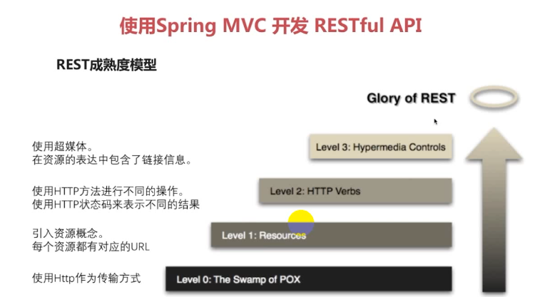
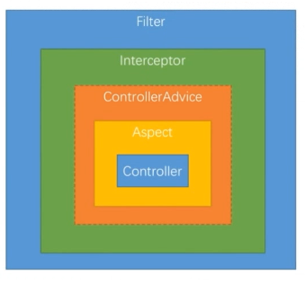

<!DOCTYPE html>
<html>
  <head>
    <meta charset="utf-8">
    <meta http-equiv="X-UA-Compatible" content="IE=edge">
    <meta name="viewport" content="width=device-width, initial-scale=1, maximum-scale=1">
    
    <meta name="theme-color" content="#33363b">
    <meta name="msapplication-TileColor" content="#33363b">
    
    
    
    <meta name="keywords" content="Life, ARIA, Hexo">
    
    
    <link rel="apple-touch-icon" sizes="180x180" href="/favicons/apple-touch-icon.png">
    
    
    <link rel="icon" type="image/png" sizes="192x192" href="/favicons/android-chrome-192x192.png">
    
    
    <link rel="icon" type="image/png" sizes="32x32" href="/favicons/favicon-32x32.png">
    
    
    <link rel="icon" type="image/png" sizes="16x16" href="/favicons/favicon-16x16.png">
    
    
    <link rel="mask-icon" href="/favicons/safari-pinned-tab.svg" color="#33363b">
    
    
    <link rel="manifest" href="/favicons/site.webmanifest">
    
    
    <meta name="msapplication-config" content="/favicons/browserconfig.xml">
    
    
    <link rel="alternate" href="/atom.xml" title="程序猿的日常" type="application/atom+xml" />
    
    
    <link rel="shortcut icon" type="image/x-icon" href="/favicons/favicon.ico">
    
    
    <link rel="stylesheet" type="text/css" href="/css/normalize.css">
    <link rel="stylesheet" type="text/css" href="/css/index.css">
    
    <link rel="stylesheet" type="text/css" href="/css/sidebar.css">
    
    
<link rel="stylesheet" type="text/css" href="/css/page.css">
<link rel="stylesheet" type="text/css" href="/css/post.css">

    <link rel="stylesheet" type="text/css" href="/css/custom.css">
    <link rel="stylesheet" type="text/css" href="/css/atom-one-dark.css">
    <link rel="stylesheet" type="text/css" href="/css/lightgallery.min.css">
    <script type="text/javascript" src="/js/jquery.min.js"></script>
    <script defer type="text/javascript" src="/js/util.js"></script>
    <script defer type="text/javascript" src="/js/scrollspy.js"></script>
    <script defer type="text/javascript" src="/js/fontawesome-all.min.js"></script>
    <script defer type="text/javascript" src="/js/lightgallery.min.js"></script>
    <script defer type="text/javascript" src="/js/lg-fullscreen.min.js"></script>
    <script defer type="text/javascript" src="/js/lg-hash.min.js"></script>
    <script defer type="text/javascript" src="/js/lg-pager.min.js"></script>
    <script defer type="text/javascript" src="/js/lg-thumbnail.min.js"></script>
    <script defer type="text/javascript" src="/js/lg-zoom.min.js"></script>
    
    <script defer src="/js/busuanzi.pure.mini.js"></script>
    
    
    <script defer type="text/javascript" src="/js/search.js"></script>
    <script type="text/javascript">
    $(document).ready(function () {
      var searchPath = "search.xml";
      if (searchPath.length === 0) {
        searchPath = "search.xml";
      }
      var path = "/" + searchPath;
      searchFunc(path, "search-input", "search-result");
    });
    </script>
    
    
    <script defer type="text/javascript" src="/js/index.js"></script>
    
    <script defer type="text/javascript" src="/js/custom.js"></script>
    <title>使用 Maven Module 搭建spring boot项目（整合Spring Security、Spring Social、spring OAuth）一 | 程序猿的日常</title>
  </head>
  <body itemscope itemtype="http://schema.org/WebPage" lang="default"  data-spy="scroll" data-target=".list-group">
    
<header id="header" class="header" style="background: #33363b;">
  <div class="container">
    <div class="header-container">
      <div class="header-title">
        <h1 class="title"><a href="/">程序猿的日常</a></h1>
        <h2 class="subtitle"></h2>
      </div>
      <div class="logo">
        
      </div>
    </div>
    
<nav id="nav" class="nav">
  <a id="nav-toggle" class="nav-toggle"><i class="fas fa-bars"></i></a>
  <ul id="menu">
    
    <li><a href="/">首页</a></li>
    
    <li><a href="/archives/">Archives</a></li>
    
  </ul>
</nav>


  </div>
</header>


    <main id="main" class="main">
      <div class="container">
        <div class="main-container">
          <div class="content">
            
<div id="post" class="post">
  
  <article class="post-container card" itemscope itemtype="http://schema.org/Article">
    <div class="post-block">
      <link itemprop="mainEntityOfPage" href="http://yoursite.com/2018/07/12/spring_security/1.SpringSecurityRESTful/">
      <span hidden itemprop="author" itemscope itemtype="http://schema.org/Person">
       <meta itemprop="name" content="龙门小左">
       <meta itemprop="description" content="">
       <meta itemprop="image" content="/images/avatar.png">
      </span>
      <span hidden itemprop="publisher" itemscope itemtype="http://schema.org/Organization">
       <meta itemprop="name" content="程序猿的日常">
      </span>
    </div>
    <header class="post-header">
      <h1 class="post-title" itemprop="name headline">使用 Maven Module 搭建spring boot项目（整合Spring Security、Spring Social、spring OAuth）一</h1>
      <div class="post-meta">
        
        <span class="post-date">
          <i class="far fa-calendar-plus"></i><span><time title="post-date" itemprop="dateCreated datePublished" datetime="2018-07-12T10:00:00+08:00">2018-07-12 10:00:00</time></span>
        </span>
        
        
        
      </div>
    </header>
    <main class="post-main" itemprop="articleBody">
      <h1 id="使用-Maven-Module-搭建spring-boot项目（整合Spring-Security、Spring-Social、spring-OAuth）一"><a href="#使用-Maven-Module-搭建spring-boot项目（整合Spring-Security、Spring-Social、spring-OAuth）一" class="headerlink" title="使用 Maven Module 搭建spring boot项目（整合Spring Security、Spring Social、spring OAuth）一"></a>使用 Maven Module 搭建spring boot项目（整合Spring Security、Spring Social、spring OAuth）一</h1><table>
<thead>
<tr>
<th>版本号</th>
<th>作者</th>
<th>日期</th>
<th>备注</th>
</tr>
</thead>
<tbody>
<tr>
<td>V0.1</td>
<td>谭键胜</td>
<td>2018-04-03</td>
<td>初稿</td>
</tr>
<tr>
<td>V0.2</td>
<td>谭键胜</td>
<td>2018-04-18</td>
<td>引入lombok</td>
</tr>
</tbody>
</table>
<hr>
<h2 id="简介"><a href="#简介" class="headerlink" title="简介"></a>简介</h2><h3 id="项目环境、组件及目标"><a href="#项目环境、组件及目标" class="headerlink" title="项目环境、组件及目标"></a>项目环境、组件及目标</h3><ol>
<li><p>开发环境</p>
<p>Jdk1.8、Idea、Mysql、maven module</p>
</li>
<li><p>使用框架组件</p>
<p>spring boot 、spring security、spring social、spring oauth</p>
</li>
<li><p>搭建项目目标</p>
<p>深入理解spring security原理、功能及代码</p>
<p>基于spring security及相关框架独立开发认证授权相关功能</p>
<p>掌握抽象和封装的常见技巧，可以编写可重用的模块供他人使用</p>
<p>​</p>
</li>
</ol>
<h3 id="基本概念"><a href="#基本概念" class="headerlink" title="基本概念"></a>基本概念</h3><h4 id="Spring-Security"><a href="#Spring-Security" class="headerlink" title="Spring Security"></a>Spring Security</h4><p>​    Spring Security是一个能够为基于Spring的企业应用系统提供声明式的安全访问控制解决方案的安全框架。它提供了一组可以在Spring应用上下文中配置的Bean，充分利用了Spring IoC，DI（控制反转Inversion of Control ,DI:Dependency Injection 依赖注入）和AOP（面向切面编程）功能，为应用系统提供声明式的安全访问控制功能，减少了为企业系统安全控制编写大量重复代码的工作。</p>
<h4 id="Spring-IO-platform"><a href="#Spring-IO-platform" class="headerlink" title="Spring IO platform"></a>Spring IO platform</h4><p>​    Spring IO是构建现代应用程序的一个有凝聚力的版本化平台。这是一个模块化的企业级分布，提供了一组策略依赖关系，同时让开发人员完全控制只部署他们所需的部分。</p>
<p>   <strong>主要解决问题：</strong></p>
<p>​    在使用Spring的时候，经常会使用到第三方库，一般大家都是根据经验挑选一个版本号或挑选最新的，随意性较大，其实这是有问题的，除非做过完整的测试，保证集成该版本的依赖不会出现问题，且后续集成其它第三方库的时候也不会出现问题，否则风险较大，且后续扩展会越来越困难，因为随着业务复杂度的增加，集成的第三方组件会越来会多，依赖之间的关联也会也来越复杂。</p>
<p>   <strong>优点：</strong><br>       Spring IO平台提供了各种Spring项目及其依赖项的版本。通过指定的配置添加到您的构建脚本中，您就可以声明您的依赖关系，而无需担心版本号，保证最大限度的扩展，而且该版本的依赖是经过测试的，可以完美的与其它组件结合使用。</p>
<h3 id="项目架构"><a href="#项目架构" class="headerlink" title="项目架构"></a>项目架构</h3><figure class="highlight plain"><table><tr><td class="gutter"><pre><span class="line">1</span><br><span class="line">2</span><br><span class="line">3</span><br><span class="line">4</span><br><span class="line">5</span><br><span class="line">6</span><br><span class="line">7</span><br><span class="line">8</span><br><span class="line">9</span><br><span class="line">10</span><br></pre></td><td class="code"><pre><span class="line">airports</span><br><span class="line">    | - - airport-core   &lt; - - | </span><br><span class="line">            | - - pom.xml      |</span><br><span class="line">    | - - airport-browser  - - |(依赖)   &lt;-| </span><br><span class="line">            | - - pom.xml      |           |</span><br><span class="line">    | - - airport-app      - - |         &lt;-|</span><br><span class="line">            | - - pom.xml                  |(选择性依赖) </span><br><span class="line">    | - - traffic-forecast   - - - - - - - |</span><br><span class="line">            | - - pom.xml</span><br><span class="line">    | - - pom.xml</span><br></pre></td></tr></table></figure>
<p><strong>airports:</strong> 项目父模块，只负责管理其下的子项目，只有一个pom文件，并且pom文件中打包方式为</p>
<p><code>&lt;packaging&gt;pom&lt;/packaging&gt;</code></p>
<figure class="highlight xml"><table><tr><td class="gutter"><pre><span class="line">1</span><br><span class="line">2</span><br><span class="line">3</span><br><span class="line">4</span><br><span class="line">5</span><br><span class="line">6</span><br><span class="line">7</span><br><span class="line">8</span><br><span class="line">9</span><br><span class="line">10</span><br><span class="line">11</span><br><span class="line">12</span><br><span class="line">13</span><br><span class="line">14</span><br><span class="line">15</span><br><span class="line">16</span><br><span class="line">17</span><br><span class="line">18</span><br><span class="line">19</span><br><span class="line">20</span><br><span class="line">21</span><br><span class="line">22</span><br><span class="line">23</span><br><span class="line">24</span><br><span class="line">25</span><br><span class="line">26</span><br><span class="line">27</span><br><span class="line">28</span><br><span class="line">29</span><br><span class="line">30</span><br><span class="line">31</span><br><span class="line">32</span><br><span class="line">33</span><br><span class="line">34</span><br><span class="line">35</span><br><span class="line">36</span><br><span class="line">37</span><br><span class="line">38</span><br><span class="line">39</span><br><span class="line">40</span><br><span class="line">41</span><br><span class="line">42</span><br><span class="line">43</span><br><span class="line">44</span><br><span class="line">45</span><br><span class="line">46</span><br><span class="line">47</span><br><span class="line">48</span><br></pre></td><td class="code"><pre><span class="line"><span class="tag">&lt;<span class="name">modules</span>&gt;</span></span><br><span class="line">        <span class="tag">&lt;<span class="name">module</span>&gt;</span>airportsCore<span class="tag">&lt;/<span class="name">module</span>&gt;</span></span><br><span class="line">        <span class="tag">&lt;<span class="name">module</span>&gt;</span>airportsBrowser<span class="tag">&lt;/<span class="name">module</span>&gt;</span></span><br><span class="line">        <span class="tag">&lt;<span class="name">module</span>&gt;</span>airportsApp<span class="tag">&lt;/<span class="name">module</span>&gt;</span></span><br><span class="line">        <span class="tag">&lt;<span class="name">module</span>&gt;</span>trafficForecast<span class="tag">&lt;/<span class="name">module</span>&gt;</span></span><br><span class="line">    <span class="tag">&lt;/<span class="name">modules</span>&gt;</span></span><br><span class="line">    <span class="tag">&lt;<span class="name">packaging</span>&gt;</span>pom<span class="tag">&lt;/<span class="name">packaging</span>&gt;</span></span><br><span class="line"></span><br><span class="line">    <span class="tag">&lt;<span class="name">properties</span>&gt;</span></span><br><span class="line">        <span class="tag">&lt;<span class="name">com.chuIllusion.version</span>&gt;</span>1.0-SNAPSHOT<span class="tag">&lt;/<span class="name">com.chuIllusion.version</span>&gt;</span></span><br><span class="line">        <span class="tag">&lt;<span class="name">project.build.sourceEncoding</span>&gt;</span>UTF-8<span class="tag">&lt;/<span class="name">project.build.sourceEncoding</span>&gt;</span></span><br><span class="line">        <span class="tag">&lt;<span class="name">project.reporting.outputEncoding</span>&gt;</span>UTF-8<span class="tag">&lt;/<span class="name">project.reporting.outputEncoding</span>&gt;</span></span><br><span class="line">        <span class="tag">&lt;<span class="name">java.version</span>&gt;</span>1.8<span class="tag">&lt;/<span class="name">java.version</span>&gt;</span></span><br><span class="line">    <span class="tag">&lt;/<span class="name">properties</span>&gt;</span></span><br><span class="line"></span><br><span class="line">    <span class="tag">&lt;<span class="name">dependencyManagement</span>&gt;</span></span><br><span class="line">        <span class="tag">&lt;<span class="name">dependencies</span>&gt;</span></span><br><span class="line">            <span class="tag">&lt;<span class="name">dependency</span>&gt;</span></span><br><span class="line">                <span class="tag">&lt;<span class="name">groupId</span>&gt;</span>io.spring.platform<span class="tag">&lt;/<span class="name">groupId</span>&gt;</span></span><br><span class="line">                <span class="tag">&lt;<span class="name">artifactId</span>&gt;</span>platform-bom<span class="tag">&lt;/<span class="name">artifactId</span>&gt;</span></span><br><span class="line">                <span class="tag">&lt;<span class="name">version</span>&gt;</span>Brussels-SR4<span class="tag">&lt;/<span class="name">version</span>&gt;</span></span><br><span class="line">                <span class="tag">&lt;<span class="name">type</span>&gt;</span>pom<span class="tag">&lt;/<span class="name">type</span>&gt;</span></span><br><span class="line">                <span class="tag">&lt;<span class="name">scope</span>&gt;</span>import<span class="tag">&lt;/<span class="name">scope</span>&gt;</span></span><br><span class="line">            <span class="tag">&lt;/<span class="name">dependency</span>&gt;</span></span><br><span class="line">            <span class="tag">&lt;<span class="name">dependency</span>&gt;</span></span><br><span class="line">                <span class="tag">&lt;<span class="name">groupId</span>&gt;</span>org.springframework.cloud<span class="tag">&lt;/<span class="name">groupId</span>&gt;</span></span><br><span class="line">                <span class="tag">&lt;<span class="name">artifactId</span>&gt;</span>spring-cloud-dependencies<span class="tag">&lt;/<span class="name">artifactId</span>&gt;</span></span><br><span class="line">                <span class="tag">&lt;<span class="name">version</span>&gt;</span>Dalston.SR2<span class="tag">&lt;/<span class="name">version</span>&gt;</span></span><br><span class="line">                <span class="tag">&lt;<span class="name">type</span>&gt;</span>pom<span class="tag">&lt;/<span class="name">type</span>&gt;</span></span><br><span class="line">                <span class="tag">&lt;<span class="name">scope</span>&gt;</span>import<span class="tag">&lt;/<span class="name">scope</span>&gt;</span></span><br><span class="line">            <span class="tag">&lt;/<span class="name">dependency</span>&gt;</span></span><br><span class="line">        <span class="tag">&lt;/<span class="name">dependencies</span>&gt;</span></span><br><span class="line">    <span class="tag">&lt;/<span class="name">dependencyManagement</span>&gt;</span></span><br><span class="line"></span><br><span class="line">    <span class="tag">&lt;<span class="name">build</span>&gt;</span></span><br><span class="line">        <span class="tag">&lt;<span class="name">plugins</span>&gt;</span></span><br><span class="line">            <span class="tag">&lt;<span class="name">plugin</span>&gt;</span></span><br><span class="line">                <span class="tag">&lt;<span class="name">groupId</span>&gt;</span>org.apache.maven.plugins<span class="tag">&lt;/<span class="name">groupId</span>&gt;</span></span><br><span class="line">                <span class="tag">&lt;<span class="name">artifactId</span>&gt;</span>maven-compiler-plugin<span class="tag">&lt;/<span class="name">artifactId</span>&gt;</span></span><br><span class="line">                <span class="tag">&lt;<span class="name">version</span>&gt;</span>2.3.2<span class="tag">&lt;/<span class="name">version</span>&gt;</span></span><br><span class="line">                <span class="tag">&lt;<span class="name">configuration</span>&gt;</span></span><br><span class="line">                    <span class="tag">&lt;<span class="name">source</span>&gt;</span>$&#123;java.version&#125;<span class="tag">&lt;/<span class="name">source</span>&gt;</span></span><br><span class="line">                    <span class="tag">&lt;<span class="name">target</span>&gt;</span>$&#123;java.version&#125;<span class="tag">&lt;/<span class="name">target</span>&gt;</span></span><br><span class="line">                    <span class="tag">&lt;<span class="name">encoding</span>&gt;</span>$&#123;project.build.sourceEncoding&#125;<span class="tag">&lt;/<span class="name">encoding</span>&gt;</span></span><br><span class="line">                <span class="tag">&lt;/<span class="name">configuration</span>&gt;</span></span><br><span class="line">            <span class="tag">&lt;/<span class="name">plugin</span>&gt;</span></span><br><span class="line">        <span class="tag">&lt;/<span class="name">plugins</span>&gt;</span></span><br><span class="line">    <span class="tag">&lt;/<span class="name">build</span>&gt;</span></span><br></pre></td></tr></table></figure>
<p><strong>airport-core:</strong> 核心业务逻辑，提供核心通用功能</p>
<p><code>pom.xml</code></p>
<p>引入核心包，包括jdbc、aop及一些基本工具类，并且引入核心组件：spring security、spring oauth、spring social</p>
<figure class="highlight xml"><table><tr><td class="gutter"><pre><span class="line">1</span><br><span class="line">2</span><br><span class="line">3</span><br><span class="line">4</span><br><span class="line">5</span><br><span class="line">6</span><br><span class="line">7</span><br><span class="line">8</span><br><span class="line">9</span><br><span class="line">10</span><br><span class="line">11</span><br><span class="line">12</span><br><span class="line">13</span><br><span class="line">14</span><br><span class="line">15</span><br><span class="line">16</span><br><span class="line">17</span><br><span class="line">18</span><br><span class="line">19</span><br><span class="line">20</span><br><span class="line">21</span><br><span class="line">22</span><br><span class="line">23</span><br><span class="line">24</span><br><span class="line">25</span><br><span class="line">26</span><br><span class="line">27</span><br><span class="line">28</span><br><span class="line">29</span><br><span class="line">30</span><br><span class="line">31</span><br><span class="line">32</span><br><span class="line">33</span><br><span class="line">34</span><br><span class="line">35</span><br><span class="line">36</span><br><span class="line">37</span><br><span class="line">38</span><br><span class="line">39</span><br><span class="line">40</span><br><span class="line">41</span><br><span class="line">42</span><br><span class="line">43</span><br><span class="line">44</span><br><span class="line">45</span><br><span class="line">46</span><br><span class="line">47</span><br><span class="line">48</span><br><span class="line">49</span><br><span class="line">50</span><br><span class="line">51</span><br><span class="line">52</span><br><span class="line">53</span><br><span class="line">54</span><br><span class="line">55</span><br><span class="line">56</span><br><span class="line">57</span><br><span class="line">58</span><br><span class="line">59</span><br><span class="line">60</span><br><span class="line">61</span><br><span class="line">62</span><br><span class="line">63</span><br><span class="line">64</span><br><span class="line">65</span><br><span class="line">66</span><br><span class="line">67</span><br></pre></td><td class="code"><pre><span class="line"><span class="tag">&lt;<span class="name">dependencies</span>&gt;</span></span><br><span class="line">    <span class="tag">&lt;<span class="name">dependency</span>&gt;</span></span><br><span class="line">        <span class="tag">&lt;<span class="name">groupId</span>&gt;</span>org.springframework.boot<span class="tag">&lt;/<span class="name">groupId</span>&gt;</span></span><br><span class="line">        <span class="tag">&lt;<span class="name">artifactId</span>&gt;</span>spring-boot-starter-jdbc<span class="tag">&lt;/<span class="name">artifactId</span>&gt;</span></span><br><span class="line">    <span class="tag">&lt;/<span class="name">dependency</span>&gt;</span></span><br><span class="line">    <span class="tag">&lt;<span class="name">dependency</span>&gt;</span></span><br><span class="line">        <span class="tag">&lt;<span class="name">groupId</span>&gt;</span>org.mybatis.spring.boot<span class="tag">&lt;/<span class="name">groupId</span>&gt;</span></span><br><span class="line">        <span class="tag">&lt;<span class="name">artifactId</span>&gt;</span>mybatis-spring-boot-starter<span class="tag">&lt;/<span class="name">artifactId</span>&gt;</span></span><br><span class="line">        <span class="tag">&lt;<span class="name">version</span>&gt;</span>1.3.0<span class="tag">&lt;/<span class="name">version</span>&gt;</span></span><br><span class="line">    <span class="tag">&lt;/<span class="name">dependency</span>&gt;</span></span><br><span class="line">    <span class="tag">&lt;<span class="name">dependency</span>&gt;</span></span><br><span class="line">        <span class="tag">&lt;<span class="name">groupId</span>&gt;</span>mysql<span class="tag">&lt;/<span class="name">groupId</span>&gt;</span></span><br><span class="line">        <span class="tag">&lt;<span class="name">artifactId</span>&gt;</span>mysql-connector-java<span class="tag">&lt;/<span class="name">artifactId</span>&gt;</span></span><br><span class="line">    <span class="tag">&lt;/<span class="name">dependency</span>&gt;</span></span><br><span class="line">    <span class="tag">&lt;<span class="name">dependency</span>&gt;</span></span><br><span class="line">        <span class="tag">&lt;<span class="name">groupId</span>&gt;</span>commons-lang<span class="tag">&lt;/<span class="name">groupId</span>&gt;</span></span><br><span class="line">        <span class="tag">&lt;<span class="name">artifactId</span>&gt;</span>commons-lang<span class="tag">&lt;/<span class="name">artifactId</span>&gt;</span></span><br><span class="line">    <span class="tag">&lt;/<span class="name">dependency</span>&gt;</span></span><br><span class="line">    <span class="tag">&lt;<span class="name">dependency</span>&gt;</span></span><br><span class="line">        <span class="tag">&lt;<span class="name">groupId</span>&gt;</span>commons-collections<span class="tag">&lt;/<span class="name">groupId</span>&gt;</span></span><br><span class="line">        <span class="tag">&lt;<span class="name">artifactId</span>&gt;</span>commons-collections<span class="tag">&lt;/<span class="name">artifactId</span>&gt;</span></span><br><span class="line">    <span class="tag">&lt;/<span class="name">dependency</span>&gt;</span></span><br><span class="line">    <span class="tag">&lt;<span class="name">dependency</span>&gt;</span></span><br><span class="line">        <span class="tag">&lt;<span class="name">groupId</span>&gt;</span>commons-io<span class="tag">&lt;/<span class="name">groupId</span>&gt;</span></span><br><span class="line">        <span class="tag">&lt;<span class="name">artifactId</span>&gt;</span>commons-io<span class="tag">&lt;/<span class="name">artifactId</span>&gt;</span></span><br><span class="line">    <span class="tag">&lt;/<span class="name">dependency</span>&gt;</span></span><br><span class="line">    <span class="tag">&lt;<span class="name">dependency</span>&gt;</span></span><br><span class="line">        <span class="tag">&lt;<span class="name">groupId</span>&gt;</span>commons-beanutils<span class="tag">&lt;/<span class="name">groupId</span>&gt;</span></span><br><span class="line">        <span class="tag">&lt;<span class="name">artifactId</span>&gt;</span>commons-beanutils<span class="tag">&lt;/<span class="name">artifactId</span>&gt;</span></span><br><span class="line">    <span class="tag">&lt;/<span class="name">dependency</span>&gt;</span></span><br><span class="line">    <span class="tag">&lt;<span class="name">dependency</span>&gt;</span></span><br><span class="line">        <span class="tag">&lt;<span class="name">groupId</span>&gt;</span>org.springframework.boot<span class="tag">&lt;/<span class="name">groupId</span>&gt;</span></span><br><span class="line">        <span class="tag">&lt;<span class="name">artifactId</span>&gt;</span>spring-boot-configuration-processor<span class="tag">&lt;/<span class="name">artifactId</span>&gt;</span></span><br><span class="line">    <span class="tag">&lt;/<span class="name">dependency</span>&gt;</span></span><br><span class="line">    <span class="tag">&lt;<span class="name">dependency</span>&gt;</span></span><br><span class="line">        <span class="tag">&lt;<span class="name">groupId</span>&gt;</span>org.springframework.boot<span class="tag">&lt;/<span class="name">groupId</span>&gt;</span></span><br><span class="line">        <span class="tag">&lt;<span class="name">artifactId</span>&gt;</span>spring-boot-starter-aop<span class="tag">&lt;/<span class="name">artifactId</span>&gt;</span></span><br><span class="line">    <span class="tag">&lt;/<span class="name">dependency</span>&gt;</span></span><br><span class="line"></span><br><span class="line">    <span class="comment">&lt;!-- spring security/social/oauth --&gt;</span></span><br><span class="line">    <span class="comment">&lt;!-- 引用spring security、spring oauth核心 --&gt;</span></span><br><span class="line">    <span class="tag">&lt;<span class="name">dependency</span>&gt;</span></span><br><span class="line">        <span class="tag">&lt;<span class="name">groupId</span>&gt;</span>org.springframework.cloud<span class="tag">&lt;/<span class="name">groupId</span>&gt;</span></span><br><span class="line">        <span class="tag">&lt;<span class="name">artifactId</span>&gt;</span>spring-cloud-starter-oauth2<span class="tag">&lt;/<span class="name">artifactId</span>&gt;</span></span><br><span class="line">    <span class="tag">&lt;/<span class="name">dependency</span>&gt;</span></span><br><span class="line">    <span class="comment">&lt;!-- spring social --&gt;</span></span><br><span class="line">    <span class="comment">&lt;!-- 提供Java 配置 --&gt;</span></span><br><span class="line">    <span class="tag">&lt;<span class="name">dependency</span>&gt;</span></span><br><span class="line">        <span class="tag">&lt;<span class="name">groupId</span>&gt;</span>org.springframework.social<span class="tag">&lt;/<span class="name">groupId</span>&gt;</span></span><br><span class="line">        <span class="tag">&lt;<span class="name">artifactId</span>&gt;</span>spring-social-config<span class="tag">&lt;/<span class="name">artifactId</span>&gt;</span></span><br><span class="line">    <span class="tag">&lt;/<span class="name">dependency</span>&gt;</span></span><br><span class="line">    <span class="comment">&lt;!-- 提供社交连接框架和OAuth 客户端支持 --&gt;</span></span><br><span class="line">    <span class="tag">&lt;<span class="name">dependency</span>&gt;</span></span><br><span class="line">        <span class="tag">&lt;<span class="name">groupId</span>&gt;</span>org.springframework.social<span class="tag">&lt;/<span class="name">groupId</span>&gt;</span></span><br><span class="line">        <span class="tag">&lt;<span class="name">artifactId</span>&gt;</span>spring-social-core<span class="tag">&lt;/<span class="name">artifactId</span>&gt;</span></span><br><span class="line">    <span class="tag">&lt;/<span class="name">dependency</span>&gt;</span></span><br><span class="line">    <span class="comment">&lt;!-- 提供社交安全支持 --&gt;</span></span><br><span class="line">    <span class="tag">&lt;<span class="name">dependency</span>&gt;</span></span><br><span class="line">        <span class="tag">&lt;<span class="name">groupId</span>&gt;</span>org.springframework.social<span class="tag">&lt;/<span class="name">groupId</span>&gt;</span></span><br><span class="line">        <span class="tag">&lt;<span class="name">artifactId</span>&gt;</span>spring-social-security<span class="tag">&lt;/<span class="name">artifactId</span>&gt;</span></span><br><span class="line">    <span class="tag">&lt;/<span class="name">dependency</span>&gt;</span></span><br><span class="line">    <span class="comment">&lt;!-- 管理web应用程序的连接 --&gt;</span></span><br><span class="line">    <span class="tag">&lt;<span class="name">dependency</span>&gt;</span></span><br><span class="line">        <span class="tag">&lt;<span class="name">groupId</span>&gt;</span>org.springframework.social<span class="tag">&lt;/<span class="name">groupId</span>&gt;</span></span><br><span class="line">        <span class="tag">&lt;<span class="name">artifactId</span>&gt;</span>spring-social-web<span class="tag">&lt;/<span class="name">artifactId</span>&gt;</span></span><br><span class="line">    <span class="tag">&lt;/<span class="name">dependency</span>&gt;</span></span><br><span class="line"><span class="tag">&lt;/<span class="name">dependencies</span>&gt;</span></span><br></pre></td></tr></table></figure>
<p><strong>airport-browser:</strong> 浏览器相关业务，依赖核心项目，拓展浏览器项目特有的功能</p>
<p><code>pom.xml</code></p>
<p>引入核心模块的支持，并拓展浏览器特有的支持，如session</p>
<figure class="highlight xml"><table><tr><td class="gutter"><pre><span class="line">1</span><br><span class="line">2</span><br><span class="line">3</span><br><span class="line">4</span><br><span class="line">5</span><br><span class="line">6</span><br><span class="line">7</span><br><span class="line">8</span><br><span class="line">9</span><br><span class="line">10</span><br><span class="line">11</span><br><span class="line">12</span><br><span class="line">13</span><br><span class="line">14</span><br><span class="line">15</span><br><span class="line">16</span><br><span class="line">17</span><br></pre></td><td class="code"><pre><span class="line"><span class="tag">&lt;<span class="name">dependencies</span>&gt;</span></span><br><span class="line">    <span class="tag">&lt;<span class="name">dependency</span>&gt;</span></span><br><span class="line">        <span class="tag">&lt;<span class="name">groupId</span>&gt;</span>com.chuIllusion<span class="tag">&lt;/<span class="name">groupId</span>&gt;</span></span><br><span class="line">        <span class="tag">&lt;<span class="name">artifactId</span>&gt;</span>airports.core<span class="tag">&lt;/<span class="name">artifactId</span>&gt;</span></span><br><span class="line">        <span class="tag">&lt;<span class="name">version</span>&gt;</span>$&#123;com.chuIllusion.version&#125;<span class="tag">&lt;/<span class="name">version</span>&gt;</span></span><br><span class="line">    <span class="tag">&lt;/<span class="name">dependency</span>&gt;</span></span><br><span class="line"></span><br><span class="line">    <span class="tag">&lt;<span class="name">dependency</span>&gt;</span></span><br><span class="line">        <span class="tag">&lt;<span class="name">groupId</span>&gt;</span>org.springframework.session<span class="tag">&lt;/<span class="name">groupId</span>&gt;</span></span><br><span class="line">        <span class="tag">&lt;<span class="name">artifactId</span>&gt;</span>spring-session<span class="tag">&lt;/<span class="name">artifactId</span>&gt;</span></span><br><span class="line">    <span class="tag">&lt;/<span class="name">dependency</span>&gt;</span></span><br><span class="line">    <span class="comment">&lt;!-- ============================== Thymeleaf模板引擎 ================================= --&gt;</span></span><br><span class="line">    <span class="tag">&lt;<span class="name">dependency</span>&gt;</span></span><br><span class="line">        <span class="tag">&lt;<span class="name">groupId</span>&gt;</span>org.springframework.boot<span class="tag">&lt;/<span class="name">groupId</span>&gt;</span></span><br><span class="line">        <span class="tag">&lt;<span class="name">artifactId</span>&gt;</span>spring-boot-starter-thymeleaf<span class="tag">&lt;/<span class="name">artifactId</span>&gt;</span></span><br><span class="line">    <span class="tag">&lt;/<span class="name">dependency</span>&gt;</span></span><br><span class="line"><span class="tag">&lt;/<span class="name">dependencies</span>&gt;</span></span><br></pre></td></tr></table></figure>
<p><strong>airport-app:</strong> App或前后端分离项目中相关业务，依赖核心项目，拓展了前后端分离项目的功能</p>
<p><code>pom.xml</code></p>
<p>引入核心模块的支持，并拓展App或前后端分离项目特有的支持，如使用redis代替session存储</p>
<figure class="highlight xml"><table><tr><td class="gutter"><pre><span class="line">1</span><br><span class="line">2</span><br><span class="line">3</span><br><span class="line">4</span><br><span class="line">5</span><br><span class="line">6</span><br><span class="line">7</span><br><span class="line">8</span><br><span class="line">9</span><br><span class="line">10</span><br><span class="line">11</span><br></pre></td><td class="code"><pre><span class="line"><span class="tag">&lt;<span class="name">dependencies</span>&gt;</span></span><br><span class="line">    <span class="tag">&lt;<span class="name">dependency</span>&gt;</span></span><br><span class="line">        <span class="tag">&lt;<span class="name">groupId</span>&gt;</span>com.turingdi<span class="tag">&lt;/<span class="name">groupId</span>&gt;</span></span><br><span class="line">        <span class="tag">&lt;<span class="name">artifactId</span>&gt;</span>airports.core<span class="tag">&lt;/<span class="name">artifactId</span>&gt;</span></span><br><span class="line">        <span class="tag">&lt;<span class="name">version</span>&gt;</span>1.0-SNAPSHOT<span class="tag">&lt;/<span class="name">version</span>&gt;</span></span><br><span class="line">    <span class="tag">&lt;/<span class="name">dependency</span>&gt;</span></span><br><span class="line">    <span class="tag">&lt;<span class="name">dependency</span>&gt;</span></span><br><span class="line">        <span class="tag">&lt;<span class="name">groupId</span>&gt;</span>org.springframework.boot<span class="tag">&lt;/<span class="name">groupId</span>&gt;</span></span><br><span class="line">        <span class="tag">&lt;<span class="name">artifactId</span>&gt;</span>spring-boot-starter-data-redis<span class="tag">&lt;/<span class="name">artifactId</span>&gt;</span></span><br><span class="line">    <span class="tag">&lt;/<span class="name">dependency</span>&gt;</span></span><br><span class="line"><span class="tag">&lt;/<span class="name">dependencies</span>&gt;</span></span><br></pre></td></tr></table></figure>
<p><strong>traffic-forecast:</strong>  项目程序，根据项目情况，选择性依赖浏览器模块或App模块</p>
<p><code>pom.xml</code></p>
<p>根据需求，引用浏览器核心支持或App核心支持,并且引用编译插件的支持</p>
<figure class="highlight xml"><table><tr><td class="gutter"><pre><span class="line">1</span><br><span class="line">2</span><br><span class="line">3</span><br><span class="line">4</span><br><span class="line">5</span><br><span class="line">6</span><br><span class="line">7</span><br><span class="line">8</span><br><span class="line">9</span><br><span class="line">10</span><br><span class="line">11</span><br><span class="line">12</span><br><span class="line">13</span><br><span class="line">14</span><br><span class="line">15</span><br><span class="line">16</span><br><span class="line">17</span><br><span class="line">18</span><br><span class="line">19</span><br><span class="line">20</span><br><span class="line">21</span><br><span class="line">22</span><br><span class="line">23</span><br><span class="line">24</span><br><span class="line">25</span><br><span class="line">26</span><br><span class="line">27</span><br><span class="line">28</span><br><span class="line">29</span><br><span class="line">30</span><br><span class="line">31</span><br><span class="line">32</span><br><span class="line">33</span><br><span class="line">34</span><br><span class="line">35</span><br><span class="line">36</span><br></pre></td><td class="code"><pre><span class="line"><span class="tag">&lt;<span class="name">dependencies</span>&gt;</span></span><br><span class="line">    <span class="comment">&lt;!--&lt;dependency&gt;--&gt;</span></span><br><span class="line">        <span class="comment">&lt;!--&lt;groupId&gt;com.chuIllusion&lt;/groupId&gt;--&gt;</span></span><br><span class="line">        <span class="comment">&lt;!--&lt;artifactId&gt;airports.browser&lt;/artifactId&gt;--&gt;</span></span><br><span class="line">        <span class="comment">&lt;!--&lt;version&gt;$&#123;com.turingdi.version&#125;&lt;/version&gt;--&gt;</span></span><br><span class="line">    <span class="comment">&lt;!--&lt;/dependency&gt;--&gt;</span></span><br><span class="line">    <span class="tag">&lt;<span class="name">dependency</span>&gt;</span></span><br><span class="line">        <span class="tag">&lt;<span class="name">groupId</span>&gt;</span>com.chuIllusion<span class="tag">&lt;/<span class="name">groupId</span>&gt;</span></span><br><span class="line">        <span class="tag">&lt;<span class="name">artifactId</span>&gt;</span>airports.app<span class="tag">&lt;/<span class="name">artifactId</span>&gt;</span></span><br><span class="line">        <span class="tag">&lt;<span class="name">version</span>&gt;</span>$&#123;com.chuIllusion.version&#125;<span class="tag">&lt;/<span class="name">version</span>&gt;</span></span><br><span class="line">    <span class="tag">&lt;/<span class="name">dependency</span>&gt;</span></span><br><span class="line">	<span class="comment">&lt;!-- 引入测试框架 --&gt;</span></span><br><span class="line">    <span class="tag">&lt;<span class="name">dependency</span>&gt;</span></span><br><span class="line">        <span class="tag">&lt;<span class="name">groupId</span>&gt;</span>org.springframework.boot<span class="tag">&lt;/<span class="name">groupId</span>&gt;</span></span><br><span class="line">        <span class="tag">&lt;<span class="name">artifactId</span>&gt;</span>spring-boot-starter-test<span class="tag">&lt;/<span class="name">artifactId</span>&gt;</span></span><br><span class="line">    <span class="tag">&lt;/<span class="name">dependency</span>&gt;</span></span><br><span class="line"><span class="tag">&lt;/<span class="name">dependencies</span>&gt;</span></span><br><span class="line"></span><br><span class="line"><span class="tag">&lt;<span class="name">build</span>&gt;</span></span><br><span class="line">    <span class="tag">&lt;<span class="name">plugins</span>&gt;</span></span><br><span class="line">        <span class="tag">&lt;<span class="name">plugin</span>&gt;</span></span><br><span class="line">            <span class="tag">&lt;<span class="name">groupId</span>&gt;</span>org.springframework.boot<span class="tag">&lt;/<span class="name">groupId</span>&gt;</span></span><br><span class="line">            <span class="tag">&lt;<span class="name">artifactId</span>&gt;</span>spring-boot-maven-plugin<span class="tag">&lt;/<span class="name">artifactId</span>&gt;</span></span><br><span class="line">            <span class="tag">&lt;<span class="name">version</span>&gt;</span>1.3.3.RELEASE<span class="tag">&lt;/<span class="name">version</span>&gt;</span></span><br><span class="line">            <span class="tag">&lt;<span class="name">executions</span>&gt;</span></span><br><span class="line">                <span class="tag">&lt;<span class="name">execution</span>&gt;</span></span><br><span class="line">                    <span class="tag">&lt;<span class="name">goals</span>&gt;</span></span><br><span class="line">                        <span class="comment">&lt;!-- 重新打包现有的JAR和WAR存档，以便可以使用java -jar从命令行执行它们。 --&gt;</span></span><br><span class="line">                        <span class="tag">&lt;<span class="name">goal</span>&gt;</span>repackage<span class="tag">&lt;/<span class="name">goal</span>&gt;</span></span><br><span class="line">                    <span class="tag">&lt;/<span class="name">goals</span>&gt;</span></span><br><span class="line">                <span class="tag">&lt;/<span class="name">execution</span>&gt;</span></span><br><span class="line">            <span class="tag">&lt;/<span class="name">executions</span>&gt;</span></span><br><span class="line">        <span class="tag">&lt;/<span class="name">plugin</span>&gt;</span></span><br><span class="line">    <span class="tag">&lt;/<span class="name">plugins</span>&gt;</span></span><br><span class="line">    <span class="tag">&lt;<span class="name">finalName</span>&gt;</span>trafficForecast<span class="tag">&lt;/<span class="name">finalName</span>&gt;</span></span><br><span class="line"><span class="tag">&lt;/<span class="name">build</span>&gt;</span></span><br></pre></td></tr></table></figure>
<p><strong>注意</strong></p>
<ol>
<li><p>spring boot 包扫描机制</p>
<p>​    在项目程序启动前，一定要保证spring boot 启动类一定是在所有依赖项目中父级包，启动类扫描同级包和下级包的所有类才能生效，否则如果其他项目中有使用配置的类（相对于启动类是在启动类的上一级）则无法生效，建议将使用同一命名，以下是我这几个项目包的结构，每个模块中的代码都对应在其标准包下</p>
<p>​    在核心包中：com.chuillusion.core，在浏览器包中：com.chuillusion.browser，在App包中：com.chuillusion.app，在项目程序中：com.chuIllusion.trafiicforecast，启动类在<em>com.chuIllusion</em>包中创建</p>
</li>
<li><p>依赖配置</p>
<p>​    在项目中引入jdbc的依赖需要配置数据源、session的依赖需要配置session类型，否则系统启动会报错，根据系统报错信息，查找原因，排查原因，则很快可以解决问题</p>
</li>
<li><p>启动类</p>
<p>maven 默认 编译成jar包，使用java -jar运行命令即可将项目运行</p>
<p>但是在项目中我们需要war包，则要继承<code>SpringBootServletInitializer</code>并且实现其<code>config</code>方法，否则会报错误（无法找到入口）</p>
<figure class="highlight java"><table><tr><td class="gutter"><pre><span class="line">1</span><br><span class="line">2</span><br><span class="line">3</span><br><span class="line">4</span><br><span class="line">5</span><br><span class="line">6</span><br><span class="line">7</span><br><span class="line">8</span><br><span class="line">9</span><br><span class="line">10</span><br><span class="line">11</span><br></pre></td><td class="code"><pre><span class="line"><span class="meta">@SpringBootApplication</span></span><br><span class="line"><span class="keyword">public</span> <span class="class"><span class="keyword">class</span> <span class="title">TrafficForecastEntryApplication</span> <span class="keyword">extends</span> <span class="title">SpringBootServletInitializer</span> </span>&#123;</span><br><span class="line">    <span class="function"><span class="keyword">public</span> <span class="title">TrafficForecastEntryApplication</span><span class="params">()</span> </span>&#123;</span><br><span class="line">    &#125;</span><br><span class="line">    <span class="function"><span class="keyword">protected</span> SpringApplicationBuilder <span class="title">configure</span><span class="params">(SpringApplicationBuilder application)</span> </span>&#123;</span><br><span class="line">        <span class="keyword">return</span> application.sources(<span class="keyword">new</span> Class[]&#123;TrafficForecastEntryApplication.class&#125;);</span><br><span class="line">    &#125;</span><br><span class="line">    <span class="function"><span class="keyword">public</span> <span class="keyword">static</span> <span class="keyword">void</span> <span class="title">main</span><span class="params">(String[] args)</span> </span>&#123;</span><br><span class="line">        SpringApplication.run(TrafficForecastEntryApplication.class, args);</span><br><span class="line">    &#125;</span><br><span class="line">&#125;</span><br></pre></td></tr></table></figure>
</li>
</ol>
<h2 id="RESTFUL-API"><a href="#RESTFUL-API" class="headerlink" title="RESTFUL API"></a>RESTFUL API</h2><h3 id="简介-1"><a href="#简介-1" class="headerlink" title="简介"></a>简介</h3><p>​    <strong>Representational State Transfer</strong>，简称<strong>REST</strong>，一种软件架构风格、设计风格，而不是标准，只是提供了一组设计原则和约束条件。它主要用于客户端和服务器交互类的软件。基于这个风格设计的软件可以更简洁，更有层次，更易于实现缓存等机制。</p>
<p><strong>特点：</strong></p>
<ol>
<li><p>用URL描述资源</p>
</li>
<li><p>使用HTTP方法描述行为，使用HTTP状态码表示不同的结果</p>
<p>HTTP METHOD：GET(从服务器取出资源（一项或多项）)、POST(在服务器新建一个资源)、PUT(在服务器更新资源)、DELETE(从服务器删除资源)</p>
<p>HTTP STATUS CODE：200（请求成功）、401（未授权）、404（未找到资源）、500（服务器内部错误）</p>
</li>
<li><p>使用JSON交互数据</p>
</li>
<li><p>RESTful只是一种风格，并不是强制的标准</p>
</li>
</ol>
<p><strong>例子：</strong></p>
<table>
<thead>
<tr>
<th>URL</th>
<th>METHOD</th>
<th>DESRCIBE</th>
</tr>
</thead>
<tbody>
<tr>
<td>/product</td>
<td>GET</td>
<td>列出所有商品</td>
</tr>
<tr>
<td>/product?limit=10</td>
<td>GET</td>
<td>返回指定数量的商品</td>
</tr>
<tr>
<td>/product?limit=10&amp;type=1</td>
<td>GET</td>
<td>返回指定类型和数量的商品</td>
</tr>
<tr>
<td>/product/id</td>
<td>GET</td>
<td>获取指定的商品</td>
</tr>
<tr>
<td>/product/id/image</td>
<td>GET</td>
<td>获取指定商品的所有图片</td>
</tr>
<tr>
<td>/product/id/image/id</td>
<td>GET</td>
<td>获取指定商品的指定图片</td>
</tr>
<tr>
<td>/product</td>
<td>POST</td>
<td>新建商品</td>
</tr>
<tr>
<td>/product/id</td>
<td>PUT</td>
<td>更新指定的商品信息</td>
</tr>
<tr>
<td>/prodect/id</td>
<td>DELETE</td>
<td>删除指定的商品</td>
</tr>
</tbody>
</table>
<p><strong>成熟度模型</strong></p>
<p></p>
<h3 id="Spring-Boot-中-RESTful-API-开发"><a href="#Spring-Boot-中-RESTful-API-开发" class="headerlink" title="Spring Boot 中 RESTful API 开发"></a>Spring Boot 中 RESTful API 开发</h3><p>​    spring boot 对 RESTful API 提供了多个开发注解，在以下将会慢慢介绍</p>
<ol>
<li><p>@RestController : 标明此controller提供RESTful API</p>
<p>@RestController注解相当于@ResponseBody ＋ @Controller合在一起的作用。</p>
</li>
<li><p>@RequestMapping及其变体。映射HTTP请求URL到JAVA方法上</p>
</li>
<li><p>@RequestParam 映射请求参数到JAVA方法的参数</p>
</li>
</ol>
<h4 id="测试框架引入"><a href="#测试框架引入" class="headerlink" title="测试框架引入"></a>测试框架引入</h4><figure class="highlight xml"><table><tr><td class="gutter"><pre><span class="line">1</span><br><span class="line">2</span><br><span class="line">3</span><br><span class="line">4</span><br></pre></td><td class="code"><pre><span class="line"><span class="tag">&lt;<span class="name">dependency</span>&gt;</span></span><br><span class="line">  <span class="tag">&lt;<span class="name">groupId</span>&gt;</span>org.springframework.boot<span class="tag">&lt;/<span class="name">groupId</span>&gt;</span></span><br><span class="line">  <span class="tag">&lt;<span class="name">artifactId</span>&gt;</span>spring-boot-starter-test<span class="tag">&lt;/<span class="name">artifactId</span>&gt;</span></span><br><span class="line"><span class="tag">&lt;/<span class="name">dependency</span>&gt;</span></span><br></pre></td></tr></table></figure>
<h4 id="测试用例创建"><a href="#测试用例创建" class="headerlink" title="测试用例创建"></a>测试用例创建</h4><p>建立测试用例的目的，是为了确保我们的服务能按照我们指定的方式去运行，并且获取预期的效果</p>
<figure class="highlight java"><table><tr><td class="gutter"><pre><span class="line">1</span><br><span class="line">2</span><br><span class="line">3</span><br><span class="line">4</span><br><span class="line">5</span><br><span class="line">6</span><br><span class="line">7</span><br><span class="line">8</span><br><span class="line">9</span><br><span class="line">10</span><br><span class="line">11</span><br><span class="line">12</span><br><span class="line">13</span><br><span class="line">14</span><br><span class="line">15</span><br><span class="line">16</span><br><span class="line">17</span><br><span class="line">18</span><br><span class="line">19</span><br><span class="line">20</span><br><span class="line">21</span><br><span class="line">22</span><br><span class="line">23</span><br><span class="line">24</span><br><span class="line">25</span><br><span class="line">26</span><br><span class="line">27</span><br><span class="line">28</span><br><span class="line">29</span><br><span class="line">30</span><br></pre></td><td class="code"><pre><span class="line"><span class="comment">//如何运行测试用例</span></span><br><span class="line"><span class="meta">@RunWith</span>(SpringRunner.class)</span><br><span class="line"><span class="comment">//标记此类为测试类</span></span><br><span class="line"><span class="meta">@SpringBootTest</span></span><br><span class="line"><span class="keyword">public</span> <span class="class"><span class="keyword">class</span> <span class="title">UserControllerTest</span> </span>&#123;</span><br><span class="line">    <span class="comment">//web环境 启动的时候spring 已经创建了，直接注入就好了</span></span><br><span class="line">    <span class="meta">@Autowired</span></span><br><span class="line">    <span class="keyword">private</span> WebApplicationContext webApplicationContext;</span><br><span class="line">    </span><br><span class="line">    <span class="comment">//伪造一个mvc的环境</span></span><br><span class="line">    <span class="keyword">private</span> MockMvc mockMvc;</span><br><span class="line">    </span><br><span class="line">    <span class="meta">@Before</span></span><br><span class="line">    <span class="function"><span class="keyword">public</span> <span class="keyword">void</span> <span class="title">setup</span><span class="params">()</span> </span>&#123;</span><br><span class="line">        mockMvc = MockMvcBuilders.webAppContextSetup(webApplicationContext).build();</span><br><span class="line">    &#125;</span><br><span class="line"></span><br><span class="line">    <span class="comment">//查询用例</span></span><br><span class="line">	<span class="meta">@Test</span></span><br><span class="line">    <span class="function"><span class="keyword">public</span> <span class="keyword">void</span> <span class="title">whenQuerySuccess</span><span class="params">()</span> <span class="keyword">throws</span> Exception</span>&#123;</span><br><span class="line">        <span class="comment">//模拟请求</span></span><br><span class="line">        mockMvc.perform(</span><br><span class="line">                MockMvcRequestBuilders.get(<span class="string">"/user"</span>)<span class="comment">//模拟发出get请求</span></span><br><span class="line">                .contentType(MediaType.APPLICATION_JSON_UTF8))<span class="comment">//设置请求的contentType</span></span><br><span class="line">                .andExpect(MockMvcResultMatchers.status().isOk())<span class="comment">//执行之后，期望的返回结果是返回状态码是200</span></span><br><span class="line">                <span class="comment">//返回一个集合，包含三个元素，jsonPath解析返回的内容，并对json进行判断 $.length()集合的长度</span></span><br><span class="line">                .andExpect(MockMvcResultMatchers.jsonPath(<span class="string">"$.length()"</span>).value(<span class="number">3</span>));</span><br><span class="line"></span><br><span class="line">    &#125;</span><br><span class="line">&#125;</span><br></pre></td></tr></table></figure>
<p><strong>启动测试用例</strong></p>
<p>Error：</p>
<figure class="highlight plain"><table><tr><td class="gutter"><pre><span class="line">1</span><br></pre></td><td class="code"><pre><span class="line">Error:java.lang.IllegalStateException: Unable to find a @SpringBootConfiguration, you need to use @ContextConfiguration or @SpringBootTest(classes=...) with your test</span><br></pre></td></tr></table></figure>
<p>Cause：测试用例位置必须在Spring boot 启动类同名子包下，才能扫描打</p>
<p>Solve：</p>
<ol>
<li><p>更为测试类位置为Spring boot 启动类同名子包下</p>
</li>
<li><p>添加指定启动类位置</p>
<figure class="highlight plain"><table><tr><td class="gutter"><pre><span class="line">1</span><br><span class="line">2</span><br></pre></td><td class="code"><pre><span class="line"></span><br><span class="line">Error：</span><br></pre></td></tr></table></figure>
</li>
</ol>
<p>java.lang.AssertionError: Status<br>Expected :200<br>Actual  :404<br><figure class="highlight plain"><table><tr><td class="gutter"><pre><span class="line">1</span><br><span class="line">2</span><br><span class="line">3</span><br><span class="line">4</span><br><span class="line">5</span><br><span class="line">6</span><br><span class="line">7</span><br><span class="line">8</span><br><span class="line">9</span><br><span class="line">10</span><br><span class="line">11</span><br><span class="line">12</span><br><span class="line">13</span><br></pre></td><td class="code"><pre><span class="line"></span><br><span class="line">Cause and Solve：未建立对应的服务，应建立相应的服务</span><br><span class="line"></span><br><span class="line">**服务的创建**</span><br><span class="line"></span><br><span class="line">```java</span><br><span class="line">@RestController</span><br><span class="line">public class UserController &#123;</span><br><span class="line">    @RequestMapping(value = &quot;/user&quot;,method = RequestMethod.GET)</span><br><span class="line">    public List&lt;User&gt; query()&#123;</span><br><span class="line">        return null;</span><br><span class="line">    &#125;</span><br><span class="line">&#125;</span><br></pre></td></tr></table></figure></p>
<p>Error：</p>
<figure class="highlight plain"><table><tr><td class="gutter"><pre><span class="line">1</span><br><span class="line">2</span><br></pre></td><td class="code"><pre><span class="line">Description</span><br><span class="line">java.lang.AssertionError: No value at JSON path &quot;$.length()&quot;, exception: json can not be null or empty</span><br></pre></td></tr></table></figure>
<p>Cause：服务中的返回值为null，而测试对返回值的期待是返回数据的长度为3</p>
<p>Solve：使服务中返回指定的数据长度</p>
<figure class="highlight java"><table><tr><td class="gutter"><pre><span class="line">1</span><br><span class="line">2</span><br><span class="line">3</span><br><span class="line">4</span><br><span class="line">5</span><br><span class="line">6</span><br><span class="line">7</span><br><span class="line">8</span><br></pre></td><td class="code"><pre><span class="line"><span class="meta">@RequestMapping</span>(value = <span class="string">"/user"</span>,method = RequestMethod.GET)</span><br><span class="line"><span class="function"><span class="keyword">public</span> List&lt;User&gt; <span class="title">query</span><span class="params">()</span></span>&#123;</span><br><span class="line">    List&lt;User&gt; users = <span class="keyword">new</span> ArrayList&lt;&gt;();</span><br><span class="line">    users.add(<span class="keyword">new</span> User());</span><br><span class="line">    users.add(<span class="keyword">new</span> User());</span><br><span class="line">    users.add(<span class="keyword">new</span> User());</span><br><span class="line">    <span class="keyword">return</span> users;</span><br><span class="line">&#125;</span><br></pre></td></tr></table></figure>
<h5 id="RequestParam注解的使用"><a href="#RequestParam注解的使用" class="headerlink" title="@RequestParam注解的使用"></a><code>@RequestParam</code>注解的使用</h5><p>在测试用例上添加参数传递</p>
<figure class="highlight java"><table><tr><td class="gutter"><pre><span class="line">1</span><br><span class="line">2</span><br><span class="line">3</span><br><span class="line">4</span><br></pre></td><td class="code"><pre><span class="line">mockMvc.perform(</span><br><span class="line">        MockMvcRequestBuilders.get(<span class="string">"/user"</span>)<span class="comment">//模拟发出get请求</span></span><br><span class="line">        .contentType(MediaType.APPLICATION_JSON_UTF8)<span class="comment">//设置请求的contentType</span></span><br><span class="line">        .param(<span class="string">"username"</span>,<span class="string">"victorys"</span>))<span class="comment">//设置参数</span></span><br></pre></td></tr></table></figure>
<p>在服务中接受参数</p>
<figure class="highlight java"><table><tr><td class="gutter"><pre><span class="line">1</span><br><span class="line">2</span><br><span class="line">3</span><br><span class="line">4</span><br><span class="line">5</span><br></pre></td><td class="code"><pre><span class="line"><span class="function"><span class="keyword">public</span> List&lt;User&gt; <span class="title">query</span><span class="params">(</span></span></span><br><span class="line"><span class="function"><span class="params">        @RequestParam(name=<span class="string">"username"</span>,//请求中属性名</span></span></span><br><span class="line"><span class="function"><span class="params">	required = <span class="keyword">true</span>,//属性必须，否则报错</span></span></span><br><span class="line"><span class="function"><span class="params">	defaultValue = <span class="string">"jojo"</span>)</span> <span class="comment">//没有则设置默认值</span></span></span><br><span class="line"><span class="function">                String username)</span>&#123;&#125;</span><br></pre></td></tr></table></figure>
<h4 id="查询用例"><a href="#查询用例" class="headerlink" title="查询用例"></a>查询用例</h4><p><strong>掌握</strong></p>
<ol>
<li><p>@PathVariable 映射URL片段到java方法的参数</p>
</li>
<li><p>在url声明中使用正则表达式</p>
</li>
<li><p>@JsonView控制json输出内容</p>
<p>jsonview使用步骤：1）使用接口声明视图；2）在值对象的get方法上指定视图；3）在controller方法上指定视图</p>
</li>
</ol>
<h5 id="UserControllerTest-java"><a href="#UserControllerTest-java" class="headerlink" title="UserControllerTest.java"></a>UserControllerTest.java</h5><figure class="highlight java"><table><tr><td class="gutter"><pre><span class="line">1</span><br><span class="line">2</span><br><span class="line">3</span><br><span class="line">4</span><br><span class="line">5</span><br><span class="line">6</span><br><span class="line">7</span><br><span class="line">8</span><br><span class="line">9</span><br><span class="line">10</span><br><span class="line">11</span><br><span class="line">12</span><br><span class="line">13</span><br><span class="line">14</span><br><span class="line">15</span><br><span class="line">16</span><br><span class="line">17</span><br><span class="line">18</span><br><span class="line">19</span><br><span class="line">20</span><br><span class="line">21</span><br><span class="line">22</span><br><span class="line">23</span><br><span class="line">24</span><br><span class="line">25</span><br></pre></td><td class="code"><pre><span class="line"><span class="comment">/**</span></span><br><span class="line"><span class="comment"> * 使用RESTful API 查询用户详情</span></span><br><span class="line"><span class="comment"> * /user/1 代表资源</span></span><br><span class="line"><span class="comment"> * get请求代表操作</span></span><br><span class="line"><span class="comment"> * <span class="doctag">@throws</span> Exception</span></span><br><span class="line"><span class="comment"> */</span></span><br><span class="line"><span class="meta">@Test</span></span><br><span class="line"><span class="function"><span class="keyword">public</span> <span class="keyword">void</span> <span class="title">whenGetInfoSuccess</span><span class="params">()</span> <span class="keyword">throws</span> Exception </span>&#123;</span><br><span class="line">    String result = mockMvc.perform(MockMvcRequestBuilders.get(<span class="string">"/user/1"</span>)<span class="comment">//获取用户为1的信息</span></span><br><span class="line">            .contentType(MediaType.APPLICATION_JSON_UTF8))</span><br><span class="line">            .andExpect(MockMvcResultMatchers.status().isOk())<span class="comment">//用状态码判断是成功还是失败，成功就是200</span></span><br><span class="line">            .andExpect(MockMvcResultMatchers.jsonPath(<span class="string">"$.username"</span>).value(<span class="string">"tom"</span>))<span class="comment">//期望值</span></span><br><span class="line">            .andReturn().getResponse().getContentAsString();<span class="comment">//获得返回结果，并以字符串形式输出</span></span><br><span class="line">    System.out.println(result);</span><br><span class="line">&#125;</span><br><span class="line">**</span><br><span class="line"> * 测试使用正则表达式接受资源的服务</span><br><span class="line"> * <span class="meta">@throws</span> Exception</span><br><span class="line"> */</span><br><span class="line"><span class="meta">@Test</span></span><br><span class="line"><span class="function"><span class="keyword">public</span> <span class="keyword">void</span> <span class="title">whenGetInfoFail</span><span class="params">()</span> <span class="keyword">throws</span> Exception </span>&#123;</span><br><span class="line">    mockMvc.perform(MockMvcRequestBuilders.get(<span class="string">"/user/a"</span>)</span><br><span class="line">            .contentType(MediaType.APPLICATION_JSON_UTF8))</span><br><span class="line">            .andExpect(MockMvcResultMatchers.status().is4xxClientError());</span><br><span class="line">&#125;</span><br></pre></td></tr></table></figure>
<h5 id="UserController-java"><a href="#UserController-java" class="headerlink" title="UserController.java"></a>UserController.java</h5><figure class="highlight java"><table><tr><td class="gutter"><pre><span class="line">1</span><br><span class="line">2</span><br><span class="line">3</span><br><span class="line">4</span><br><span class="line">5</span><br><span class="line">6</span><br><span class="line">7</span><br><span class="line">8</span><br><span class="line">9</span><br><span class="line">10</span><br><span class="line">11</span><br><span class="line">12</span><br><span class="line">13</span><br><span class="line">14</span><br><span class="line">15</span><br><span class="line">16</span><br><span class="line">17</span><br><span class="line">18</span><br><span class="line">19</span><br><span class="line">20</span><br><span class="line">21</span><br><span class="line">22</span><br><span class="line">23</span><br><span class="line">24</span><br><span class="line">25</span><br><span class="line">26</span><br><span class="line">27</span><br><span class="line">28</span><br><span class="line">29</span><br><span class="line">30</span><br><span class="line">31</span><br><span class="line">32</span><br><span class="line">33</span><br><span class="line">34</span><br><span class="line">35</span><br><span class="line">36</span><br><span class="line">37</span><br><span class="line">38</span><br><span class="line">39</span><br><span class="line">40</span><br><span class="line">41</span><br><span class="line">42</span><br><span class="line">43</span><br></pre></td><td class="code"><pre><span class="line"><span class="meta">@RestController</span></span><br><span class="line"><span class="keyword">public</span> <span class="class"><span class="keyword">class</span> <span class="title">UserController</span> </span>&#123;</span><br><span class="line"></span><br><span class="line">    <span class="meta">@RequestMapping</span>(value = <span class="string">"/user"</span>,method = RequestMethod.GET)</span><br><span class="line">    <span class="meta">@JsonView</span>(User.UserSimpleView.class)</span><br><span class="line">    <span class="function"><span class="keyword">public</span> List&lt;User&gt; <span class="title">query</span><span class="params">(</span></span></span><br><span class="line"><span class="function"><span class="params">            @RequestParam(name=<span class="string">"username"</span>,required = <span class="keyword">true</span>,defaultValue = <span class="string">"jojo"</span>)</span></span></span><br><span class="line"><span class="function">                    String username,</span></span><br><span class="line"><span class="function">            <span class="comment">//spring提供的一个分页信息存储对象</span></span></span><br><span class="line"><span class="function">            @<span class="title">PageableDefault</span><span class="params">(page = <span class="number">2</span>, size = <span class="number">17</span>, sort = <span class="string">"username,asc"</span>)</span> Pageable pageable)</span>&#123;</span><br><span class="line">        List&lt;User&gt; users = <span class="keyword">new</span> ArrayList&lt;&gt;();</span><br><span class="line">        users.add(<span class="keyword">new</span> User());</span><br><span class="line">        users.add(<span class="keyword">new</span> User());</span><br><span class="line">        users.add(<span class="keyword">new</span> User());</span><br><span class="line">        <span class="keyword">return</span> users;</span><br><span class="line">    &#125;</span><br><span class="line"></span><br><span class="line">    <span class="comment">/**</span></span><br><span class="line"><span class="comment">     * <span class="doctag">@PathVariable</span>:将请求资源中的片段，映射到请求服务方法中的参数中</span></span><br><span class="line"><span class="comment">     * <span class="doctag">@JsonView</span>:使用场景：List&lt;User&gt; query()方法中返回的用户信息没有包含密码信息</span></span><br><span class="line"><span class="comment">     *                      User getInfo()方法返回的用户信息有密码信息</span></span><br><span class="line"><span class="comment">     *                      1.在 User 类中 使用接口定义视图</span></span><br><span class="line"><span class="comment">     *                         public interface UserSimpleView &#123;&#125;; //简单视图</span></span><br><span class="line"><span class="comment">     *                         public interface UserDetailView extends UserSimpleView &#123;&#125;;//包含简单视图内容和扩展视图内容</span></span><br><span class="line"><span class="comment">     *                      2.在 User 类中值对象get方法中指定视图，UserDetailView可以显示所有UserSimpleView视图的显示内容</span></span><br><span class="line"><span class="comment">     *                         <span class="doctag">@JsonView</span>(UserSimpleView.class)</span></span><br><span class="line"><span class="comment">     *                         public String getUsername() &#123; return username;&#125;</span></span><br><span class="line"><span class="comment">     *                         <span class="doctag">@JsonView</span>(UserDetailView.class)</span></span><br><span class="line"><span class="comment">                               public String getPassword() &#123; return password;&#125;</span></span><br><span class="line"><span class="comment">                           3.在controller中指定视图</span></span><br><span class="line"><span class="comment">     * <span class="doctag">@param</span> id</span></span><br><span class="line"><span class="comment">     * <span class="doctag">@return</span></span></span><br><span class="line"><span class="comment">     */</span></span><br><span class="line">    <span class="comment">//@GetMapping("/&#123;id:\\d+&#125;")</span></span><br><span class="line">    <span class="meta">@JsonView</span>(User.UserDetailView.class)</span><br><span class="line">    <span class="meta">@RequestMapping</span>(value = <span class="string">"/user/&#123;id:\\d+&#125;"</span>,method = RequestMethod.GET)</span><br><span class="line">    <span class="function"><span class="keyword">public</span> User <span class="title">getInfo</span><span class="params">(@PathVariable(name = <span class="string">"id"</span>)</span> String id) </span>&#123;</span><br><span class="line">        System.out.println(<span class="string">"进入getInfo服务"</span>);</span><br><span class="line">        User user = <span class="keyword">new</span> User();</span><br><span class="line">        user.setUsername(<span class="string">"tom"</span>);</span><br><span class="line">        <span class="keyword">return</span> user;</span><br><span class="line">    &#125;</span><br><span class="line">&#125;</span><br></pre></td></tr></table></figure>
<h5 id="User-java"><a href="#User-java" class="headerlink" title="User.java"></a>User.java</h5><figure class="highlight java"><table><tr><td class="gutter"><pre><span class="line">1</span><br><span class="line">2</span><br><span class="line">3</span><br><span class="line">4</span><br><span class="line">5</span><br><span class="line">6</span><br><span class="line">7</span><br><span class="line">8</span><br><span class="line">9</span><br><span class="line">10</span><br><span class="line">11</span><br><span class="line">12</span><br><span class="line">13</span><br><span class="line">14</span><br><span class="line">15</span><br><span class="line">16</span><br><span class="line">17</span><br><span class="line">18</span><br><span class="line">19</span><br><span class="line">20</span><br><span class="line">21</span><br><span class="line">22</span><br><span class="line">23</span><br><span class="line">24</span><br><span class="line">25</span><br><span class="line">26</span><br><span class="line">27</span><br><span class="line">28</span><br><span class="line">29</span><br><span class="line">30</span><br><span class="line">31</span><br><span class="line">32</span><br><span class="line">33</span><br><span class="line">34</span><br><span class="line">35</span><br><span class="line">36</span><br><span class="line">37</span><br><span class="line">38</span><br><span class="line">39</span><br><span class="line">40</span><br><span class="line">41</span><br><span class="line">42</span><br><span class="line">43</span><br><span class="line">44</span><br><span class="line">45</span><br><span class="line">46</span><br><span class="line">47</span><br><span class="line">48</span><br><span class="line">49</span><br><span class="line">50</span><br><span class="line">51</span><br><span class="line">52</span><br><span class="line">53</span><br></pre></td><td class="code"><pre><span class="line"><span class="keyword">public</span> <span class="class"><span class="keyword">class</span> <span class="title">User</span> </span>&#123;</span><br><span class="line">   </span><br><span class="line">   <span class="keyword">public</span> <span class="class"><span class="keyword">interface</span> <span class="title">UserSimpleView</span> </span>&#123;&#125;;</span><br><span class="line">   <span class="keyword">public</span> <span class="class"><span class="keyword">interface</span> <span class="title">UserDetailView</span> <span class="keyword">extends</span> <span class="title">UserSimpleView</span> </span>&#123;&#125;;</span><br><span class="line">   </span><br><span class="line">   <span class="keyword">private</span> String id;</span><br><span class="line">   </span><br><span class="line">   <span class="comment">//@MyConstraint(message = "这是一个测试")</span></span><br><span class="line">   <span class="comment">//@ApiModelProperty(value = "用户名")</span></span><br><span class="line">   <span class="keyword">private</span> String username;</span><br><span class="line">   </span><br><span class="line">   <span class="meta">@NotBlank</span>(message = <span class="string">"密码不能为空"</span>)</span><br><span class="line">   <span class="keyword">private</span> String password;</span><br><span class="line">   </span><br><span class="line">   <span class="meta">@Past</span>(message = <span class="string">"生日必须是过去的时间"</span>)</span><br><span class="line">   <span class="keyword">private</span> Date birthday;</span><br><span class="line"></span><br><span class="line">   <span class="meta">@JsonView</span>(UserSimpleView.class)</span><br><span class="line">   <span class="function"><span class="keyword">public</span> String <span class="title">getUsername</span><span class="params">()</span> </span>&#123;</span><br><span class="line">      <span class="keyword">return</span> username;</span><br><span class="line">   &#125;</span><br><span class="line"></span><br><span class="line">   <span class="function"><span class="keyword">public</span> <span class="keyword">void</span> <span class="title">setUsername</span><span class="params">(String username)</span> </span>&#123;</span><br><span class="line">      <span class="keyword">this</span>.username = username;</span><br><span class="line">   &#125;</span><br><span class="line"></span><br><span class="line">   <span class="meta">@JsonView</span>(UserDetailView.class)</span><br><span class="line">   <span class="function"><span class="keyword">public</span> String <span class="title">getPassword</span><span class="params">()</span> </span>&#123;</span><br><span class="line">      <span class="keyword">return</span> password;</span><br><span class="line">   &#125;</span><br><span class="line"></span><br><span class="line">   <span class="function"><span class="keyword">public</span> <span class="keyword">void</span> <span class="title">setPassword</span><span class="params">(String password)</span> </span>&#123;</span><br><span class="line">      <span class="keyword">this</span>.password = password;</span><br><span class="line">   &#125;</span><br><span class="line"></span><br><span class="line">   <span class="meta">@JsonView</span>(UserSimpleView.class)</span><br><span class="line">   <span class="function"><span class="keyword">public</span> String <span class="title">getId</span><span class="params">()</span> </span>&#123;</span><br><span class="line">      <span class="keyword">return</span> id;</span><br><span class="line">   &#125;</span><br><span class="line"></span><br><span class="line">   <span class="function"><span class="keyword">public</span> <span class="keyword">void</span> <span class="title">setId</span><span class="params">(String id)</span> </span>&#123;</span><br><span class="line">      <span class="keyword">this</span>.id = id;</span><br><span class="line">   &#125;</span><br><span class="line">   </span><br><span class="line">   <span class="meta">@JsonView</span>(UserSimpleView.class)</span><br><span class="line">   <span class="function"><span class="keyword">public</span> Date <span class="title">getBirthday</span><span class="params">()</span> </span>&#123;</span><br><span class="line">      <span class="keyword">return</span> birthday;</span><br><span class="line">   &#125;</span><br><span class="line"></span><br><span class="line">   <span class="function"><span class="keyword">public</span> <span class="keyword">void</span> <span class="title">setBirthday</span><span class="params">(Date birthday)</span> </span>&#123;</span><br><span class="line">      <span class="keyword">this</span>.birthday = birthday;</span><br><span class="line">   &#125;</span><br><span class="line">&#125;</span><br></pre></td></tr></table></figure>
<p><strong>代码重构</strong></p>
<p>使用RequestMapping变体简化代码</p>
<figure class="highlight java"><table><tr><td class="gutter"><pre><span class="line">1</span><br><span class="line">2</span><br><span class="line">3</span><br><span class="line">4</span><br><span class="line">5</span><br><span class="line">6</span><br><span class="line">7</span><br><span class="line">8</span><br><span class="line">9</span><br><span class="line">10</span><br></pre></td><td class="code"><pre><span class="line"><span class="meta">@RequestMapping</span>(<span class="string">"/user"</span>)</span><br><span class="line"><span class="keyword">public</span> <span class="class"><span class="keyword">class</span> <span class="title">UserController</span> </span>&#123;</span><br><span class="line">    </span><br><span class="line"><span class="meta">@GetMapping</span></span><br><span class="line"><span class="function"><span class="keyword">public</span> List&lt;User&gt; <span class="title">query</span><span class="params">()</span></span>&#123;&#125;</span><br><span class="line">    </span><br><span class="line"><span class="meta">@GetMapping</span>(<span class="string">"/&#123;id:\\d+&#125;"</span>)</span><br><span class="line"><span class="function"><span class="keyword">public</span> User <span class="title">getInfo</span><span class="params">()</span></span>&#123;&#125;</span><br><span class="line"></span><br><span class="line">&#125;</span><br></pre></td></tr></table></figure>
<h4 id="创建用例"><a href="#创建用例" class="headerlink" title="创建用例"></a>创建用例</h4><ol>
<li>@RequestBody映射请求体到java方法的参数</li>
<li>日期类型参数的处理</li>
<li>@Valid注解和BindingResult验证请求参数的合法性并处理校验结果</li>
</ol>
<h5 id="UserControllerTest-java-1"><a href="#UserControllerTest-java-1" class="headerlink" title="UserControllerTest.java"></a>UserControllerTest.java</h5><figure class="highlight java"><table><tr><td class="gutter"><pre><span class="line">1</span><br><span class="line">2</span><br><span class="line">3</span><br><span class="line">4</span><br><span class="line">5</span><br><span class="line">6</span><br><span class="line">7</span><br><span class="line">8</span><br><span class="line">9</span><br><span class="line">10</span><br><span class="line">11</span><br><span class="line">12</span><br><span class="line">13</span><br><span class="line">14</span><br><span class="line">15</span><br><span class="line">16</span><br><span class="line">17</span><br></pre></td><td class="code"><pre><span class="line"><span class="comment">/**</span></span><br><span class="line"><span class="comment"> * 使用RESTful API 创建一个用户</span></span><br><span class="line"><span class="comment"> * <span class="doctag">@throws</span> Exception</span></span><br><span class="line"><span class="comment"> */</span></span><br><span class="line"><span class="meta">@Test</span></span><br><span class="line"><span class="function"><span class="keyword">public</span> <span class="keyword">void</span> <span class="title">whenCreateSuccess</span><span class="params">()</span> <span class="keyword">throws</span> Exception </span>&#123;</span><br><span class="line">    Date date = <span class="keyword">new</span> Date();</span><br><span class="line">    System.out.println(date.getTime());</span><br><span class="line">    String content = <span class="string">"&#123;\"username\":\"tom\",\"password\":null,\"birthday\":"</span>+date.getTime()+<span class="string">"&#125;"</span>;</span><br><span class="line">    String reuslt = mockMvc.perform(MockMvcRequestBuilders.post(<span class="string">"/user"</span>).contentType(MediaType.APPLICATION_JSON_UTF8)</span><br><span class="line">            .content(content))</span><br><span class="line">            .andExpect(MockMvcResultMatchers.status().isOk())</span><br><span class="line">            .andExpect(MockMvcResultMatchers.jsonPath(<span class="string">"$.id"</span>).value(<span class="string">"1"</span>))</span><br><span class="line">            .andReturn().getResponse().getContentAsString();</span><br><span class="line"></span><br><span class="line">    System.out.println(reuslt);</span><br><span class="line">&#125;</span><br></pre></td></tr></table></figure>
<h5 id="UserController-java-1"><a href="#UserController-java-1" class="headerlink" title="UserController.java"></a>UserController.java</h5><figure class="highlight java"><table><tr><td class="gutter"><pre><span class="line">1</span><br><span class="line">2</span><br><span class="line">3</span><br><span class="line">4</span><br><span class="line">5</span><br><span class="line">6</span><br><span class="line">7</span><br><span class="line">8</span><br><span class="line">9</span><br><span class="line">10</span><br><span class="line">11</span><br><span class="line">12</span><br><span class="line">13</span><br><span class="line">14</span><br><span class="line">15</span><br><span class="line">16</span><br><span class="line">17</span><br><span class="line">18</span><br><span class="line">19</span><br><span class="line">20</span><br><span class="line">21</span><br><span class="line">22</span><br><span class="line">23</span><br><span class="line">24</span><br><span class="line">25</span><br><span class="line">26</span><br></pre></td><td class="code"><pre><span class="line"><span class="comment">/**</span></span><br><span class="line"><span class="comment"> * 通过post请求创建用户</span></span><br><span class="line"><span class="comment"> * @ RequestBody:若请求数据是以json字符串格式数据传输，参数无法封装到方法中的参数</span></span><br><span class="line"><span class="comment"> *                  使用requestBody可以解析json格式为方法体中的参数赋值</span></span><br><span class="line"><span class="comment"> * @ Valid 验证、校验参数</span></span><br><span class="line"><span class="comment"> * <span class="doctag">@param</span> errors 校验错误信息存储器，与<span class="doctag">@Valid</span>注解成对出现</span></span><br><span class="line"><span class="comment"> *               若校验不接收错误信息，则不会进入方法体，并且返回错误到请求处</span></span><br><span class="line"><span class="comment"> *               若已接受错误信息，则进入方法体，完成方法体内容</span></span><br><span class="line"><span class="comment"> */</span></span><br><span class="line"><span class="meta">@PostMapping</span></span><br><span class="line"><span class="comment">//@ApiOperation(value = "创建用户")</span></span><br><span class="line"><span class="function"><span class="keyword">public</span> User <span class="title">create</span><span class="params">(@Valid @RequestBody User user,BindingResult errors)</span> </span>&#123;</span><br><span class="line"></span><br><span class="line">    <span class="keyword">if</span>(errors.hasErrors())&#123;<span class="comment">//是否有错误校验信息</span></span><br><span class="line">        <span class="comment">//流化并且打印错误信息</span></span><br><span class="line">        errors.getAllErrors().stream().forEach(error -&gt; System.out.println(error.getDefaultMessage()));</span><br><span class="line">    &#125;</span><br><span class="line"></span><br><span class="line">    System.out.println(user.getId());</span><br><span class="line">    System.out.println(user.getUsername());</span><br><span class="line">    System.out.println(user.getPassword());</span><br><span class="line">    System.out.println(user.getBirthday());</span><br><span class="line"></span><br><span class="line">    user.setId(<span class="string">"1"</span>);</span><br><span class="line">    <span class="keyword">return</span> user;</span><br><span class="line">&#125;</span><br></pre></td></tr></table></figure>
<h5 id="User-java-1"><a href="#User-java-1" class="headerlink" title="User.java"></a>User.java</h5><figure class="highlight java"><table><tr><td class="gutter"><pre><span class="line">1</span><br><span class="line">2</span><br></pre></td><td class="code"><pre><span class="line"><span class="meta">@NotBlank</span>(message = <span class="string">"密码不能为空"</span>)</span><br><span class="line"><span class="keyword">private</span> String password;</span><br></pre></td></tr></table></figure>
<h4 id="修改与删除用例"><a href="#修改与删除用例" class="headerlink" title="修改与删除用例"></a>修改与删除用例</h4><h5 id="UserControllerTest-java-2"><a href="#UserControllerTest-java-2" class="headerlink" title="UserControllerTest.java"></a>UserControllerTest.java</h5><figure class="highlight java"><table><tr><td class="gutter"><pre><span class="line">1</span><br><span class="line">2</span><br><span class="line">3</span><br><span class="line">4</span><br><span class="line">5</span><br><span class="line">6</span><br><span class="line">7</span><br><span class="line">8</span><br><span class="line">9</span><br><span class="line">10</span><br><span class="line">11</span><br><span class="line">12</span><br><span class="line">13</span><br><span class="line">14</span><br><span class="line">15</span><br><span class="line">16</span><br><span class="line">17</span><br><span class="line">18</span><br><span class="line">19</span><br><span class="line">20</span><br><span class="line">21</span><br><span class="line">22</span><br><span class="line">23</span><br><span class="line">24</span><br><span class="line">25</span><br><span class="line">26</span><br><span class="line">27</span><br><span class="line">28</span><br></pre></td><td class="code"><pre><span class="line"><span class="comment">/**</span></span><br><span class="line"><span class="comment"> * 测试更新请求</span></span><br><span class="line"><span class="comment"> * 请求方式put请求</span></span><br><span class="line"><span class="comment"> * <span class="doctag">@throws</span> Exception</span></span><br><span class="line"><span class="comment"> */</span></span><br><span class="line"><span class="meta">@Test</span></span><br><span class="line"><span class="function"><span class="keyword">public</span> <span class="keyword">void</span> <span class="title">whenUpdateSuccess</span><span class="params">()</span> <span class="keyword">throws</span> Exception </span>&#123;</span><br><span class="line">    Date date = <span class="keyword">new</span> Date(LocalDateTime.now().plusYears(<span class="number">1</span>).atZone(ZoneId.systemDefault()).toInstant().toEpochMilli());</span><br><span class="line">    System.out.println(date.getTime());</span><br><span class="line">    String content = <span class="string">"&#123;\"id\":\"1\", \"username\":\"tom\",\"password\":null,\"birthday\":"</span>+date.getTime()+<span class="string">"&#125;"</span>;</span><br><span class="line">    String reuslt = mockMvc.perform(MockMvcRequestBuilders.put(<span class="string">"/user/1"</span>).contentType(MediaType.APPLICATION_JSON_UTF8)</span><br><span class="line">            .content(content))</span><br><span class="line">            .andExpect(MockMvcResultMatchers.status().isOk())</span><br><span class="line">            .andExpect(MockMvcResultMatchers.jsonPath(<span class="string">"$.id"</span>).value(<span class="string">"1"</span>))</span><br><span class="line">            .andReturn().getResponse().getContentAsString();</span><br><span class="line"></span><br><span class="line">    System.out.println(reuslt);</span><br><span class="line">&#125;</span><br><span class="line"></span><br><span class="line"><span class="comment">/**</span></span><br><span class="line"><span class="comment"> * 请求方式Delete</span></span><br><span class="line"><span class="comment"> */</span></span><br><span class="line"><span class="meta">@Test</span></span><br><span class="line"><span class="function"><span class="keyword">public</span> <span class="keyword">void</span> <span class="title">whenDeleteSuccess</span><span class="params">()</span> <span class="keyword">throws</span> Exception </span>&#123;</span><br><span class="line">    mockMvc.perform(MockMvcRequestBuilders.delete(<span class="string">"/user/1"</span>)</span><br><span class="line">            .contentType(MediaType.APPLICATION_JSON_UTF8))</span><br><span class="line">            .andExpect(MockMvcResultMatchers.status().isOk());</span><br><span class="line">&#125;</span><br></pre></td></tr></table></figure>
<h5 id="UserConroller-java"><a href="#UserConroller-java" class="headerlink" title="UserConroller.java"></a>UserConroller.java</h5><figure class="highlight java"><table><tr><td class="gutter"><pre><span class="line">1</span><br><span class="line">2</span><br><span class="line">3</span><br><span class="line">4</span><br><span class="line">5</span><br><span class="line">6</span><br><span class="line">7</span><br><span class="line">8</span><br><span class="line">9</span><br><span class="line">10</span><br><span class="line">11</span><br><span class="line">12</span><br><span class="line">13</span><br><span class="line">14</span><br><span class="line">15</span><br><span class="line">16</span><br><span class="line">17</span><br><span class="line">18</span><br><span class="line">19</span><br><span class="line">20</span><br><span class="line">21</span><br><span class="line">22</span><br><span class="line">23</span><br><span class="line">24</span><br><span class="line">25</span><br><span class="line">26</span><br><span class="line">27</span><br></pre></td><td class="code"><pre><span class="line"><span class="meta">@PutMapping</span>(<span class="string">"/&#123;id:\\d+&#125;"</span>)</span><br><span class="line"><span class="function"><span class="keyword">public</span> User <span class="title">update</span><span class="params">(@Valid @RequestBody User user, BindingResult errors)</span> </span>&#123;</span><br><span class="line"></span><br><span class="line">    <span class="keyword">if</span> (errors.hasErrors())&#123;</span><br><span class="line">        errors.getAllErrors().stream().forEach(error -&gt; &#123;</span><br><span class="line">            FieldError fieldError = (FieldError)error;</span><br><span class="line">            String message = fieldError.getField() + <span class="string">" "</span> + fieldError.getDefaultMessage();</span><br><span class="line">            System.out.println(message);</span><br><span class="line">        &#125;);</span><br><span class="line">    &#125;</span><br><span class="line"></span><br><span class="line">    System.out.println(user.getId());</span><br><span class="line">    System.out.println(user.getUsername());</span><br><span class="line">    System.out.println(user.getPassword());</span><br><span class="line">    System.out.println(user.getBirthday());</span><br><span class="line"></span><br><span class="line">    user.setId(<span class="string">"1"</span>);</span><br><span class="line">    <span class="keyword">return</span> user;</span><br><span class="line">&#125;</span><br><span class="line"><span class="comment">/**</span></span><br><span class="line"><span class="comment"> * Delete请求</span></span><br><span class="line"><span class="comment"> * <span class="doctag">@param</span> id</span></span><br><span class="line"><span class="comment"> */</span></span><br><span class="line"><span class="meta">@DeleteMapping</span>(<span class="string">"/&#123;id:\\d+&#125;"</span>)</span><br><span class="line"><span class="function"><span class="keyword">public</span> <span class="keyword">void</span> <span class="title">delete</span><span class="params">(@PathVariable String id)</span> </span>&#123;</span><br><span class="line">    System.out.println(id);</span><br><span class="line">&#125;</span><br></pre></td></tr></table></figure>
<h5 id="User-java-2"><a href="#User-java-2" class="headerlink" title="User.java"></a>User.java</h5><figure class="highlight java"><table><tr><td class="gutter"><pre><span class="line">1</span><br><span class="line">2</span><br><span class="line">3</span><br><span class="line">4</span><br><span class="line">5</span><br></pre></td><td class="code"><pre><span class="line"><span class="meta">@NotBlank</span>(message = <span class="string">"密码不能为空"</span>)</span><br><span class="line"><span class="keyword">private</span> String password;</span><br><span class="line"></span><br><span class="line"><span class="meta">@Past</span>(message = <span class="string">"生日必须是过去的时间"</span>)</span><br><span class="line"><span class="keyword">private</span> Date birthday;</span><br></pre></td></tr></table></figure>
<h4 id="定义校验器"><a href="#定义校验器" class="headerlink" title="定义校验器"></a>定义校验器</h4><h5 id="校验器接口定义"><a href="#校验器接口定义" class="headerlink" title="校验器接口定义"></a>校验器接口定义</h5><p><strong>MyConstrain.java</strong></p>
<figure class="highlight java"><table><tr><td class="gutter"><pre><span class="line">1</span><br><span class="line">2</span><br><span class="line">3</span><br><span class="line">4</span><br><span class="line">5</span><br><span class="line">6</span><br><span class="line">7</span><br><span class="line">8</span><br><span class="line">9</span><br><span class="line">10</span><br><span class="line">11</span><br><span class="line">12</span><br><span class="line">13</span><br><span class="line">14</span><br><span class="line">15</span><br><span class="line">16</span><br><span class="line">17</span><br></pre></td><td class="code"><pre><span class="line"><span class="comment">/**</span></span><br><span class="line"><span class="comment"> * 自定义校验注解</span></span><br><span class="line"><span class="comment"> *</span></span><br><span class="line"><span class="comment"> *  自定义校验器要声明以下必须的三个方法</span></span><br><span class="line"><span class="comment"> */</span></span><br><span class="line"><span class="meta">@Target</span>(&#123;ElementType.METHOD, ElementType.FIELD&#125;)<span class="comment">//使用在方法和字段上</span></span><br><span class="line"><span class="meta">@Retention</span>(RetentionPolicy.RUNTIME)<span class="comment">//运行时注解</span></span><br><span class="line"><span class="meta">@Constraint</span>(validatedBy = MyConstraintValidator.class)<span class="comment">//表名此注解用于校验  validatedBy:当前注解，用哪一个类去校验</span></span><br><span class="line"><span class="keyword">public</span> <span class="meta">@interface</span> MyConstraint &#123;</span><br><span class="line"></span><br><span class="line">   <span class="comment">/**</span></span><br><span class="line"><span class="comment">    * 错误信息</span></span><br><span class="line"><span class="comment">    */</span></span><br><span class="line">   <span class="function">String <span class="title">message</span><span class="params">()</span></span>;</span><br><span class="line">   Class&lt;?&gt;[] groups() <span class="keyword">default</span> &#123; &#125;;</span><br><span class="line">   Class&lt;? extends Payload&gt;[] payload() <span class="keyword">default</span> &#123; &#125;;</span><br><span class="line">&#125;</span><br></pre></td></tr></table></figure>
<h5 id="定义校验器校验实现类"><a href="#定义校验器校验实现类" class="headerlink" title="定义校验器校验实现类"></a>定义校验器校验实现类</h5><p><strong>MyConstraintValidator.java</strong></p>
<figure class="highlight java"><table><tr><td class="gutter"><pre><span class="line">1</span><br><span class="line">2</span><br><span class="line">3</span><br><span class="line">4</span><br><span class="line">5</span><br><span class="line">6</span><br><span class="line">7</span><br><span class="line">8</span><br><span class="line">9</span><br><span class="line">10</span><br><span class="line">11</span><br><span class="line">12</span><br><span class="line">13</span><br><span class="line">14</span><br><span class="line">15</span><br><span class="line">16</span><br><span class="line">17</span><br><span class="line">18</span><br><span class="line">19</span><br><span class="line">20</span><br><span class="line">21</span><br><span class="line">22</span><br><span class="line">23</span><br><span class="line">24</span><br><span class="line">25</span><br><span class="line">26</span><br><span class="line">27</span><br><span class="line">28</span><br><span class="line">29</span><br><span class="line">30</span><br><span class="line">31</span><br><span class="line">32</span><br><span class="line">33</span><br><span class="line">34</span><br><span class="line">35</span><br><span class="line">36</span><br><span class="line">37</span><br><span class="line">38</span><br></pre></td><td class="code"><pre><span class="line"><span class="comment">/**</span></span><br><span class="line"><span class="comment"> * ConstraintValidator&lt;A,B&gt;</span></span><br><span class="line"><span class="comment"> *     A：使用哪个注解</span></span><br><span class="line"><span class="comment"> *    B：验证类型。如String，那么注解就只有String类型上起作用</span></span><br><span class="line"><span class="comment"> * 在类结构上，不需要声明为spring管理的类</span></span><br><span class="line"><span class="comment"> *        原因:spring扫描到 ConstraintValidator 接口， 自动将其实现类为自己管理的bean</span></span><br><span class="line"><span class="comment"> */</span></span><br><span class="line"><span class="keyword">public</span> <span class="class"><span class="keyword">class</span> <span class="title">MyConstraintValidator</span> <span class="keyword">implements</span> <span class="title">ConstraintValidator</span>&lt;<span class="title">MyConstraint</span>, <span class="title">Object</span>&gt; </span>&#123;</span><br><span class="line"></span><br><span class="line">   <span class="comment">/**</span></span><br><span class="line"><span class="comment">    * 在校验器中，可以注入spring容器中的任何Bean</span></span><br><span class="line"><span class="comment">    */</span></span><br><span class="line">   <span class="meta">@Autowired</span></span><br><span class="line">   <span class="keyword">private</span> HelloService helloService;</span><br><span class="line"></span><br><span class="line">   <span class="comment">/**</span></span><br><span class="line"><span class="comment">    * 校验器初始化工作</span></span><br><span class="line"><span class="comment">    * <span class="doctag">@param</span> constraintAnnotation</span></span><br><span class="line"><span class="comment">    */</span></span><br><span class="line">   <span class="meta">@Override</span></span><br><span class="line">   <span class="function"><span class="keyword">public</span> <span class="keyword">void</span> <span class="title">initialize</span><span class="params">(MyConstraint constraintAnnotation)</span> </span>&#123;</span><br><span class="line">      System.out.println(<span class="string">"my validator init"</span>);</span><br><span class="line">   &#125;</span><br><span class="line"></span><br><span class="line">   <span class="comment">/**</span></span><br><span class="line"><span class="comment">    * 真正的校验逻辑</span></span><br><span class="line"><span class="comment">    * <span class="doctag">@param</span> value 需要校验的值</span></span><br><span class="line"><span class="comment">    * <span class="doctag">@param</span> context 验证器上下文</span></span><br><span class="line"><span class="comment">    * <span class="doctag">@return</span></span></span><br><span class="line"><span class="comment">    */</span></span><br><span class="line">   <span class="meta">@Override</span></span><br><span class="line">   <span class="function"><span class="keyword">public</span> <span class="keyword">boolean</span> <span class="title">isValid</span><span class="params">(Object value, ConstraintValidatorContext context)</span> </span>&#123;</span><br><span class="line">      helloService.greeting(<span class="string">"tom"</span>);<span class="comment">//模拟校验逻辑</span></span><br><span class="line">      System.out.println(value);</span><br><span class="line">      <span class="comment">//return false; //失败</span></span><br><span class="line">      <span class="keyword">return</span> <span class="keyword">true</span>; <span class="comment">//校验成功</span></span><br><span class="line">   &#125;</span><br><span class="line">&#125;</span><br></pre></td></tr></table></figure>
<h4 id="服务器异常处理"><a href="#服务器异常处理" class="headerlink" title="服务器异常处理"></a>服务器异常处理</h4><h5 id="Spring-Boot-的错误处理机制"><a href="#Spring-Boot-的错误处理机制" class="headerlink" title="Spring Boot 的错误处理机制"></a>Spring Boot 的错误处理机制</h5><ol>
<li>在浏览器中输入不存在的资源地址，spring boot跳转到指定的页面，显示如下信息</li>
</ol>
<figure class="highlight plain"><table><tr><td class="gutter"><pre><span class="line">1</span><br><span class="line">2</span><br><span class="line">3</span><br><span class="line">4</span><br><span class="line">5</span><br></pre></td><td class="code"><pre><span class="line">Whitelabel Error Page</span><br><span class="line">This application has no explicit mapping for /error, so you are seeing this as a fallback.</span><br><span class="line">Tue Oct 03 18:46:23 CST 2017</span><br><span class="line">There was an unexpected error (type=Not Found, status=404).</span><br><span class="line">No message available</span><br></pre></td></tr></table></figure>
<ol start="2">
<li>在模拟非浏览器请求，spring boot返回json数据</li>
</ol>
<figure class="highlight plain"><table><tr><td class="gutter"><pre><span class="line">1</span><br><span class="line">2</span><br><span class="line">3</span><br><span class="line">4</span><br><span class="line">5</span><br><span class="line">6</span><br><span class="line">7</span><br></pre></td><td class="code"><pre><span class="line">&#123;</span><br><span class="line">    &quot;timestamp&quot;: 1507028069711,</span><br><span class="line">    &quot;status&quot;: 404,</span><br><span class="line">    &quot;error&quot;: &quot;Not Found&quot;,</span><br><span class="line">    &quot;message&quot;: &quot;No message available&quot;,</span><br><span class="line">    &quot;path&quot;: &quot;/xxx&quot;</span><br><span class="line">&#125;</span><br></pre></td></tr></table></figure>
<h5 id="Spring-Boot错误处理机制源码分析"><a href="#Spring-Boot错误处理机制源码分析" class="headerlink" title="Spring Boot错误处理机制源码分析"></a>Spring Boot错误处理机制源码分析</h5><ol>
<li><p>浏览器发出的请求</p>
<figure class="highlight plain"><table><tr><td class="gutter"><pre><span class="line">1</span><br><span class="line">2</span><br></pre></td><td class="code"><pre><span class="line">Request Headers：</span><br><span class="line">Accept:text/html,application/xhtml+xml,application/xml;q=0.9,image/webp,*/*;q=0.8</span><br></pre></td></tr></table></figure>
</li>
<li><p>非浏览器请求</p>
<figure class="highlight plain"><table><tr><td class="gutter"><pre><span class="line">1</span><br><span class="line">2</span><br></pre></td><td class="code"><pre><span class="line">Request Headers:</span><br><span class="line">Accept:*/*</span><br></pre></td></tr></table></figure>
</li>
<li><p>源码分析</p>
<figure class="highlight java"><table><tr><td class="gutter"><pre><span class="line">1</span><br><span class="line">2</span><br><span class="line">3</span><br><span class="line">4</span><br><span class="line">5</span><br><span class="line">6</span><br><span class="line">7</span><br><span class="line">8</span><br><span class="line">9</span><br><span class="line">10</span><br><span class="line">11</span><br><span class="line">12</span><br><span class="line">13</span><br><span class="line">14</span><br><span class="line">15</span><br><span class="line">16</span><br><span class="line">17</span><br><span class="line">18</span><br><span class="line">19</span><br><span class="line">20</span><br><span class="line">21</span><br><span class="line">22</span><br><span class="line">23</span><br><span class="line">24</span><br><span class="line">25</span><br><span class="line">26</span><br><span class="line">27</span><br></pre></td><td class="code"><pre><span class="line"><span class="meta">@Controller</span> <span class="comment">//本身就是一个控制器</span></span><br><span class="line"><span class="meta">@RequestMapping</span>(&#123;<span class="string">"$&#123;server.error.path:$&#123;error.path:/error&#125;&#125;"</span>&#125;)<span class="comment">//处理error请求</span></span><br><span class="line"><span class="keyword">public</span> <span class="class"><span class="keyword">class</span> <span class="title">BasicErrorController</span> <span class="keyword">extends</span> <span class="title">AbstractErrorController</span> </span>&#123;</span><br><span class="line"></span><br><span class="line"><span class="comment">/*</span></span><br><span class="line"><span class="comment">* 以下两个方法：</span></span><br><span class="line"><span class="comment">* 根据请求信息不同，返回结果不同</span></span><br><span class="line"><span class="comment">*/</span></span><br><span class="line"><span class="meta">@RequestMapping</span>(produces = &#123;<span class="string">"text/html"</span>&#125;)</span><br><span class="line"><span class="function"><span class="keyword">public</span> ModelAndView <span class="title">errorHtml</span><span class="params">(HttpServletRequest request, HttpServletResponse response)</span> </span>&#123;</span><br><span class="line">    HttpStatus status = <span class="keyword">this</span>.getStatus(request);</span><br><span class="line">    Map&lt;String, Object&gt; model = Collections.unmodifiableMap(<span class="keyword">this</span>.getErrorAttributes(request, <span class="keyword">this</span>.isIncludeStackTrace(request, MediaType.TEXT_HTML)));<span class="comment">//返回一个HTML</span></span><br><span class="line">    response.setStatus(status.value());</span><br><span class="line">    ModelAndView modelAndView = <span class="keyword">this</span>.resolveErrorView(request, response, status, model);</span><br><span class="line">    <span class="keyword">return</span> modelAndView == <span class="keyword">null</span>?<span class="keyword">new</span> ModelAndView(<span class="string">"error"</span>, model):modelAndView;</span><br><span class="line">&#125;</span><br><span class="line"></span><br><span class="line"><span class="comment">//返回map转为json数据</span></span><br><span class="line"><span class="meta">@RequestMapping</span></span><br><span class="line"><span class="meta">@ResponseBody</span>  <span class="comment">//将map集合输出为json数据</span></span><br><span class="line"><span class="keyword">public</span> ResponseEntity&lt;Map&lt;String, Object&gt;&gt; error(HttpServletRequest request) &#123;</span><br><span class="line">    Map&lt;String, Object&gt; body = <span class="keyword">this</span>.getErrorAttributes(request, <span class="keyword">this</span>.isIncludeStackTrace(request, MediaType.ALL));</span><br><span class="line">    HttpStatus status = <span class="keyword">this</span>.getStatus(request);</span><br><span class="line">    <span class="keyword">return</span> <span class="keyword">new</span> ResponseEntity(body, status);</span><br><span class="line">&#125;</span><br><span class="line"></span><br><span class="line">&#125;</span><br></pre></td></tr></table></figure>
</li>
</ol>
<h5 id="自定义错误处理机制"><a href="#自定义错误处理机制" class="headerlink" title="自定义错误处理机制"></a>自定义错误处理机制</h5><p>​    默认情况下，spring boot默认的处理机制已经是可以满足我们一般的开发目标，若有特定需求，可以自定义处理方案</p>
<p><strong>定义浏览器返回的错误处理资源</strong></p>
<p>​    在资源目录下，创建<code>resources/error</code>目录，根据状态码命名错误页面，自定义错误页面的内容</p>
<p><strong>定义非浏览器（APP）返回的错误处理</strong></p>
<ol>
<li>自定义异常类<code>UserNotExistException.java</code></li>
</ol>
<figure class="highlight java"><table><tr><td class="gutter"><pre><span class="line">1</span><br><span class="line">2</span><br><span class="line">3</span><br><span class="line">4</span><br><span class="line">5</span><br><span class="line">6</span><br><span class="line">7</span><br><span class="line">8</span><br><span class="line">9</span><br><span class="line">10</span><br><span class="line">11</span><br><span class="line">12</span><br><span class="line">13</span><br></pre></td><td class="code"><pre><span class="line"><span class="comment">/**</span></span><br><span class="line"><span class="comment"> * 自定义异常</span></span><br><span class="line"><span class="comment"> */</span></span><br><span class="line"><span class="keyword">public</span> <span class="class"><span class="keyword">class</span> <span class="title">UserNotExistException</span> <span class="keyword">extends</span> <span class="title">RuntimeException</span> </span>&#123;</span><br><span class="line">   <span class="keyword">private</span> <span class="keyword">static</span> <span class="keyword">final</span> <span class="keyword">long</span> serialVersionUID = -<span class="number">6112780192479692859L</span>;</span><br><span class="line">   <span class="keyword">private</span> String id;</span><br><span class="line">   <span class="function"><span class="keyword">public</span> <span class="title">UserNotExistException</span><span class="params">(String id)</span> </span>&#123;</span><br><span class="line">      <span class="keyword">super</span>(<span class="string">"user not exist"</span>);</span><br><span class="line">      <span class="keyword">this</span>.id = id;</span><br><span class="line">   &#125;</span><br><span class="line">   <span class="function"><span class="keyword">public</span> String <span class="title">getId</span><span class="params">()</span> </span>&#123;<span class="keyword">return</span> id; &#125;</span><br><span class="line">   <span class="function"><span class="keyword">public</span> <span class="keyword">void</span> <span class="title">setId</span><span class="params">(String id)</span> </span>&#123;<span class="keyword">this</span>.id = id;&#125;</span><br><span class="line">&#125;</span><br></pre></td></tr></table></figure>
<ol start="2">
<li>增加服务</li>
</ol>
<figure class="highlight java"><table><tr><td class="gutter"><pre><span class="line">1</span><br><span class="line">2</span><br><span class="line">3</span><br><span class="line">4</span><br></pre></td><td class="code"><pre><span class="line"><span class="meta">@GetMapping</span>(<span class="string">"/&#123;id:\\d+&#125;"</span>)</span><br><span class="line"><span class="function"><span class="keyword">public</span> User <span class="title">getInfo</span><span class="params">(@PathVariable(name = <span class="string">"id"</span>)</span> String id) </span>&#123;</span><br><span class="line">    <span class="keyword">throw</span> <span class="keyword">new</span> UserNotExistException(<span class="string">"1"</span>);<span class="comment">//测试异常处理</span></span><br><span class="line">&#125;</span><br></pre></td></tr></table></figure>
<ol start="3">
<li>使用postman发送请求，返回json信息</li>
</ol>
<figure class="highlight plain"><table><tr><td class="gutter"><pre><span class="line">1</span><br><span class="line">2</span><br><span class="line">3</span><br><span class="line">4</span><br><span class="line">5</span><br><span class="line">6</span><br><span class="line">7</span><br><span class="line">8</span><br></pre></td><td class="code"><pre><span class="line">&#123;</span><br><span class="line">    &quot;timestamp&quot;: 1507034846064,</span><br><span class="line">    &quot;status&quot;: 500,</span><br><span class="line">    &quot;error&quot;: &quot;Internal Server Error&quot;,</span><br><span class="line">    &quot;exception&quot;: &quot;vic.tjs.Exception.UserNotExistException&quot;,</span><br><span class="line">    &quot;message&quot;: &quot;user not exist&quot;,</span><br><span class="line">    &quot;path&quot;: &quot;/user/1&quot;</span><br><span class="line">&#125;</span><br></pre></td></tr></table></figure>
<ol start="4">
<li>创建异常处理控制器</li>
</ol>
<figure class="highlight java"><table><tr><td class="gutter"><pre><span class="line">1</span><br><span class="line">2</span><br><span class="line">3</span><br><span class="line">4</span><br><span class="line">5</span><br><span class="line">6</span><br><span class="line">7</span><br><span class="line">8</span><br><span class="line">9</span><br><span class="line">10</span><br><span class="line">11</span><br><span class="line">12</span><br><span class="line">13</span><br><span class="line">14</span><br><span class="line">15</span><br><span class="line">16</span><br><span class="line">17</span><br></pre></td><td class="code"><pre><span class="line"><span class="comment">/**</span></span><br><span class="line"><span class="comment"> * <span class="doctag">@ControllerAdvice</span>：处理其他控制器抛出的异常，不处理http请求，只负责处理控制器抛出的异常</span></span><br><span class="line"><span class="comment"> * <span class="doctag">@ExceptionHandler</span>：当任何一个控制器，抛出指定的异常，都会执行该注解下的方法进行处理</span></span><br><span class="line"><span class="comment"> */</span></span><br><span class="line"><span class="meta">@ControllerAdvice</span></span><br><span class="line"><span class="keyword">public</span> <span class="class"><span class="keyword">class</span> <span class="title">ControllerExceptionHandler</span> </span>&#123;</span><br><span class="line"></span><br><span class="line">   <span class="meta">@ExceptionHandler</span>(UserNotExistException.class)</span><br><span class="line">   <span class="meta">@ResponseBody</span> <span class="comment">//返回的map集合转成json</span></span><br><span class="line">   <span class="meta">@ResponseStatus</span>(HttpStatus.INTERNAL_SERVER_ERROR)<span class="comment">//返回的htto状态码</span></span><br><span class="line">   <span class="function"><span class="keyword">public</span> Map&lt;String, Object&gt; <span class="title">handleUserNotExistException</span><span class="params">(UserNotExistException ex)</span> </span>&#123;</span><br><span class="line">      Map&lt;String, Object&gt; result = <span class="keyword">new</span> HashMap&lt;&gt;();</span><br><span class="line">      result.put(<span class="string">"id"</span>, ex.getId());</span><br><span class="line">      result.put(<span class="string">"message"</span>, ex.getMessage());</span><br><span class="line">      <span class="keyword">return</span> result;</span><br><span class="line">   &#125;</span><br><span class="line">&#125;</span><br></pre></td></tr></table></figure>
<ol start="5">
<li>使用postman发送请求，返回json信息</li>
</ol>
<figure class="highlight plain"><table><tr><td class="gutter"><pre><span class="line">1</span><br><span class="line">2</span><br><span class="line">3</span><br><span class="line">4</span><br></pre></td><td class="code"><pre><span class="line">&#123;</span><br><span class="line">    &quot;id&quot;: &quot;1&quot;,</span><br><span class="line">    &quot;message&quot;: &quot;user not exist&quot;</span><br><span class="line">&#125;</span><br></pre></td></tr></table></figure>
<h4 id="RESTful-API的拦截（Filter、Interceptor与Aspect）"><a href="#RESTful-API的拦截（Filter、Interceptor与Aspect）" class="headerlink" title="RESTful API的拦截（Filter、Interceptor与Aspect）"></a>RESTful API的拦截（Filter、Interceptor与Aspect）</h4><h5 id="Filter过滤器：记录所有服务的处理时间"><a href="#Filter过滤器：记录所有服务的处理时间" class="headerlink" title="Filter过滤器：记录所有服务的处理时间"></a>Filter过滤器：记录所有服务的处理时间</h5><h6 id="组件自定义配置"><a href="#组件自定义配置" class="headerlink" title="组件自定义配置"></a>组件自定义配置</h6><figure class="highlight java"><table><tr><td class="gutter"><pre><span class="line">1</span><br><span class="line">2</span><br><span class="line">3</span><br><span class="line">4</span><br><span class="line">5</span><br><span class="line">6</span><br><span class="line">7</span><br><span class="line">8</span><br><span class="line">9</span><br><span class="line">10</span><br><span class="line">11</span><br><span class="line">12</span><br><span class="line">13</span><br><span class="line">14</span><br><span class="line">15</span><br></pre></td><td class="code"><pre><span class="line"><span class="comment">/**</span></span><br><span class="line"><span class="comment"> * 自定义过滤器，拦截所有服务，并且计算服务时长</span></span><br><span class="line"><span class="comment"> */</span></span><br><span class="line"><span class="meta">@Component</span> <span class="comment">//声明为spring管理的组件才能识别此类为过滤器</span></span><br><span class="line"><span class="keyword">public</span> <span class="class"><span class="keyword">class</span> <span class="title">TimeFilter</span> <span class="keyword">implements</span> <span class="title">Filter</span> </span>&#123;</span><br><span class="line">   <span class="meta">@Override</span></span><br><span class="line">   <span class="function"><span class="keyword">public</span> <span class="keyword">void</span> <span class="title">doFilter</span><span class="params">(ServletRequest request, ServletResponse response, FilterChain chain)</span></span></span><br><span class="line"><span class="function">         <span class="keyword">throws</span> IOException, ServletException </span>&#123;</span><br><span class="line">      System.out.println(<span class="string">"time filter start"</span>);</span><br><span class="line">      <span class="keyword">long</span> start = <span class="keyword">new</span> Date().getTime();</span><br><span class="line">      chain.doFilter(request, response); <span class="comment">//整个服务方法就在过滤器中执行</span></span><br><span class="line">      System.out.println(<span class="string">"time filter 耗时:"</span>+ (<span class="keyword">new</span> Date().getTime() - start));</span><br><span class="line">      System.out.println(<span class="string">"time filter finish"</span>);</span><br><span class="line">   &#125;</span><br><span class="line">&#125;</span><br></pre></td></tr></table></figure>
<p>访问服务，console输出</p>
<figure class="highlight plain"><table><tr><td class="gutter"><pre><span class="line">1</span><br><span class="line">2</span><br><span class="line">3</span><br><span class="line">4</span><br><span class="line">5</span><br><span class="line">6</span><br><span class="line">7</span><br></pre></td><td class="code"><pre><span class="line">time filter start</span><br><span class="line">进入getInfo服务</span><br><span class="line">time filter 耗时:240</span><br><span class="line">time filter finish</span><br><span class="line">time filter start</span><br><span class="line">time filter 耗时:10</span><br><span class="line">time filter finish</span><br></pre></td></tr></table></figure>
<h6 id="Spring-boot-声明配置"><a href="#Spring-boot-声明配置" class="headerlink" title="Spring boot 声明配置"></a>Spring boot 声明配置</h6><p>取消组件</p>
<figure class="highlight java"><table><tr><td class="gutter"><pre><span class="line">1</span><br><span class="line">2</span><br></pre></td><td class="code"><pre><span class="line"><span class="comment">//@Component //声明为spring管理的组件才能识别此类为过滤器</span></span><br><span class="line"><span class="keyword">public</span> <span class="class"><span class="keyword">class</span> <span class="title">TimeFilter</span> <span class="keyword">implements</span> <span class="title">Filter</span> </span>&#123;&#125;</span><br></pre></td></tr></table></figure>
<p>配置类配置</p>
<figure class="highlight java"><table><tr><td class="gutter"><pre><span class="line">1</span><br><span class="line">2</span><br><span class="line">3</span><br><span class="line">4</span><br><span class="line">5</span><br><span class="line">6</span><br><span class="line">7</span><br><span class="line">8</span><br><span class="line">9</span><br><span class="line">10</span><br><span class="line">11</span><br><span class="line">12</span><br><span class="line">13</span><br><span class="line">14</span><br><span class="line">15</span><br><span class="line">16</span><br></pre></td><td class="code"><pre><span class="line"><span class="comment">/**</span></span><br><span class="line"><span class="comment"> * 配置类</span></span><br><span class="line"><span class="comment"> */</span></span><br><span class="line"><span class="meta">@Configuration</span></span><br><span class="line"><span class="keyword">public</span> <span class="class"><span class="keyword">class</span> <span class="title">WebConfig</span></span>&#123;</span><br><span class="line">   <span class="meta">@Bean</span></span><br><span class="line">   <span class="function"><span class="keyword">public</span> FilterRegistrationBean <span class="title">timeFilter</span><span class="params">()</span> </span>&#123;</span><br><span class="line">      FilterRegistrationBean registrationBean = <span class="keyword">new</span> FilterRegistrationBean();</span><br><span class="line">      TimeFilter timeFilter = <span class="keyword">new</span> TimeFilter();</span><br><span class="line">      registrationBean.setFilter(timeFilter); </span><br><span class="line">      List&lt;String&gt; urls = <span class="keyword">new</span> ArrayList&lt;&gt;();</span><br><span class="line">      urls.add(<span class="string">"/*"</span>);</span><br><span class="line">      registrationBean.setUrlPatterns(urls); </span><br><span class="line">      <span class="keyword">return</span> registrationBean; </span><br><span class="line">   &#125;</span><br><span class="line">&#125;</span><br></pre></td></tr></table></figure>
<h6 id="Filter-应用缺点"><a href="#Filter-应用缺点" class="headerlink" title="Filter 应用缺点"></a>Filter 应用缺点</h6><p>​    由于<code>Filter</code>是在<code>J2EE</code>规范定义的，未知<code>sping</code>相关的任何东西，只能获取<code>request</code>和<code>response</code>请求，无法获取请求的<code>controller</code>信息和哪个方法处理请求的</p>
<h5 id="Interceptor-拦截器"><a href="#Interceptor-拦截器" class="headerlink" title="Interceptor 拦截器"></a>Interceptor 拦截器</h5><h6 id="声明拦截器"><a href="#声明拦截器" class="headerlink" title="声明拦截器"></a>声明拦截器</h6><figure class="highlight java"><table><tr><td class="gutter"><pre><span class="line">1</span><br><span class="line">2</span><br><span class="line">3</span><br><span class="line">4</span><br><span class="line">5</span><br><span class="line">6</span><br><span class="line">7</span><br><span class="line">8</span><br><span class="line">9</span><br><span class="line">10</span><br><span class="line">11</span><br><span class="line">12</span><br><span class="line">13</span><br><span class="line">14</span><br><span class="line">15</span><br><span class="line">16</span><br><span class="line">17</span><br><span class="line">18</span><br><span class="line">19</span><br><span class="line">20</span><br><span class="line">21</span><br><span class="line">22</span><br><span class="line">23</span><br><span class="line">24</span><br><span class="line">25</span><br><span class="line">26</span><br><span class="line">27</span><br><span class="line">28</span><br><span class="line">29</span><br><span class="line">30</span><br><span class="line">31</span><br><span class="line">32</span><br><span class="line">33</span><br><span class="line">34</span><br><span class="line">35</span><br><span class="line">36</span><br><span class="line">37</span><br><span class="line">38</span><br><span class="line">39</span><br><span class="line">40</span><br><span class="line">41</span><br><span class="line">42</span><br><span class="line">43</span><br><span class="line">44</span><br><span class="line">45</span><br><span class="line">46</span><br><span class="line">47</span><br><span class="line">48</span><br><span class="line">49</span><br><span class="line">50</span><br></pre></td><td class="code"><pre><span class="line"><span class="comment">/**</span></span><br><span class="line"><span class="comment"> * 服务时间记录拦截器</span></span><br><span class="line"><span class="comment"> */</span></span><br><span class="line"><span class="meta">@Component</span></span><br><span class="line"><span class="keyword">public</span> <span class="class"><span class="keyword">class</span> <span class="title">TimeInterceptor</span> <span class="keyword">implements</span> <span class="title">HandlerInterceptor</span> </span>&#123;</span><br><span class="line">   <span class="comment">/**</span></span><br><span class="line"><span class="comment">    * 服务方法执行前 调用</span></span><br><span class="line"><span class="comment">    * <span class="doctag">@param</span> handler 服务控制器</span></span><br><span class="line"><span class="comment">    * <span class="doctag">@return</span></span></span><br><span class="line"><span class="comment">    * <span class="doctag">@throws</span> Exception</span></span><br><span class="line"><span class="comment">    */</span></span><br><span class="line">   <span class="meta">@Override</span></span><br><span class="line">   <span class="function"><span class="keyword">public</span> <span class="keyword">boolean</span> <span class="title">preHandle</span><span class="params">(HttpServletRequest request, HttpServletResponse response, Object handler)</span></span></span><br><span class="line"><span class="function">         <span class="keyword">throws</span> Exception </span>&#123;</span><br><span class="line">      System.out.println(<span class="string">"preHandle"</span>);</span><br><span class="line">      <span class="comment">//获得服务的控制器的信息</span></span><br><span class="line">    System.out.println(((HandlerMethod)handler).getBean().getClass().getName());</span><br><span class="line">      System.out.println(((HandlerMethod)handler).getMethod().getName());</span><br><span class="line">      request.setAttribute(<span class="string">"startTime"</span>, <span class="keyword">new</span> Date().getTime());</span><br><span class="line">      <span class="keyword">return</span> <span class="keyword">true</span>; <span class="comment">//是否放行</span></span><br><span class="line">   &#125;</span><br><span class="line">   <span class="comment">/**</span></span><br><span class="line"><span class="comment">    * 服务方法执行完后 调用</span></span><br><span class="line"><span class="comment">    * 若服务方法抛出异常，则此方法不会被调用</span></span><br><span class="line"><span class="comment">    * <span class="doctag">@param</span> handler</span></span><br><span class="line"><span class="comment">    * <span class="doctag">@param</span> modelAndView</span></span><br><span class="line"><span class="comment">    * <span class="doctag">@throws</span> Exception</span></span><br><span class="line"><span class="comment">    */</span></span><br><span class="line">   <span class="meta">@Override</span></span><br><span class="line">   <span class="function"><span class="keyword">public</span> <span class="keyword">void</span> <span class="title">postHandle</span><span class="params">(HttpServletRequest request, HttpServletResponse response, Object handler,</span></span></span><br><span class="line"><span class="function"><span class="params">         ModelAndView modelAndView)</span> <span class="keyword">throws</span> Exception </span>&#123;</span><br><span class="line">      System.out.println(<span class="string">"postHandle"</span>);</span><br><span class="line">      Long start = (Long) request.getAttribute(<span class="string">"startTime"</span>);</span><br><span class="line">      System.out.println(<span class="string">"time interceptor 耗时:"</span>+ (<span class="keyword">new</span> Date().getTime() - start));</span><br><span class="line">   &#125;</span><br><span class="line">   <span class="comment">/**</span></span><br><span class="line"><span class="comment">    * 不管服务方法是正常完成还是抛出异常，此方法都会调用</span></span><br><span class="line"><span class="comment">    * <span class="doctag">@param</span> handler</span></span><br><span class="line"><span class="comment">    * <span class="doctag">@param</span> exception</span></span><br><span class="line"><span class="comment">    * <span class="doctag">@throws</span> Exception</span></span><br><span class="line"><span class="comment">    */</span></span><br><span class="line">   <span class="meta">@Override</span></span><br><span class="line">   <span class="function"><span class="keyword">public</span> <span class="keyword">void</span> <span class="title">afterCompletion</span><span class="params">(HttpServletRequest request, HttpServletResponse response, Object handler, Exception exception)</span></span></span><br><span class="line"><span class="function">         <span class="keyword">throws</span> Exception </span>&#123;</span><br><span class="line">      System.out.println(<span class="string">"afterCompletion"</span>);</span><br><span class="line">      Long start = (Long) request.getAttribute(<span class="string">"startTime"</span>);</span><br><span class="line">      System.out.println(<span class="string">"time interceptor 耗时:"</span>+ (<span class="keyword">new</span> Date().getTime() - start));</span><br><span class="line">      System.out.println(<span class="string">"exception is "</span>+ exception);</span><br><span class="line">   &#125;</span><br><span class="line">&#125;</span><br></pre></td></tr></table></figure>
<h6 id="配置拦截器"><a href="#配置拦截器" class="headerlink" title="配置拦截器"></a>配置拦截器</h6><figure class="highlight java"><table><tr><td class="gutter"><pre><span class="line">1</span><br><span class="line">2</span><br><span class="line">3</span><br><span class="line">4</span><br><span class="line">5</span><br><span class="line">6</span><br><span class="line">7</span><br><span class="line">8</span><br><span class="line">9</span><br><span class="line">10</span><br><span class="line">11</span><br><span class="line">12</span><br><span class="line">13</span><br></pre></td><td class="code"><pre><span class="line"><span class="comment">/**</span></span><br><span class="line"><span class="comment"> * 配置类</span></span><br><span class="line"><span class="comment"> */</span></span><br><span class="line"><span class="meta">@Configuration</span></span><br><span class="line"><span class="keyword">public</span> <span class="class"><span class="keyword">class</span> <span class="title">WebConfig</span> <span class="keyword">extends</span> <span class="title">WebMvcConfigurerAdapter</span> </span>&#123;</span><br><span class="line">   <span class="meta">@Autowired</span></span><br><span class="line">   <span class="keyword">private</span> TimeInterceptor timeInterceptor; <span class="comment">//注入拦截器</span></span><br><span class="line">   <span class="meta">@Override</span></span><br><span class="line">   <span class="function"><span class="keyword">public</span> <span class="keyword">void</span> <span class="title">addInterceptors</span><span class="params">(InterceptorRegistry registry)</span> </span>&#123;</span><br><span class="line">      registry.addInterceptor(timeInterceptor);</span><br><span class="line">   &#125;</span><br><span class="line">……</span><br><span class="line">&#125;</span><br></pre></td></tr></table></figure>
<h6 id="正常运行控制台信息"><a href="#正常运行控制台信息" class="headerlink" title="正常运行控制台信息"></a>正常运行控制台信息</h6><figure class="highlight bash"><table><tr><td class="gutter"><pre><span class="line">1</span><br><span class="line">2</span><br><span class="line">3</span><br><span class="line">4</span><br><span class="line">5</span><br><span class="line">6</span><br><span class="line">7</span><br><span class="line">8</span><br><span class="line">9</span><br><span class="line">10</span><br><span class="line">11</span><br></pre></td><td class="code"><pre><span class="line">time filter start                                -- doFilter</span><br><span class="line">preHandle                                        -- preHandle</span><br><span class="line">vic.tjs.web.controller.UserController            -- preHandle</span><br><span class="line">query                                            -- preHandle</span><br><span class="line">postHandle                                       -- postHandle</span><br><span class="line">time interceptor 耗时:167                        -- postHandle</span><br><span class="line">afterCompletion                                  -- afterCompletion</span><br><span class="line">time interceptor 耗时:167</span><br><span class="line">exception is null</span><br><span class="line">time filter 耗时:170                             -- doFilter</span><br><span class="line">time filter finish</span><br></pre></td></tr></table></figure>
<h6 id="抛出异常控制台信息"><a href="#抛出异常控制台信息" class="headerlink" title="抛出异常控制台信息"></a>抛出异常控制台信息</h6><p>设置异常点</p>
<figure class="highlight java"><table><tr><td class="gutter"><pre><span class="line">1</span><br><span class="line">2</span><br><span class="line">3</span><br><span class="line">4</span><br></pre></td><td class="code"><pre><span class="line"><span class="meta">@GetMapping</span>(<span class="string">"/&#123;id:\\d+&#125;"</span>)</span><br><span class="line"><span class="function"><span class="keyword">public</span> User <span class="title">getInfo</span><span class="params">(@PathVariable(name = <span class="string">"id"</span>)</span> String id) </span>&#123;</span><br><span class="line">    <span class="keyword">throw</span> <span class="keyword">new</span> UserNotExistException(<span class="string">"1"</span>);<span class="comment">//测试异常处理</span></span><br><span class="line">&#125;</span><br></pre></td></tr></table></figure>
<p>异常输出</p>
<figure class="highlight bash"><table><tr><td class="gutter"><pre><span class="line">1</span><br><span class="line">2</span><br><span class="line">3</span><br><span class="line">4</span><br><span class="line">5</span><br><span class="line">6</span><br><span class="line">7</span><br><span class="line">8</span><br><span class="line">9</span><br><span class="line">10</span><br></pre></td><td class="code"><pre><span class="line">time filter start</span><br><span class="line">preHandle</span><br><span class="line">vic.tjs.web.controller.UserController</span><br><span class="line">getInfo</span><br><span class="line">                                               -- 没有执行postHandle</span><br><span class="line">afterCompletion</span><br><span class="line">time interceptor 耗时:30</span><br><span class="line">exception is null                   </span><br><span class="line">time filter 耗时:40</span><br><span class="line">time filter finish</span><br></pre></td></tr></table></figure>
<p>疑问？exception为null？</p>
<p>解释：exception为空是因为之前配置中把异常处理了，自定义的异常控制处理器 比 拦截器中的afterCompletion 先执行，把异常处理完后才调用拦截器，因此不会获得异常信息</p>
<figure class="highlight java"><table><tr><td class="gutter"><pre><span class="line">1</span><br><span class="line">2</span><br><span class="line">3</span><br><span class="line">4</span><br></pre></td><td class="code"><pre><span class="line"><span class="meta">@ControllerAdvice</span></span><br><span class="line"><span class="keyword">public</span> <span class="class"><span class="keyword">class</span> <span class="title">ControllerExceptionHandler</span> </span>&#123;</span><br><span class="line">   <span class="meta">@ExceptionHandler</span>(UserNotExistException.class)</span><br><span class="line">   <span class="function"><span class="keyword">public</span> Map&lt;String, Object&gt; <span class="title">handleUserNotExistException</span><span class="params">(UserNotExistException ex)</span> </span>&#123;&#125;</span><br></pre></td></tr></table></figure>
<p>解决：</p>
<ol>
<li>改造异常抛出点</li>
</ol>
<figure class="highlight java"><table><tr><td class="gutter"><pre><span class="line">1</span><br><span class="line">2</span><br></pre></td><td class="code"><pre><span class="line"><span class="function"><span class="keyword">public</span> User <span class="title">getInfo</span><span class="params">(@PathVariable(name = <span class="string">"id"</span>)</span> String id) </span>&#123;</span><br><span class="line">        <span class="keyword">throw</span> <span class="keyword">new</span> RuntimeException(<span class="string">"user not exist"</span>); &#125;</span><br></pre></td></tr></table></figure>
<ol start="2">
<li>抛出异常</li>
</ol>
<figure class="highlight bash"><table><tr><td class="gutter"><pre><span class="line">1</span><br><span class="line">2</span><br><span class="line">3</span><br><span class="line">4</span><br><span class="line">5</span><br><span class="line">6</span><br><span class="line">7</span><br><span class="line">8</span><br><span class="line">9</span><br><span class="line">10</span><br><span class="line">11</span><br><span class="line">12</span><br><span class="line">13</span><br><span class="line">14</span><br><span class="line">15</span><br><span class="line">16</span><br><span class="line">17</span><br><span class="line">18</span><br></pre></td><td class="code"><pre><span class="line">time filter start</span><br><span class="line">preHandle</span><br><span class="line">vic.tjs.web.controller.UserController</span><br><span class="line">getInfo</span><br><span class="line">afterCompletion</span><br><span class="line">time interceptor 耗时:0</span><br><span class="line">exception is java.lang.RuntimeException: user not exist</span><br><span class="line">………</span><br><span class="line">//拦截器会拦截所有的控制器</span><br><span class="line">//以下的spring 异常处理控制器也被拦截了</span><br><span class="line">preHandle</span><br><span class="line">org.springframework.boot.autoconfigure.web.BasicErrorController</span><br><span class="line">error</span><br><span class="line">postHandle</span><br><span class="line">time interceptor 耗时:0</span><br><span class="line">afterCompletion</span><br><span class="line">time interceptor 耗时:0</span><br><span class="line">exception is null</span><br></pre></td></tr></table></figure>
<h6 id="拦截器局限性"><a href="#拦截器局限性" class="headerlink" title="拦截器局限性"></a>拦截器局限性</h6><p>​    拦截器<code>Object handle</code>中的能获取请求的控制器的信息，但无法获取请求的参数的值</p>
<p><strong>DispatcherServlet.java分发请求源码分析</strong></p>
<figure class="highlight java"><table><tr><td class="gutter"><pre><span class="line">1</span><br><span class="line">2</span><br><span class="line">3</span><br><span class="line">4</span><br><span class="line">5</span><br><span class="line">6</span><br><span class="line">7</span><br><span class="line">8</span><br><span class="line">9</span><br><span class="line">10</span><br><span class="line">11</span><br><span class="line">12</span><br><span class="line">13</span><br><span class="line">14</span><br><span class="line">15</span><br><span class="line">16</span><br></pre></td><td class="code"><pre><span class="line"><span class="keyword">public</span> <span class="class"><span class="keyword">class</span> <span class="title">DispatcherServlet</span> <span class="keyword">extends</span> <span class="title">FrameworkServlet</span> </span>&#123;</span><br><span class="line"><span class="function"><span class="keyword">protected</span> <span class="keyword">void</span> <span class="title">doService</span><span class="params">(HttpServletRequest request, HttpServletResponse response)</span></span>&#123;</span><br><span class="line">    <span class="keyword">this</span>.doDispatch(request, response);</span><br><span class="line">&#125;</span><br><span class="line"><span class="function"><span class="keyword">protected</span> <span class="keyword">void</span> <span class="title">doDispatch</span><span class="params">(HttpServletRequest request, HttpServletResponse response)</span></span>&#123;</span><br><span class="line">   <span class="comment">//此方法是调用拦截器中的preHandle</span></span><br><span class="line"><span class="keyword">if</span>(!mappedHandler.applyPreHandle(processedRequest, response)) &#123;</span><br><span class="line">           <span class="keyword">return</span>;</span><br><span class="line">      &#125;</span><br><span class="line"><span class="comment">//此处真正的调用控制器，方法参数的拼装在此处进行，所以拦截器无法获取参数信息</span></span><br><span class="line">      mv = ha.handle(processedRequest, response, mappedHandler.getHandler());</span><br><span class="line">      <span class="keyword">if</span>(asyncManager.isConcurrentHandlingStarted()) &#123;</span><br><span class="line">         <span class="keyword">return</span>;</span><br><span class="line">      &#125;</span><br><span class="line">&#125;</span><br><span class="line">&#125;</span><br></pre></td></tr></table></figure>
<h5 id="Aspect-AOP-切片"><a href="#Aspect-AOP-切片" class="headerlink" title="Aspect (AOP) 切片"></a>Aspect (AOP) 切片</h5><p></p>
<h6 id="添加依赖"><a href="#添加依赖" class="headerlink" title="添加依赖"></a>添加依赖</h6><p>在<code>pom.xml</code>中添加aop支持</p>
<figure class="highlight xml"><table><tr><td class="gutter"><pre><span class="line">1</span><br><span class="line">2</span><br><span class="line">3</span><br><span class="line">4</span><br></pre></td><td class="code"><pre><span class="line"><span class="tag">&lt;<span class="name">dependency</span>&gt;</span></span><br><span class="line">	<span class="tag">&lt;<span class="name">groupId</span>&gt;</span>org.springframework.boot<span class="tag">&lt;/<span class="name">groupId</span>&gt;</span></span><br><span class="line">	<span class="tag">&lt;<span class="name">artifactId</span>&gt;</span>spring-boot-starter-aop<span class="tag">&lt;/<span class="name">artifactId</span>&gt;</span></span><br><span class="line"><span class="tag">&lt;/<span class="name">dependency</span>&gt;</span></span><br></pre></td></tr></table></figure>
<h6 id="声明切片"><a href="#声明切片" class="headerlink" title="声明切片"></a>声明切片</h6><figure class="highlight java"><table><tr><td class="gutter"><pre><span class="line">1</span><br><span class="line">2</span><br><span class="line">3</span><br><span class="line">4</span><br><span class="line">5</span><br><span class="line">6</span><br><span class="line">7</span><br><span class="line">8</span><br><span class="line">9</span><br><span class="line">10</span><br><span class="line">11</span><br><span class="line">12</span><br><span class="line">13</span><br><span class="line">14</span><br><span class="line">15</span><br><span class="line">16</span><br><span class="line">17</span><br><span class="line">18</span><br><span class="line">19</span><br><span class="line">20</span><br><span class="line">21</span><br><span class="line">22</span><br><span class="line">23</span><br><span class="line">24</span><br></pre></td><td class="code"><pre><span class="line"><span class="meta">@Aspect</span>  <span class="comment">//定义一个切片类</span></span><br><span class="line"><span class="meta">@Component</span></span><br><span class="line"><span class="keyword">public</span> <span class="class"><span class="keyword">class</span> <span class="title">TimeAspect</span> </span>&#123;</span><br><span class="line">   <span class="comment">/**</span></span><br><span class="line"><span class="comment">    * Around：什么时候执行</span></span><br><span class="line"><span class="comment">    * execution：在哪些符合条件的方法上执行</span></span><br><span class="line"><span class="comment">    * <span class="doctag">@param</span> pjp 当前被拦截的方法信息对象</span></span><br><span class="line"><span class="comment">    * <span class="doctag">@return</span></span></span><br><span class="line"><span class="comment">    */</span></span><br><span class="line">   <span class="meta">@Around</span>(<span class="string">"execution(* vic.tjs.web.controller.UserController.*(..))"</span>)</span><br><span class="line">   <span class="function"><span class="keyword">public</span> Object <span class="title">handleControllerMethod</span><span class="params">(ProceedingJoinPoint pjp)</span> <span class="keyword">throws</span> Throwable </span>&#123;</span><br><span class="line">      System.out.println(<span class="string">"time aspect start"</span>);</span><br><span class="line">      <span class="comment">//获取被拦截的控制器的参数		</span></span><br><span class="line">      Object[] args = pjp.getArgs();</span><br><span class="line">      <span class="keyword">for</span> (Object arg : args) &#123;</span><br><span class="line">         System.out.println(<span class="string">"arg is "</span>+arg);</span><br><span class="line">      &#125;</span><br><span class="line">      <span class="keyword">long</span> start = <span class="keyword">new</span> Date().getTime();</span><br><span class="line">      Object object = pjp.proceed(); <span class="comment">//很像Filter中的doFilter，得到的结果就是控制器的返回值</span></span><br><span class="line">      System.out.println(<span class="string">"time aspect 耗时:"</span>+ (<span class="keyword">new</span> Date().getTime() - start));</span><br><span class="line">      System.out.println(<span class="string">"time aspect end"</span>);</span><br><span class="line">      <span class="keyword">return</span> object;</span><br><span class="line">   &#125;</span><br><span class="line">&#125;</span><br></pre></td></tr></table></figure>
<p>控制台输出</p>
<figure class="highlight bash"><table><tr><td class="gutter"><pre><span class="line">1</span><br><span class="line">2</span><br><span class="line">3</span><br><span class="line">4</span><br><span class="line">5</span><br><span class="line">6</span><br><span class="line">7</span><br><span class="line">8</span><br><span class="line">9</span><br><span class="line">10</span><br><span class="line">11</span><br><span class="line">12</span><br><span class="line">13</span><br><span class="line">14</span><br><span class="line">15</span><br><span class="line">16</span><br></pre></td><td class="code"><pre><span class="line">time filter start <span class="comment">#过滤器</span></span><br><span class="line">preHandle <span class="comment"># 拦截器</span></span><br><span class="line">vic.tjs.web.controller.UserController$<span class="variable">$EnhancerBySpringCGLIB</span>$<span class="variable">$678cdc94</span> <span class="comment">#拦截器</span></span><br><span class="line">getInfo <span class="comment">#拦截器</span></span><br><span class="line">time aspect start <span class="comment"># 切片</span></span><br><span class="line">arg is 1 <span class="comment">#切片</span></span><br><span class="line">进入getInfo服务 <span class="comment">#服务</span></span><br><span class="line">time aspect 耗时:3 <span class="comment">#切片</span></span><br><span class="line">time aspect end <span class="comment"># 切片</span></span><br><span class="line">postHandle	<span class="comment"># 拦截器</span></span><br><span class="line">time interceptor 耗时:83 <span class="comment"># 拦截器</span></span><br><span class="line">afterCompletion <span class="comment">#拦截器</span></span><br><span class="line">time interceptor 耗时:83</span><br><span class="line">exception is null</span><br><span class="line">time filter 耗时:93 <span class="comment">#过滤器</span></span><br><span class="line">time filter finish <span class="comment">#过滤器</span></span><br></pre></td></tr></table></figure>
<h6 id="切片局限性"><a href="#切片局限性" class="headerlink" title="切片局限性"></a>切片局限性</h6><p>​    切片不能像Filter和Interceptor能获取http请求与响应</p>
<h5 id="总结-amp-amp-执行顺序"><a href="#总结-amp-amp-执行顺序" class="headerlink" title="总结 &amp;&amp; 执行顺序"></a>总结 &amp;&amp; 执行顺序</h5><p>​    总结：这三种拦截方式各有各好处，应根据需求选取其中一种</p>
<p>​    执行顺序：</p>
<p></p>
<h4 id="使用RESTful方式处理文件服务"><a href="#使用RESTful方式处理文件服务" class="headerlink" title="使用RESTful方式处理文件服务"></a>使用RESTful方式处理文件服务</h4><h5 id="文件上传"><a href="#文件上传" class="headerlink" title="文件上传"></a>文件上传</h5><ol>
<li>添加常用io包</li>
</ol>
<figure class="highlight xml"><table><tr><td class="gutter"><pre><span class="line">1</span><br><span class="line">2</span><br><span class="line">3</span><br><span class="line">4</span><br></pre></td><td class="code"><pre><span class="line"><span class="tag">&lt;<span class="name">dependency</span>&gt;</span></span><br><span class="line">  <span class="tag">&lt;<span class="name">groupId</span>&gt;</span>commons-io<span class="tag">&lt;/<span class="name">groupId</span>&gt;</span></span><br><span class="line">  <span class="tag">&lt;<span class="name">artifactId</span>&gt;</span>commons-io<span class="tag">&lt;/<span class="name">artifactId</span>&gt;</span></span><br><span class="line"><span class="tag">&lt;/<span class="name">dependency</span>&gt;</span></span><br></pre></td></tr></table></figure>
<ol start="2">
<li>创建测试类，模拟上传文件</li>
</ol>
<figure class="highlight java"><table><tr><td class="gutter"><pre><span class="line">1</span><br><span class="line">2</span><br><span class="line">3</span><br><span class="line">4</span><br><span class="line">5</span><br><span class="line">6</span><br><span class="line">7</span><br><span class="line">8</span><br><span class="line">9</span><br><span class="line">10</span><br><span class="line">11</span><br><span class="line">12</span><br></pre></td><td class="code"><pre><span class="line"><span class="comment">/**</span></span><br><span class="line"><span class="comment"> * 模拟客户端实现文件上传</span></span><br><span class="line"><span class="comment"> * <span class="doctag">@throws</span> Exception</span></span><br><span class="line"><span class="comment"> */</span></span><br><span class="line"><span class="meta">@Test</span></span><br><span class="line"><span class="function"><span class="keyword">public</span> <span class="keyword">void</span> <span class="title">whenUploadSuccess</span><span class="params">()</span> <span class="keyword">throws</span> Exception </span>&#123;</span><br><span class="line">    String result = mockMvc.perform(MockMvcRequestBuilders.fileUpload(<span class="string">"/file"</span>)</span><br><span class="line">            .file(<span class="keyword">new</span> MockMultipartFile(<span class="string">"file"</span>, <span class="string">"test.txt"</span>, <span class="string">"multipart/form-data"</span>, <span class="string">"hello upload"</span>.getBytes(<span class="string">"UTF-8"</span>))))</span><br><span class="line">            .andExpect(MockMvcResultMatchers.status().isOk())</span><br><span class="line">            .andReturn().getResponse().getContentAsString();</span><br><span class="line">    System.out.println(result);</span><br><span class="line">&#125;</span><br></pre></td></tr></table></figure>
<ol start="3">
<li>创建服务</li>
</ol>
<figure class="highlight java"><table><tr><td class="gutter"><pre><span class="line">1</span><br><span class="line">2</span><br><span class="line">3</span><br><span class="line">4</span><br><span class="line">5</span><br><span class="line">6</span><br><span class="line">7</span><br><span class="line">8</span><br><span class="line">9</span><br><span class="line">10</span><br><span class="line">11</span><br><span class="line">12</span><br><span class="line">13</span><br><span class="line">14</span><br><span class="line">15</span><br><span class="line">16</span><br><span class="line">17</span><br><span class="line">18</span><br><span class="line">19</span><br></pre></td><td class="code"><pre><span class="line"><span class="comment">/**</span></span><br><span class="line"><span class="comment"> * 文件上传处理控制器</span></span><br><span class="line"><span class="comment"> */</span></span><br><span class="line"><span class="meta">@RestController</span></span><br><span class="line"><span class="meta">@RequestMapping</span>(<span class="string">"/file"</span>)</span><br><span class="line"><span class="keyword">public</span> <span class="class"><span class="keyword">class</span> <span class="title">FileController</span> </span>&#123;</span><br><span class="line"><span class="comment">//上传到本地</span></span><br><span class="line">   <span class="keyword">private</span> String folder = <span class="string">"D:\\idea_location\\vicsecuritydemo\\src\\main\\java\\vic\\tjs\\web\\controller"</span></span><br><span class="line">   <span class="meta">@PostMapping</span></span><br><span class="line">   <span class="function"><span class="keyword">public</span> FileInfo <span class="title">upload</span><span class="params">(MultipartFile file)</span> <span class="keyword">throws</span> Exception </span>&#123;</span><br><span class="line">      <span class="comment">//上传文件的信息</span></span><br><span class="line">      System.out.println(file.getName());</span><br><span class="line">      System.out.println(file.getOriginalFilename());</span><br><span class="line">      System.out.println(file.getSize());</span><br><span class="line">      File localFile = <span class="keyword">new</span> File(folder, <span class="keyword">new</span> Date().getTime() + <span class="string">".txt"</span>);</span><br><span class="line">      file.transferTo(localFile);</span><br><span class="line">      <span class="keyword">return</span> <span class="keyword">new</span> FileInfo(localFile.getAbsolutePath());</span><br><span class="line">   &#125;</span><br><span class="line">&#125;</span><br></pre></td></tr></table></figure>
<p>注：这里的<code>FileInfo</code>只是一个自定义的简单实体类，用来记录文件位置</p>
<h5 id="文件下载"><a href="#文件下载" class="headerlink" title="文件下载"></a>文件下载</h5><ol>
<li>创建服务</li>
</ol>
<figure class="highlight java"><table><tr><td class="gutter"><pre><span class="line">1</span><br><span class="line">2</span><br><span class="line">3</span><br><span class="line">4</span><br><span class="line">5</span><br><span class="line">6</span><br><span class="line">7</span><br><span class="line">8</span><br><span class="line">9</span><br><span class="line">10</span><br><span class="line">11</span><br><span class="line">12</span><br><span class="line">13</span><br></pre></td><td class="code"><pre><span class="line"><span class="meta">@GetMapping</span>(<span class="string">"/&#123;id&#125;"</span>)</span><br><span class="line"><span class="function"><span class="keyword">public</span> <span class="keyword">void</span> <span class="title">download</span><span class="params">(@PathVariable String id, HttpServletRequest request, HttpServletResponse response)</span> <span class="keyword">throws</span> Exception </span>&#123;</span><br><span class="line">   <span class="comment">/**</span></span><br><span class="line"><span class="comment">    * jdk 7 语法，将流声明在try()中，调用完后可以自动关闭对应的流，简化开发</span></span><br><span class="line"><span class="comment">    */</span></span><br><span class="line">   <span class="keyword">try</span> (InputStream inputStream = <span class="keyword">new</span> FileInputStream(<span class="keyword">new</span> File(folder, id + <span class="string">".txt"</span>));</span><br><span class="line">         OutputStream outputStream = response.getOutputStream();) &#123;</span><br><span class="line">      response.setContentType(<span class="string">"application/x-download"</span>);</span><br><span class="line">      response.addHeader(<span class="string">"Content-Disposition"</span>, <span class="string">"attachment;filename=test.txt"</span>);</span><br><span class="line">      IOUtils.copy(inputStream, outputStream);</span><br><span class="line">      outputStream.flush();</span><br><span class="line">   &#125;</span><br><span class="line">&#125;</span><br></pre></td></tr></table></figure>
<h4 id="异步处理RESTful服务"><a href="#异步处理RESTful服务" class="headerlink" title="异步处理RESTful服务"></a>异步处理RESTful服务</h4><p></p>
<h5 id="使用Callable异步处理RESTful服务"><a href="#使用Callable异步处理RESTful服务" class="headerlink" title="使用Callable异步处理RESTful服务"></a>使用Callable异步处理RESTful服务</h5><p>副线程由主线程唤起</p>
<figure class="highlight java"><table><tr><td class="gutter"><pre><span class="line">1</span><br><span class="line">2</span><br><span class="line">3</span><br><span class="line">4</span><br><span class="line">5</span><br><span class="line">6</span><br><span class="line">7</span><br><span class="line">8</span><br><span class="line">9</span><br><span class="line">10</span><br><span class="line">11</span><br><span class="line">12</span><br><span class="line">13</span><br><span class="line">14</span><br><span class="line">15</span><br><span class="line">16</span><br><span class="line">17</span><br><span class="line">18</span><br><span class="line">19</span><br><span class="line">20</span><br><span class="line">21</span><br><span class="line">22</span><br><span class="line">23</span><br><span class="line">24</span><br></pre></td><td class="code"><pre><span class="line"><span class="meta">@RestController</span></span><br><span class="line"><span class="keyword">public</span> <span class="class"><span class="keyword">class</span> <span class="title">AsyncController</span> </span>&#123;</span><br><span class="line"><span class="keyword">private</span> Logger logger = LoggerFactory.getLogger(getClass());</span><br><span class="line"><span class="meta">@RequestMapping</span>(<span class="string">"/order"</span>)</span><br><span class="line"><span class="function"><span class="keyword">public</span> Callable&lt;String&gt; <span class="title">order</span><span class="params">()</span></span>&#123;</span><br><span class="line">   logger.info(<span class="string">"主线程开始"</span>);</span><br><span class="line">		Callable&lt;String&gt; result = <span class="keyword">new</span> Callable&lt;String&gt;() &#123;</span><br><span class="line">			<span class="meta">@Override</span></span><br><span class="line">			<span class="function"><span class="keyword">public</span> String <span class="title">call</span><span class="params">()</span> <span class="keyword">throws</span> Exception </span>&#123;</span><br><span class="line">				logger.info(<span class="string">"副线程开始"</span>);</span><br><span class="line">				Thread.sleep(<span class="number">5000</span>);</span><br><span class="line">				logger.info(<span class="string">"副线程返回"</span>);</span><br><span class="line">				<span class="keyword">return</span> <span class="string">"success"</span>;</span><br><span class="line">			&#125;</span><br><span class="line">		&#125;;</span><br><span class="line">		logger.info(<span class="string">"执行其他事情 模拟  1 "</span>);</span><br><span class="line">		<span class="comment">//Thread.sleep(1000);</span></span><br><span class="line">		logger.info(<span class="string">"执行其他事情 模拟  2 "</span>);</span><br><span class="line">		<span class="comment">//Thread.sleep(1000);</span></span><br><span class="line">		logger.info(<span class="string">"主线程结束"</span>);</span><br><span class="line">		<span class="comment">//Thread.sleep(1000);</span></span><br><span class="line">		<span class="keyword">return</span> result;</span><br><span class="line">&#125;</span><br><span class="line">&#125;</span><br></pre></td></tr></table></figure>
<p>补充：Callable与Runnable区别</p>
<ol>
<li>Callable中的call方法有返回值，而Runnable中的run方法无返回值；</li>
<li>Callable接口的call()方法允许抛出异常；而Runnable接口的run()方法的异常只能在内部消化，不能继续上抛；</li>
</ol>
<p>测试：开两个浏览器客户端同时发起请求，得到的结果是：</p>
<figure class="highlight bash"><table><tr><td class="gutter"><pre><span class="line">1</span><br><span class="line">2</span><br><span class="line">3</span><br><span class="line">4</span><br><span class="line">5</span><br><span class="line">6</span><br><span class="line">7</span><br><span class="line">8</span><br><span class="line">9</span><br><span class="line">10</span><br><span class="line">11</span><br><span class="line">12</span><br></pre></td><td class="code"><pre><span class="line">2018-03-16 20:45:06.860  INFO 8276 --- [p-nio-80-exec-1] vic.tjs.web.async.AsyncController        : 主线程开始</span><br><span class="line">2018-03-16 20:45:06.860  INFO 8276 --- [p-nio-80-exec-1] vic.tjs.web.async.AsyncController        : 执行其他事情 模拟  1 </span><br><span class="line">2018-03-16 20:45:06.860  INFO 8276 --- [p-nio-80-exec-1] vic.tjs.web.async.AsyncController        : 执行其他事情 模拟  2 </span><br><span class="line">2018-03-16 20:45:06.860  INFO 8276 --- [p-nio-80-exec-1] vic.tjs.web.async.AsyncController        : 主线程结束</span><br><span class="line">2018-03-16 20:45:06.860  INFO 8276 --- [      MvcAsync4] vic.tjs.web.async.AsyncController        : 副线程开始</span><br><span class="line">2018-03-16 20:45:07.848  INFO 8276 --- [p-nio-80-exec-2] vic.tjs.web.async.AsyncController        : 主线程开始</span><br><span class="line">2018-03-16 20:45:07.848  INFO 8276 --- [p-nio-80-exec-2] vic.tjs.web.async.AsyncController        : 执行其他事情 模拟  1 </span><br><span class="line">2018-03-16 20:45:07.848  INFO 8276 --- [p-nio-80-exec-2] vic.tjs.web.async.AsyncController        : 执行其他事情 模拟  2 </span><br><span class="line">2018-03-16 20:45:07.848  INFO 8276 --- [p-nio-80-exec-2] vic.tjs.web.async.AsyncController        : 主线程结束</span><br><span class="line">2018-03-16 20:45:07.850  INFO 8276 --- [      MvcAsync5] vic.tjs.web.async.AsyncController        : 副线程开始</span><br><span class="line">2018-03-16 20:45:11.860  INFO 8276 --- [      MvcAsync4] vic.tjs.web.async.AsyncController        : 副线程返回</span><br><span class="line">2018-03-16 20:45:12.852  INFO 8276 --- [      MvcAsync5] vic.tjs.web.async.AsyncController        : 副线程返回</span><br></pre></td></tr></table></figure>
<p>疑问：副线程的执行都是在return时返回结果？测试一下将服务中的的返回结果改为<code>return null;</code>得到如下结果</p>
<figure class="highlight plain"><table><tr><td class="gutter"><pre><span class="line">1</span><br><span class="line">2</span><br><span class="line">3</span><br><span class="line">4</span><br></pre></td><td class="code"><pre><span class="line">2018-03-16 20:51:01.144  INFO 7668 --- [p-nio-80-exec-2] vic.tjs.web.async.AsyncController        : 主线程开始</span><br><span class="line">2018-03-16 20:51:01.144  INFO 7668 --- [p-nio-80-exec-2] vic.tjs.web.async.AsyncController        : 执行其他事情 模拟  1 </span><br><span class="line">2018-03-16 20:51:01.144  INFO 7668 --- [p-nio-80-exec-2] vic.tjs.web.async.AsyncController        : 执行其他事情 模拟  2 </span><br><span class="line">2018-03-16 20:51:01.144  INFO 7668 --- [p-nio-80-exec-2] vic.tjs.web.async.AsyncController        : 主线程结束</span><br></pre></td></tr></table></figure>
<p>从上面的结果，可以清楚的看到，Callable线程就是在return时启动执行的。<strong>也就是说，主线程并未结束，而是唤起了副线程，并且副线程执行返回的结果还是交给主线程，并由主线程将结果返回</strong>.</p>
<h5 id="使用DefferredResult异步处理RESTful服务"><a href="#使用DefferredResult异步处理RESTful服务" class="headerlink" title="使用DefferredResult异步处理RESTful服务"></a>使用DefferredResult异步处理RESTful服务</h5><p></p>
<ol>
<li>模拟下单队列</li>
</ol>
<figure class="highlight java"><table><tr><td class="gutter"><pre><span class="line">1</span><br><span class="line">2</span><br><span class="line">3</span><br><span class="line">4</span><br><span class="line">5</span><br><span class="line">6</span><br><span class="line">7</span><br><span class="line">8</span><br><span class="line">9</span><br><span class="line">10</span><br><span class="line">11</span><br><span class="line">12</span><br><span class="line">13</span><br><span class="line">14</span><br><span class="line">15</span><br><span class="line">16</span><br><span class="line">17</span><br><span class="line">18</span><br><span class="line">19</span><br><span class="line">20</span><br><span class="line">21</span><br><span class="line">22</span><br><span class="line">23</span><br><span class="line">24</span><br><span class="line">25</span><br></pre></td><td class="code"><pre><span class="line"><span class="comment">/**</span></span><br><span class="line"><span class="comment"> * 模拟下单队列</span></span><br><span class="line"><span class="comment"> */</span></span><br><span class="line"><span class="meta">@Component</span></span><br><span class="line"><span class="keyword">public</span> <span class="class"><span class="keyword">class</span> <span class="title">MockQueue</span> </span>&#123;</span><br><span class="line">   <span class="keyword">private</span> String placeOrder;</span><br><span class="line">   <span class="keyword">private</span> String completeOrder;</span><br><span class="line">   <span class="keyword">private</span> Logger logger = LoggerFactory.getLogger(getClass());</span><br><span class="line">   <span class="function"><span class="keyword">public</span> String <span class="title">getPlaceOrder</span><span class="params">()</span> </span>&#123; <span class="keyword">return</span> placeOrder; &#125;</span><br><span class="line"></span><br><span class="line">   <span class="function"><span class="keyword">public</span> <span class="keyword">void</span> <span class="title">setPlaceOrder</span><span class="params">(String placeOrder)</span> <span class="keyword">throws</span> Exception </span>&#123;</span><br><span class="line">      <span class="keyword">new</span> Thread(() -&gt; &#123;</span><br><span class="line">         logger.info(<span class="string">"接到下单请求, "</span> + placeOrder);</span><br><span class="line">         <span class="keyword">try</span> &#123;</span><br><span class="line">            Thread.sleep(<span class="number">1000</span>);</span><br><span class="line">         &#125; <span class="keyword">catch</span> (Exception e) &#123;</span><br><span class="line">            e.printStackTrace();</span><br><span class="line">         &#125;</span><br><span class="line">         <span class="keyword">this</span>.completeOrder = placeOrder;</span><br><span class="line">         logger.info(<span class="string">"下单请求处理完毕,"</span> + placeOrder);</span><br><span class="line">      &#125;).start();</span><br><span class="line">   &#125;</span><br><span class="line">   <span class="function"><span class="keyword">public</span> String <span class="title">getCompleteOrder</span><span class="params">()</span> </span>&#123;<span class="keyword">return</span> completeOrder; &#125;</span><br><span class="line">   <span class="function"><span class="keyword">public</span> <span class="keyword">void</span> <span class="title">setCompleteOrder</span><span class="params">(String completeOrder)</span> </span>&#123;<span class="keyword">this</span>.completeOrder = completeOrder; &#125;</span><br><span class="line">&#125;</span><br></pre></td></tr></table></figure>
<ol start="2">
<li>在线程间传递DefferredResult</li>
</ol>
<figure class="highlight java"><table><tr><td class="gutter"><pre><span class="line">1</span><br><span class="line">2</span><br><span class="line">3</span><br><span class="line">4</span><br><span class="line">5</span><br><span class="line">6</span><br><span class="line">7</span><br><span class="line">8</span><br><span class="line">9</span><br><span class="line">10</span><br><span class="line">11</span><br></pre></td><td class="code"><pre><span class="line"><span class="meta">@Component</span></span><br><span class="line"><span class="keyword">public</span> <span class="class"><span class="keyword">class</span> <span class="title">DeferredResultHolder</span> </span>&#123;</span><br><span class="line"><span class="comment">//key:订单号,value:订单处理结果</span></span><br><span class="line">   <span class="keyword">private</span> Map&lt;String, DeferredResult&lt;String&gt;&gt; map = <span class="keyword">new</span> HashMap&lt;String, DeferredResult&lt;String&gt;&gt;();</span><br><span class="line">   <span class="keyword">public</span> Map&lt;String, DeferredResult&lt;String&gt;&gt; getMap() &#123;</span><br><span class="line">      <span class="keyword">return</span> map;</span><br><span class="line">   &#125;</span><br><span class="line">   <span class="function"><span class="keyword">public</span> <span class="keyword">void</span> <span class="title">setMap</span><span class="params">(Map&lt;String, DeferredResult&lt;String&gt;&gt; map)</span> </span>&#123;</span><br><span class="line">      <span class="keyword">this</span>.map = map;</span><br><span class="line">   &#125;</span><br><span class="line">&#125;</span><br></pre></td></tr></table></figure>
<ol start="3">
<li>生成服务</li>
</ol>
<figure class="highlight java"><table><tr><td class="gutter"><pre><span class="line">1</span><br><span class="line">2</span><br><span class="line">3</span><br><span class="line">4</span><br><span class="line">5</span><br><span class="line">6</span><br><span class="line">7</span><br><span class="line">8</span><br><span class="line">9</span><br><span class="line">10</span><br><span class="line">11</span><br><span class="line">12</span><br><span class="line">13</span><br><span class="line">14</span><br><span class="line">15</span><br><span class="line">16</span><br><span class="line">17</span><br><span class="line">18</span><br><span class="line">19</span><br><span class="line">20</span><br><span class="line">21</span><br><span class="line">22</span><br></pre></td><td class="code"><pre><span class="line"><span class="meta">@RestController</span></span><br><span class="line"><span class="keyword">public</span> <span class="class"><span class="keyword">class</span> <span class="title">AsyncController</span> </span>&#123;</span><br><span class="line">   <span class="meta">@Autowired</span></span><br><span class="line">   <span class="keyword">private</span> MockQueue mockQueue;</span><br><span class="line">   <span class="meta">@Autowired</span></span><br><span class="line">   <span class="keyword">private</span> DeferredResultHolder deferredResultHolder;</span><br><span class="line">    </span><br><span class="line">   <span class="keyword">private</span> Logger logger = LoggerFactory.getLogger(getClass());</span><br><span class="line">   </span><br><span class="line">   <span class="meta">@RequestMapping</span>(<span class="string">"/order"</span>)</span><br><span class="line">   <span class="function"><span class="keyword">public</span> DeferredResult&lt;String&gt; <span class="title">order</span><span class="params">()</span> <span class="keyword">throws</span> Exception </span>&#123;</span><br><span class="line">      logger.info(<span class="string">"主线程开始"</span>);</span><br><span class="line">      <span class="comment">//随机生成订单号</span></span><br><span class="line">      String orderNumber = RandomStringUtils.randomNumeric(<span class="number">8</span>);</span><br><span class="line">      mockQueue.setPlaceOrder(orderNumber);<span class="comment">//设置订单号</span></span><br><span class="line"></span><br><span class="line">      DeferredResult&lt;String&gt; result = <span class="keyword">new</span> DeferredResult&lt;&gt;();</span><br><span class="line">      deferredResultHolder.getMap().put(orderNumber, result);</span><br><span class="line"></span><br><span class="line">      <span class="keyword">return</span> result;</span><br><span class="line">   &#125;</span><br><span class="line">&#125;</span><br></pre></td></tr></table></figure>
<ol start="4">
<li>设置监听器</li>
</ol>
<figure class="highlight java"><table><tr><td class="gutter"><pre><span class="line">1</span><br><span class="line">2</span><br><span class="line">3</span><br><span class="line">4</span><br><span class="line">5</span><br><span class="line">6</span><br><span class="line">7</span><br><span class="line">8</span><br><span class="line">9</span><br><span class="line">10</span><br><span class="line">11</span><br><span class="line">12</span><br><span class="line">13</span><br><span class="line">14</span><br><span class="line">15</span><br><span class="line">16</span><br><span class="line">17</span><br><span class="line">18</span><br><span class="line">19</span><br><span class="line">20</span><br><span class="line">21</span><br><span class="line">22</span><br><span class="line">23</span><br><span class="line">24</span><br><span class="line">25</span><br><span class="line">26</span><br><span class="line">27</span><br><span class="line">28</span><br><span class="line">29</span><br><span class="line">30</span><br><span class="line">31</span><br><span class="line">32</span><br><span class="line">33</span><br></pre></td><td class="code"><pre><span class="line"><span class="comment">/**</span></span><br><span class="line"><span class="comment"> * 监听下单，返回Result</span></span><br><span class="line"><span class="comment"> */</span></span><br><span class="line"><span class="meta">@Component</span></span><br><span class="line"><span class="keyword">public</span> <span class="class"><span class="keyword">class</span> <span class="title">QueueListener</span> <span class="keyword">implements</span> <span class="title">ApplicationListener</span>&lt;<span class="title">ContextRefreshedEvent</span>&gt; </span>&#123;</span><br><span class="line">   <span class="meta">@Autowired</span></span><br><span class="line">   <span class="keyword">private</span> MockQueue mockQueue;</span><br><span class="line">   <span class="meta">@Autowired</span></span><br><span class="line">   <span class="keyword">private</span> DeferredResultHolder deferredResultHolder;</span><br><span class="line">   <span class="keyword">private</span> Logger logger = LoggerFactory.getLogger(getClass());</span><br><span class="line">   <span class="meta">@Override</span></span><br><span class="line">   <span class="function"><span class="keyword">public</span> <span class="keyword">void</span> <span class="title">onApplicationEvent</span><span class="params">(ContextRefreshedEvent event)</span> </span>&#123;</span><br><span class="line">      <span class="keyword">new</span> Thread(() -&gt; &#123;</span><br><span class="line">         <span class="keyword">while</span> (<span class="keyword">true</span>) &#123;</span><br><span class="line"></span><br><span class="line">            <span class="keyword">if</span> (StringUtils.isNotBlank(mockQueue.getCompleteOrder())) &#123;</span><br><span class="line">               </span><br><span class="line">               String orderNumber = mockQueue.getCompleteOrder();</span><br><span class="line">               logger.info(<span class="string">"返回订单处理结果:"</span>+orderNumber);</span><br><span class="line">               deferredResultHolder.getMap().get(orderNumber).setResult(<span class="string">"place order success"</span>);<span class="comment">//当DeferredResult.setResult被执行，就意味着异步执行完毕需要向浏览器返回向信息</span></span><br><span class="line">               mockQueue.setCompleteOrder(<span class="keyword">null</span>);</span><br><span class="line">               </span><br><span class="line">            &#125;<span class="keyword">else</span>&#123;</span><br><span class="line">               <span class="keyword">try</span> &#123;</span><br><span class="line">                  Thread.sleep(<span class="number">100</span>);</span><br><span class="line">               &#125; <span class="keyword">catch</span> (InterruptedException e) &#123;</span><br><span class="line">                  e.printStackTrace();</span><br><span class="line">               &#125;</span><br><span class="line">            &#125;</span><br><span class="line">         &#125;</span><br><span class="line">      &#125;).start();</span><br><span class="line">   &#125;</span><br><span class="line">&#125;</span><br></pre></td></tr></table></figure>
<ol start="5">
<li>调用服务，后台输出信息</li>
</ol>
<figure class="highlight plain"><table><tr><td class="gutter"><pre><span class="line">1</span><br><span class="line">2</span><br><span class="line">3</span><br><span class="line">4</span><br></pre></td><td class="code"><pre><span class="line">2017-10-04 14:00:44.512  INFO 6976 --- [nio-8080-exec-1] vic.tjs.web.async.AsyncController        : 主线程开始</span><br><span class="line">2017-10-04 14:00:44.516  INFO 6976 --- [      Thread-10] vic.tjs.web.async.MockQueue              : 接到下单请求, 75192809</span><br><span class="line">2017-10-04 14:00:45.517  INFO 6976 --- [      Thread-10] vic.tjs.web.async.MockQueue              : 下单请求处理完毕,75192809</span><br><span class="line">2017-10-04 14:00:45.597  INFO 6976 --- [       Thread-7] vic.tjs.web.async.QueueListener          : 返回订单处理结果:75192809</span><br></pre></td></tr></table></figure>
<ol start="6">
<li>页面输出信息</li>
</ol>
<figure class="highlight plain"><table><tr><td class="gutter"><pre><span class="line">1</span><br></pre></td><td class="code"><pre><span class="line">place order success</span><br></pre></td></tr></table></figure>
<h5 id="异步服务的相关配置"><a href="#异步服务的相关配置" class="headerlink" title="异步服务的相关配置"></a>异步服务的相关配置</h5><figure class="highlight java"><table><tr><td class="gutter"><pre><span class="line">1</span><br><span class="line">2</span><br><span class="line">3</span><br><span class="line">4</span><br><span class="line">5</span><br><span class="line">6</span><br><span class="line">7</span><br><span class="line">8</span><br><span class="line">9</span><br><span class="line">10</span><br><span class="line">11</span><br><span class="line">12</span><br><span class="line">13</span><br><span class="line">14</span><br><span class="line">15</span><br><span class="line">16</span><br></pre></td><td class="code"><pre><span class="line"><span class="meta">@Configuration</span></span><br><span class="line"><span class="keyword">public</span> <span class="class"><span class="keyword">class</span> <span class="title">WebConfig</span> <span class="keyword">extends</span> <span class="title">WebMvcConfigurerAdapter</span> </span>&#123;</span><br><span class="line">   <span class="comment">/**</span></span><br><span class="line"><span class="comment">    * 配置异步支持</span></span><br><span class="line"><span class="comment">    * 需要支持异步的拦截器都需要配在这里，支持异步的拦截器和addInterceptors不一样</span></span><br><span class="line"><span class="comment">    * <span class="doctag">@param</span> configurer</span></span><br><span class="line"><span class="comment">    */</span></span><br><span class="line">   <span class="meta">@Override</span></span><br><span class="line">   <span class="function"><span class="keyword">public</span> <span class="keyword">void</span> <span class="title">configureAsyncSupport</span><span class="params">(AsyncSupportConfigurer configurer)</span> </span>&#123;</span><br><span class="line">      <span class="comment">//super.configureAsyncSupport(configurer);</span></span><br><span class="line">      configurer.registerCallableInterceptors(...); <span class="comment">//支持Callable的拦截器</span></span><br><span class="line">      configurer.registerDeferredResultInterceptors(..);<span class="comment">//支持DeferredResult的拦截器</span></span><br><span class="line">      configurer.setDefaultTimeout(..);<span class="comment">//异步请求的默认超时时间</span></span><br><span class="line">      configurer.setTaskExecutor(..);<span class="comment">//设置可重用的线程池</span></span><br><span class="line">   &#125;</span><br><span class="line">&#125;</span><br></pre></td></tr></table></figure>
<h4 id="Swagger自动生成文档"><a href="#Swagger自动生成文档" class="headerlink" title="Swagger自动生成文档"></a>Swagger自动生成文档</h4><p>​    目前很多项目都是前后端分离，并且前后端开发并行工作，后端人员手动编写文档，效率低而且难度大，并且在修改代码的同时，也需要修改文档。使用文档自动生成可以解决以上这些缺点，并且很好的使前端开发人员容易的调用所有的RESTful服务</p>
<ol>
<li><code>pom.xml</code>中添加依赖</li>
</ol>
<figure class="highlight xml"><table><tr><td class="gutter"><pre><span class="line">1</span><br><span class="line">2</span><br><span class="line">3</span><br><span class="line">4</span><br><span class="line">5</span><br><span class="line">6</span><br><span class="line">7</span><br><span class="line">8</span><br><span class="line">9</span><br><span class="line">10</span><br><span class="line">11</span><br><span class="line">12</span><br></pre></td><td class="code"><pre><span class="line"><span class="comment">&lt;!-- 核心包：扫描文档，生成数据 --&gt;</span></span><br><span class="line"><span class="tag">&lt;<span class="name">dependency</span>&gt;</span></span><br><span class="line">  <span class="tag">&lt;<span class="name">groupId</span>&gt;</span>io.springfox<span class="tag">&lt;/<span class="name">groupId</span>&gt;</span></span><br><span class="line">  <span class="tag">&lt;<span class="name">artifactId</span>&gt;</span>springfox-swagger2<span class="tag">&lt;/<span class="name">artifactId</span>&gt;</span></span><br><span class="line">  <span class="tag">&lt;<span class="name">version</span>&gt;</span>2.7.0<span class="tag">&lt;/<span class="name">version</span>&gt;</span></span><br><span class="line"><span class="tag">&lt;/<span class="name">dependency</span>&gt;</span></span><br><span class="line"><span class="comment">&lt;!-- 生成格式化界面 --&gt;</span></span><br><span class="line"><span class="tag">&lt;<span class="name">dependency</span>&gt;</span></span><br><span class="line">  <span class="tag">&lt;<span class="name">groupId</span>&gt;</span>io.springfox<span class="tag">&lt;/<span class="name">groupId</span>&gt;</span></span><br><span class="line">  <span class="tag">&lt;<span class="name">artifactId</span>&gt;</span>springfox-swagger-ui<span class="tag">&lt;/<span class="name">artifactId</span>&gt;</span></span><br><span class="line">  <span class="tag">&lt;<span class="name">version</span>&gt;</span>2.7.0<span class="tag">&lt;/<span class="name">version</span>&gt;</span></span><br><span class="line"><span class="tag">&lt;/<span class="name">dependency</span></span></span><br></pre></td></tr></table></figure>
<ol start="2">
<li>启动器中开启注解</li>
</ol>
<figure class="highlight java"><table><tr><td class="gutter"><pre><span class="line">1</span><br><span class="line">2</span><br><span class="line">3</span><br></pre></td><td class="code"><pre><span class="line"><span class="keyword">import</span> springfox.documentation.swagger2.annotations.EnableSwagger2;</span><br><span class="line"><span class="meta">@EnableSwagger</span>2</span><br><span class="line"><span class="keyword">public</span> <span class="class"><span class="keyword">class</span> <span class="title">StartApplication</span></span>&#123;&#125;</span><br></pre></td></tr></table></figure>
<ol start="3">
<li>访问文档地址<code>/swagger-ui.html</code></li>
<li>页面效果</li>
</ol>
<p></p>
<p></p>
<ol start="5">
<li>自定义文档显示</li>
</ol>
<p><code>@ApiOperation</code>注解声明在方法中</p>
<figure class="highlight java"><table><tr><td class="gutter"><pre><span class="line">1</span><br><span class="line">2</span><br></pre></td><td class="code"><pre><span class="line"><span class="meta">@ApiOperation</span>(value = <span class="string">"创建用户"</span>)</span><br><span class="line"><span class="function"><span class="keyword">public</span> User <span class="title">create</span><span class="params">(@Valid @RequestBody User user,BindingResult errors)</span></span>&#123;&#125;</span><br></pre></td></tr></table></figure>
<p></p>
<p><code>@ApiParam</code>注解声明在方法参数中</p>
<figure class="highlight java"><table><tr><td class="gutter"><pre><span class="line">1</span><br></pre></td><td class="code"><pre><span class="line"><span class="function"><span class="keyword">public</span> <span class="keyword">void</span> <span class="title">delete</span><span class="params">(@ApiParam(value = <span class="string">"用户id"</span>)</span> @PathVariable String id)</span>&#123;&#125;</span><br></pre></td></tr></table></figure>
<p></p>
<p><code>@ApiModelProperty</code>注解声明在对象属性中</p>
<figure class="highlight java"><table><tr><td class="gutter"><pre><span class="line">1</span><br><span class="line">2</span><br><span class="line">3</span><br><span class="line">4</span><br></pre></td><td class="code"><pre><span class="line"><span class="keyword">public</span> <span class="class"><span class="keyword">class</span> <span class="title">User</span> </span>&#123;</span><br><span class="line">	<span class="meta">@ApiModelProperty</span>(value = <span class="string">"用户名"</span>)</span><br><span class="line">	<span class="keyword">private</span> String username;</span><br><span class="line">&#125;</span><br></pre></td></tr></table></figure>
<p></p>
<h4 id="WireMock"><a href="#WireMock" class="headerlink" title="WireMock"></a>WireMock</h4><p>​    一般开发项目都会分模块进行，比如都会把前端和后端分开，在前端和后端里面也通常是分模块开发的。当开发进度不一致时，可以对依赖接口构建Mock Service，模拟不同输入/数据/场景，这样不至于影响本模块的开发进度。</p>
<ol>
<li>进入WireMock官网，进行服务器下载</li>
</ol>
<p><code>http://wiremock.org/docs/running-standalone/</code></p>
<ol start="2">
<li><p>将下载后的<code>wiremock-standalone-2.14.0.jar</code>运行，可以参考官方文档进行参数设置</p>
<figure class="highlight plain"><table><tr><td class="gutter"><pre><span class="line">1</span><br><span class="line">2</span><br></pre></td><td class="code"><pre><span class="line">该文件目录下执行命令: java -jar wiremock-standalone-2.8.0.jar  - -port 8020</span><br><span class="line"># 其他参数 - - verbose 开启日志</span><br></pre></td></tr></table></figure>
</li>
<li><p>项目中使用</p>
</li>
</ol>
<figure class="highlight xml"><table><tr><td class="gutter"><pre><span class="line">1</span><br><span class="line">2</span><br><span class="line">3</span><br><span class="line">4</span><br><span class="line">5</span><br><span class="line">6</span><br><span class="line">7</span><br><span class="line">8</span><br><span class="line">9</span><br></pre></td><td class="code"><pre><span class="line"><span class="tag">&lt;<span class="name">dependency</span>&gt;</span></span><br><span class="line">  <span class="tag">&lt;<span class="name">groupId</span>&gt;</span>com.github.tomakehurst<span class="tag">&lt;/<span class="name">groupId</span>&gt;</span></span><br><span class="line">  <span class="tag">&lt;<span class="name">artifactId</span>&gt;</span>wiremock<span class="tag">&lt;/<span class="name">artifactId</span>&gt;</span></span><br><span class="line"><span class="tag">&lt;/<span class="name">dependency</span>&gt;</span></span><br><span class="line"><span class="tag">&lt;<span class="name">!—</span> <span class="attr">wiremock</span>需要依赖<span class="attr">http</span>工具类 <span class="attr">--</span>&gt;</span></span><br><span class="line"><span class="tag">&lt;<span class="name">dependency</span>&gt;</span></span><br><span class="line">  <span class="tag">&lt;<span class="name">groupId</span>&gt;</span>org.apache.httpcomponents<span class="tag">&lt;/<span class="name">groupId</span>&gt;</span></span><br><span class="line">  <span class="tag">&lt;<span class="name">artifactId</span>&gt;</span>httpmime<span class="tag">&lt;/<span class="name">artifactId</span>&gt;</span></span><br><span class="line"><span class="tag">&lt;/<span class="name">dependency</span>&gt;</span></span><br></pre></td></tr></table></figure>
<ol start="4">
<li>搭建服务</li>
</ol>
<figure class="highlight java"><table><tr><td class="gutter"><pre><span class="line">1</span><br><span class="line">2</span><br><span class="line">3</span><br><span class="line">4</span><br><span class="line">5</span><br><span class="line">6</span><br><span class="line">7</span><br><span class="line">8</span><br><span class="line">9</span><br><span class="line">10</span><br><span class="line">11</span><br><span class="line">12</span><br><span class="line">13</span><br><span class="line">14</span><br><span class="line">15</span><br><span class="line">16</span><br><span class="line">17</span><br><span class="line">18</span><br><span class="line">19</span><br><span class="line">20</span><br><span class="line">21</span><br><span class="line">22</span><br><span class="line">23</span><br></pre></td><td class="code"><pre><span class="line"><span class="comment">/**</span></span><br><span class="line"><span class="comment"> * WireMock 服务器搭建</span></span><br><span class="line"><span class="comment"> */</span></span><br><span class="line"><span class="keyword">public</span> <span class="class"><span class="keyword">class</span> <span class="title">MockServer</span> </span>&#123;</span><br><span class="line"></span><br><span class="line">   <span class="comment">/**</span></span><br><span class="line"><span class="comment">    * 使用静态引入WireMock，直接调用方法</span></span><br><span class="line"><span class="comment">    */</span></span><br><span class="line">   <span class="function"><span class="keyword">public</span> <span class="keyword">static</span> <span class="keyword">void</span> <span class="title">main</span><span class="params">(String[] args)</span> <span class="keyword">throws</span> IOException </span>&#123;</span><br><span class="line">      configureFor(<span class="number">8020</span>);</span><br><span class="line">      removeAllMappings();</span><br><span class="line"></span><br><span class="line">      mock(<span class="string">"/order/1"</span>, <span class="string">"01"</span>);</span><br><span class="line">      mock(<span class="string">"/order/2"</span>, <span class="string">"02"</span>);</span><br><span class="line">   &#125;</span><br><span class="line"></span><br><span class="line">   <span class="function"><span class="keyword">private</span> <span class="keyword">static</span> <span class="keyword">void</span> <span class="title">mock</span><span class="params">(String url, String file)</span> <span class="keyword">throws</span> IOException </span>&#123;</span><br><span class="line">      ClassPathResource resource = <span class="keyword">new</span> ClassPathResource(<span class="string">"vic/response/"</span> + file + <span class="string">".txt"</span>);</span><br><span class="line">      String content = StringUtils.join(FileUtils.readLines(resource.getFile(), <span class="string">"UTF-8"</span>).toArray(), <span class="string">"\n"</span>);</span><br><span class="line">      stubFor(get(urlPathEqualTo(url)).willReturn(aResponse().withBody(content).withStatus(<span class="number">200</span>)));</span><br><span class="line">   &#125;</span><br><span class="line"></span><br><span class="line">&#125;</span><br></pre></td></tr></table></figure>
<ol start="5">
<li>资源创建</li>
</ol>
<p>在资源目录下创建文件:vic/response/01.txt</p>
<figure class="highlight json"><table><tr><td class="gutter"><pre><span class="line">1</span><br><span class="line">2</span><br><span class="line">3</span><br><span class="line">4</span><br><span class="line">5</span><br><span class="line">6</span><br><span class="line">7</span><br><span class="line">8</span><br><span class="line">9</span><br><span class="line">10</span><br><span class="line">11</span><br><span class="line">12</span><br><span class="line">13</span><br></pre></td><td class="code"><pre><span class="line">&#123;</span><br><span class="line">   <span class="attr">"id"</span>:<span class="number">1</span>,</span><br><span class="line">   <span class="attr">"type"</span>:<span class="string">"C"</span></span><br><span class="line">   <span class="string">"data"</span> : &#123;</span><br><span class="line">        <span class="attr">"name"</span> : <span class="string">"victorys"</span>,</span><br><span class="line">        <span class="attr">"age"</span> : <span class="number">22</span>,</span><br><span class="line">        <span class="attr">"sex"</span> : <span class="number">0</span></span><br><span class="line">        <span class="string">"interest"</span> : &#123;</span><br><span class="line">            <span class="attr">"0"</span> : <span class="string">"basketball"</span>,</span><br><span class="line">            <span class="attr">"1"</span> : <span class="string">"swingming"</span></span><br><span class="line">        &#125;</span><br><span class="line">   &#125;</span><br><span class="line">&#125;</span><br></pre></td></tr></table></figure>
<p>通过访问/order/1或得返回结果</p>
<h3 id="Slf4j"><a href="#Slf4j" class="headerlink" title="@Slf4j"></a>@Slf4j</h3><h4 id="slf4j"><a href="#slf4j" class="headerlink" title="slf4j"></a>slf4j</h4><p>对于一个maven项目。首先要在pom.xml中加入以下依赖项：</p>
<figure class="highlight xml"><table><tr><td class="gutter"><pre><span class="line">1</span><br><span class="line">2</span><br><span class="line">3</span><br><span class="line">4</span><br><span class="line">5</span><br><span class="line">6</span><br><span class="line">7</span><br><span class="line">8</span><br><span class="line">9</span><br><span class="line">10</span><br><span class="line">11</span><br><span class="line">12</span><br><span class="line">13</span><br><span class="line">14</span><br><span class="line">15</span><br></pre></td><td class="code"><pre><span class="line"><span class="tag">&lt;<span class="name">dependency</span>&gt;</span></span><br><span class="line">    <span class="tag">&lt;<span class="name">groupId</span>&gt;</span>org.slf4j<span class="tag">&lt;/<span class="name">groupId</span>&gt;</span></span><br><span class="line">    <span class="tag">&lt;<span class="name">artifactId</span>&gt;</span>slf4j-api<span class="tag">&lt;/<span class="name">artifactId</span>&gt;</span></span><br><span class="line">    <span class="tag">&lt;<span class="name">version</span>&gt;</span>1.7.5<span class="tag">&lt;/<span class="name">version</span>&gt;</span></span><br><span class="line"><span class="tag">&lt;/<span class="name">dependency</span>&gt;</span></span><br><span class="line"><span class="tag">&lt;<span class="name">dependency</span>&gt;</span></span><br><span class="line">    <span class="tag">&lt;<span class="name">groupId</span>&gt;</span>org.slf4j<span class="tag">&lt;/<span class="name">groupId</span>&gt;</span></span><br><span class="line">    <span class="tag">&lt;<span class="name">artifactId</span>&gt;</span>slf4j-log4j12<span class="tag">&lt;/<span class="name">artifactId</span>&gt;</span></span><br><span class="line">    <span class="tag">&lt;<span class="name">version</span>&gt;</span>1.7.5<span class="tag">&lt;/<span class="name">version</span>&gt;</span></span><br><span class="line"><span class="tag">&lt;/<span class="name">dependency</span>&gt;</span></span><br><span class="line"><span class="tag">&lt;<span class="name">dependency</span>&gt;</span></span><br><span class="line">    <span class="tag">&lt;<span class="name">groupId</span>&gt;</span>log4j<span class="tag">&lt;/<span class="name">groupId</span>&gt;</span></span><br><span class="line">    <span class="tag">&lt;<span class="name">artifactId</span>&gt;</span>log4j<span class="tag">&lt;/<span class="name">artifactId</span>&gt;</span></span><br><span class="line">    <span class="tag">&lt;<span class="name">version</span>&gt;</span>1.2.17<span class="tag">&lt;/<span class="name">version</span>&gt;</span></span><br><span class="line"><span class="tag">&lt;/<span class="name">dependency</span>&gt;</span></span><br></pre></td></tr></table></figure>
<ol>
<li>slf4j就是众多接口的集合，它不负责具体的日志实现，只在编译时负责寻找合适的日志系统进行绑定。具体有哪些接口，全部都定义在slf4j-api中。</li>
<li>slf4j-log4j12是链接slf4j-api和log4j中间的适配器。它实现了slf4j-apiz中StaticLoggerBinder接口，从而使得在编译时绑定的是slf4j-log4j12的getSingleton()方法</li>
<li>log4j是具体的日志系统。通过slf4j-log4j12初始化Log4j，达到最终日志的输出。</li>
<li>lombok：一个插件，封装了log的get和set，可以直接使用log来输出日志信息。</li>
</ol>
<h4 id="slf4j-1"><a href="#slf4j-1" class="headerlink" title="@slf4j"></a>@slf4j</h4><p>如果不想每次都写<code>private  final Logger logger = LoggerFactory.getLogger(XXX.class);</code> 可以用注解<code>@Slf4j</code></p>
<p>引入依赖，使用方式如上场景举例中代码示例</p>
<figure class="highlight xml"><table><tr><td class="gutter"><pre><span class="line">1</span><br><span class="line">2</span><br><span class="line">3</span><br><span class="line">4</span><br><span class="line">5</span><br></pre></td><td class="code"><pre><span class="line"><span class="tag">&lt;<span class="name">dependency</span>&gt;</span></span><br><span class="line">	<span class="tag">&lt;<span class="name">groupId</span>&gt;</span>org.projectlombok<span class="tag">&lt;/<span class="name">groupId</span>&gt;</span></span><br><span class="line">	<span class="tag">&lt;<span class="name">artifactId</span>&gt;</span>lombok<span class="tag">&lt;/<span class="name">artifactId</span>&gt;</span></span><br><span class="line">	<span class="tag">&lt;<span class="name">version</span>&gt;</span>1.16.10<span class="tag">&lt;/<span class="name">version</span>&gt;</span></span><br><span class="line"><span class="tag">&lt;/<span class="name">dependency</span>&gt;</span></span><br></pre></td></tr></table></figure>
<h4 id="解决IDEA使用-Slf4j注入后找不到变量log"><a href="#解决IDEA使用-Slf4j注入后找不到变量log" class="headerlink" title="解决IDEA使用@Slf4j注入后找不到变量log"></a>解决IDEA使用@Slf4j注入后找不到变量log</h4><p>方式一：</p>
<p>idea中File –&gt; settings –&gt; Plugins –&gt; 点击”Browse repositories” –&gt; 搜索lombok –&gt; Install Lombok Plugins</p>
<p>若插件安装失败，则可以进行以下安装方式</p>
<p>方式二：</p>
<p>去idea官网下载插件 <a href="http://plugins.jetbrains.com/plugin/6317-lombok-plugin" target="_blank" rel="noopener">Lombok Plugin</a> ，到下载区，选择合适的版本下载，我的idea版本为2017.1.4，因此选择插件的版本号为<code>0.16-2017.1.4</code> 下载到文件为<code>lombok-plugin-0.16.zip</code></p>
<p>注：idea任何插件的版本都需要跟idea版本对应，否则会提示安装失败(本人踩过的坑)</p>
<p>安装步骤：解压下载到的zip文件，拷贝解压文件到idea安装目录下的<code>plugins</code>文件下，打开idea中的 plugins &gt; 选择 install plugin from disk &gt; 选择刚刚拷贝进去的文件夹中的jar，即可进行安装，安装完成后需要进行重启。</p>
<h3 id="Lombox"><a href="#Lombox" class="headerlink" title="Lombox"></a>Lombox</h3><h4 id="简介："><a href="#简介：" class="headerlink" title="简介："></a>简介：</h4><p><a href="https://projectlombok.org/" target="_blank" rel="noopener">Lombok</a>项目是一个java库，可以自动插入到您的编辑器和构建工具中，让您的java变得更加精彩。切勿再次写入另一个getter或equals方法。提前访问未来的Java功能<code>val</code>，等等。</p>
<p>除了官方介绍中，并不多相关文章，特意挑了<a href="https://blog.csdn.net/l_blackeagle/article/details/62041873" target="_blank" rel="noopener">一篇文章中相关内容</a></p>
<blockquote>
<p>lombok 提供了简单的注解的形式来帮助我们简化消除一些必须有但显得很臃肿的 java 代码。特别是相对于 POJO。<br>简单来说，比如我们新建了一个类，然后在其中写了几个字段，然后通常情况下我们需要手动去建立getter和setter方法啊，构造函数啊之类的，lombok的作用就是为了省去我们手动创建这些代码的麻烦，它能够在我们编译源码的时候自动帮我们生成这些方法。</p>
<p>lombok能够达到的效果就是在源码中不需要写一些通用的方法，但是在编译生成的字节码文件中会帮我们生成这些方法，这就是lombok的神奇作用。</p>
<p>虽然有人可能会说IDE里面都自带自动生成这些方法的功能，但是使用lombok会使你的代码看起来更加简洁，写起来也更加方便。</p>
</blockquote>
<h4 id="常用的注解"><a href="#常用的注解" class="headerlink" title="常用的注解"></a>常用的注解</h4><p>@slf4j、@Setter、@Getter、@NoArgsConstructor(注解在类上：为类提供一个无参的构造方法)、@AllArgsConstructor(注解在类上；为类提供一个全参的构造方法)</p>
<figure class="highlight java"><table><tr><td class="gutter"><pre><span class="line">1</span><br><span class="line">2</span><br><span class="line">3</span><br><span class="line">4</span><br><span class="line">5</span><br><span class="line">6</span><br><span class="line">7</span><br><span class="line">8</span><br></pre></td><td class="code"><pre><span class="line"><span class="meta">@NoArgsConstructor</span> <span class="comment">//注解在类上：为类提供一个无参的构造方法</span></span><br><span class="line"><span class="meta">@AllArgsConstructor</span><span class="comment">//注解在类上；为类提供一个全参的构造方法</span></span><br><span class="line"><span class="keyword">public</span> <span class="class"><span class="keyword">class</span> <span class="title">Person</span> </span>&#123;</span><br><span class="line">    <span class="comment">//@Getter @Setter 注解在属性上；为属性提供 setting 方法 getting方法</span></span><br><span class="line">    <span class="meta">@Setter</span> <span class="meta">@Getter</span> <span class="keyword">private</span> <span class="keyword">int</span> pid;</span><br><span class="line">    <span class="meta">@Setter</span> <span class="meta">@Getter</span> <span class="keyword">private</span> String pname;</span><br><span class="line">    <span class="meta">@Setter</span> <span class="meta">@Getter</span> <span class="keyword">private</span> <span class="keyword">int</span> sage;</span><br><span class="line">&#125;</span><br></pre></td></tr></table></figure>
    </main>
    <footer class="post-footer">
      
      
    </footer>
  </article>
  
  
<div class="reward" id="reward">
  <p>坚持原创技术分享，您的支持是我前进的动力！</p>
  <button id="reward-button" class="button" disable="enable">Reward</button>
  <div id="qr" class="qr" style="display: none;">
    
    
    
  </div>
</div>


  
  
  <div class="post-nav">
    <div class="post-nav-next post-nav-item">
      
      <a href="/2018/07/12/spring_security/4.SpringSecuritySession/" rel="next" title="使用 Maven Module 搭建spring boot项目（整合Spring Security、Spring Social、spring OAuth）四"><i class="fas fa-angle-left"></i><span class="nav-title">使用 Maven Module 搭建spring boot项目（整合Spring Security、Spring Social、spring OAuth）四</span></a>
      
    </div>
    <div class="post-nav-prev post-nav-item">
      
      <a href="/2018/07/12/spring_security/5.SpringSecurityAuthorizationControllerAndIntegrateThymeleaf/" rel="prev" title="使用 Maven Module 搭建spring boot项目（整合Spring Security、Spring Social、spring OAuth）五"><span class="nav-title">使用 Maven Module 搭建spring boot项目（整合Spring Security、Spring Social、spring OAuth）五</span><i class="fas fa-angle-right"></i></a>
      
    </div>
  </div>
  
  
</div>

          </div>
          
          
          
<aside class="sidebar" id="sidebar" style="background: url(/images/sidebar_background.png);">
  
  <div class="search">
    <div class="form-group">
      <i class="fas fa-search"></i><input type="search" id="search-input" name="q" results="0" placeholder="Search" class="form-control"/>
    </div>
  </div>
  <div class="search-result-box" id="search-result"></div>
  
  
<div class="info sidebar-item" id="info">
  
  
  
  <h1 class="author-name">龙门小左</h1>
  <h2 class="author-description"> </h2>
  <div class="site-count">
    
    <div class="archives-count">
      <div class="site-count-title">Archives</div>
      <div><a href="/archives/">20</a></div>
    </div>
    
    
    
  </div>
  
  <div class="rss">
    <a class="rss-link button sidebar-item" href="/atom.xml"><i class="fas fa-rss"></i>RSS</a>
  </div>
  
</div>


  <div class="sidebar-sticky">
    
    


<hr>
<div class="post-toc sidebar-item" id="toc-div">
  <div><i class="fas fa-list-ol"></i>Table of Contents</div>
  <div class="post-toc-content"><ol class="toc"><li class="toc-item toc-level-1"><a class="toc-link" href="#使用-Maven-Module-搭建spring-boot项目（整合Spring-Security、Spring-Social、spring-OAuth）一"><span class="toc-text">使用 Maven Module 搭建spring boot项目（整合Spring Security、Spring Social、spring OAuth）一</span></a><ol class="toc-child"><li class="toc-item toc-level-2"><a class="toc-link" href="#简介"><span class="toc-text">简介</span></a><ol class="toc-child"><li class="toc-item toc-level-3"><a class="toc-link" href="#项目环境、组件及目标"><span class="toc-text">项目环境、组件及目标</span></a></li><li class="toc-item toc-level-3"><a class="toc-link" href="#基本概念"><span class="toc-text">基本概念</span></a><ol class="toc-child"><li class="toc-item toc-level-4"><a class="toc-link" href="#Spring-Security"><span class="toc-text">Spring Security</span></a></li><li class="toc-item toc-level-4"><a class="toc-link" href="#Spring-IO-platform"><span class="toc-text">Spring IO platform</span></a></li></ol></li><li class="toc-item toc-level-3"><a class="toc-link" href="#项目架构"><span class="toc-text">项目架构</span></a></li></ol></li><li class="toc-item toc-level-2"><a class="toc-link" href="#RESTFUL-API"><span class="toc-text">RESTFUL API</span></a><ol class="toc-child"><li class="toc-item toc-level-3"><a class="toc-link" href="#简介-1"><span class="toc-text">简介</span></a></li><li class="toc-item toc-level-3"><a class="toc-link" href="#Spring-Boot-中-RESTful-API-开发"><span class="toc-text">Spring Boot 中 RESTful API 开发</span></a><ol class="toc-child"><li class="toc-item toc-level-4"><a class="toc-link" href="#测试框架引入"><span class="toc-text">测试框架引入</span></a></li><li class="toc-item toc-level-4"><a class="toc-link" href="#测试用例创建"><span class="toc-text">测试用例创建</span></a><ol class="toc-child"><li class="toc-item toc-level-5"><a class="toc-link" href="#RequestParam注解的使用"><span class="toc-text">@RequestParam注解的使用</span></a></li></ol></li><li class="toc-item toc-level-4"><a class="toc-link" href="#查询用例"><span class="toc-text">查询用例</span></a><ol class="toc-child"><li class="toc-item toc-level-5"><a class="toc-link" href="#UserControllerTest-java"><span class="toc-text">UserControllerTest.java</span></a></li><li class="toc-item toc-level-5"><a class="toc-link" href="#UserController-java"><span class="toc-text">UserController.java</span></a></li><li class="toc-item toc-level-5"><a class="toc-link" href="#User-java"><span class="toc-text">User.java</span></a></li></ol></li><li class="toc-item toc-level-4"><a class="toc-link" href="#创建用例"><span class="toc-text">创建用例</span></a><ol class="toc-child"><li class="toc-item toc-level-5"><a class="toc-link" href="#UserControllerTest-java-1"><span class="toc-text">UserControllerTest.java</span></a></li><li class="toc-item toc-level-5"><a class="toc-link" href="#UserController-java-1"><span class="toc-text">UserController.java</span></a></li><li class="toc-item toc-level-5"><a class="toc-link" href="#User-java-1"><span class="toc-text">User.java</span></a></li></ol></li><li class="toc-item toc-level-4"><a class="toc-link" href="#修改与删除用例"><span class="toc-text">修改与删除用例</span></a><ol class="toc-child"><li class="toc-item toc-level-5"><a class="toc-link" href="#UserControllerTest-java-2"><span class="toc-text">UserControllerTest.java</span></a></li><li class="toc-item toc-level-5"><a class="toc-link" href="#UserConroller-java"><span class="toc-text">UserConroller.java</span></a></li><li class="toc-item toc-level-5"><a class="toc-link" href="#User-java-2"><span class="toc-text">User.java</span></a></li></ol></li><li class="toc-item toc-level-4"><a class="toc-link" href="#定义校验器"><span class="toc-text">定义校验器</span></a><ol class="toc-child"><li class="toc-item toc-level-5"><a class="toc-link" href="#校验器接口定义"><span class="toc-text">校验器接口定义</span></a></li><li class="toc-item toc-level-5"><a class="toc-link" href="#定义校验器校验实现类"><span class="toc-text">定义校验器校验实现类</span></a></li></ol></li><li class="toc-item toc-level-4"><a class="toc-link" href="#服务器异常处理"><span class="toc-text">服务器异常处理</span></a><ol class="toc-child"><li class="toc-item toc-level-5"><a class="toc-link" href="#Spring-Boot-的错误处理机制"><span class="toc-text">Spring Boot 的错误处理机制</span></a></li><li class="toc-item toc-level-5"><a class="toc-link" href="#Spring-Boot错误处理机制源码分析"><span class="toc-text">Spring Boot错误处理机制源码分析</span></a></li><li class="toc-item toc-level-5"><a class="toc-link" href="#自定义错误处理机制"><span class="toc-text">自定义错误处理机制</span></a></li></ol></li><li class="toc-item toc-level-4"><a class="toc-link" href="#RESTful-API的拦截（Filter、Interceptor与Aspect）"><span class="toc-text">RESTful API的拦截（Filter、Interceptor与Aspect）</span></a><ol class="toc-child"><li class="toc-item toc-level-5"><a class="toc-link" href="#Filter过滤器：记录所有服务的处理时间"><span class="toc-text">Filter过滤器：记录所有服务的处理时间</span></a><ol class="toc-child"><li class="toc-item toc-level-6"><a class="toc-link" href="#组件自定义配置"><span class="toc-text">组件自定义配置</span></a></li><li class="toc-item toc-level-6"><a class="toc-link" href="#Spring-boot-声明配置"><span class="toc-text">Spring boot 声明配置</span></a></li><li class="toc-item toc-level-6"><a class="toc-link" href="#Filter-应用缺点"><span class="toc-text">Filter 应用缺点</span></a></li></ol></li><li class="toc-item toc-level-5"><a class="toc-link" href="#Interceptor-拦截器"><span class="toc-text">Interceptor 拦截器</span></a><ol class="toc-child"><li class="toc-item toc-level-6"><a class="toc-link" href="#声明拦截器"><span class="toc-text">声明拦截器</span></a></li><li class="toc-item toc-level-6"><a class="toc-link" href="#配置拦截器"><span class="toc-text">配置拦截器</span></a></li><li class="toc-item toc-level-6"><a class="toc-link" href="#正常运行控制台信息"><span class="toc-text">正常运行控制台信息</span></a></li><li class="toc-item toc-level-6"><a class="toc-link" href="#抛出异常控制台信息"><span class="toc-text">抛出异常控制台信息</span></a></li><li class="toc-item toc-level-6"><a class="toc-link" href="#拦截器局限性"><span class="toc-text">拦截器局限性</span></a></li></ol></li><li class="toc-item toc-level-5"><a class="toc-link" href="#Aspect-AOP-切片"><span class="toc-text">Aspect (AOP) 切片</span></a><ol class="toc-child"><li class="toc-item toc-level-6"><a class="toc-link" href="#添加依赖"><span class="toc-text">添加依赖</span></a></li><li class="toc-item toc-level-6"><a class="toc-link" href="#声明切片"><span class="toc-text">声明切片</span></a></li><li class="toc-item toc-level-6"><a class="toc-link" href="#切片局限性"><span class="toc-text">切片局限性</span></a></li></ol></li><li class="toc-item toc-level-5"><a class="toc-link" href="#总结-amp-amp-执行顺序"><span class="toc-text">总结 &amp;&amp; 执行顺序</span></a></li></ol></li><li class="toc-item toc-level-4"><a class="toc-link" href="#使用RESTful方式处理文件服务"><span class="toc-text">使用RESTful方式处理文件服务</span></a><ol class="toc-child"><li class="toc-item toc-level-5"><a class="toc-link" href="#文件上传"><span class="toc-text">文件上传</span></a></li><li class="toc-item toc-level-5"><a class="toc-link" href="#文件下载"><span class="toc-text">文件下载</span></a></li></ol></li><li class="toc-item toc-level-4"><a class="toc-link" href="#异步处理RESTful服务"><span class="toc-text">异步处理RESTful服务</span></a><ol class="toc-child"><li class="toc-item toc-level-5"><a class="toc-link" href="#使用Callable异步处理RESTful服务"><span class="toc-text">使用Callable异步处理RESTful服务</span></a></li><li class="toc-item toc-level-5"><a class="toc-link" href="#使用DefferredResult异步处理RESTful服务"><span class="toc-text">使用DefferredResult异步处理RESTful服务</span></a></li><li class="toc-item toc-level-5"><a class="toc-link" href="#异步服务的相关配置"><span class="toc-text">异步服务的相关配置</span></a></li></ol></li><li class="toc-item toc-level-4"><a class="toc-link" href="#Swagger自动生成文档"><span class="toc-text">Swagger自动生成文档</span></a></li><li class="toc-item toc-level-4"><a class="toc-link" href="#WireMock"><span class="toc-text">WireMock</span></a></li></ol></li><li class="toc-item toc-level-3"><a class="toc-link" href="#Slf4j"><span class="toc-text">@Slf4j</span></a><ol class="toc-child"><li class="toc-item toc-level-4"><a class="toc-link" href="#slf4j"><span class="toc-text">slf4j</span></a></li><li class="toc-item toc-level-4"><a class="toc-link" href="#slf4j-1"><span class="toc-text">@slf4j</span></a></li><li class="toc-item toc-level-4"><a class="toc-link" href="#解决IDEA使用-Slf4j注入后找不到变量log"><span class="toc-text">解决IDEA使用@Slf4j注入后找不到变量log</span></a></li></ol></li><li class="toc-item toc-level-3"><a class="toc-link" href="#Lombox"><span class="toc-text">Lombox</span></a><ol class="toc-child"><li class="toc-item toc-level-4"><a class="toc-link" href="#简介："><span class="toc-text">简介：</span></a></li><li class="toc-item toc-level-4"><a class="toc-link" href="#常用的注解"><span class="toc-text">常用的注解</span></a></li></ol></li></ol></li></ol></li></ol></div>
</div>


    
    
    
<hr>
<div class="social-link sidebar-item">
  <div><i class="far fa-address-card"></i>Social Links</p></div>
  <ul>
    
    <li><i class="fas fa-envelope"></i><a href="mailto:youremail@youremailhost" target="_blank">E-Mail</a></li>
    
    <li><i class="fab fa-github"></i><a href="https://github.com/" target="_blank">GitHub</a></li>
    
    <li><i class="fab fa-weibo"></i><a href="https://weibo.com/" target="_blank">Weibo</a></li>
    
  </ul>
</div>


    
    
    
<hr>
<div class="blogroll sidebar-item">
  <div><i class="fas fa-link"></i>Blogroll</div>
  <ul>
    
    <li><a href="https://github.com/" target="_blank">GitHub</a></li>
    
    <li><a href="https://developer.mozilla.org/" target="_blank">MDN</a></li>
    
    <li><a href="https://mozilla.github.io/nunjucks/" target="_blank">Nunjucks</a></li>
    
  </ul>
</div>


    
  </div>
</aside>


          
        </div>
      </div>
    </main>
    
<footer id="footer" class="footer" style="background: #33363b;">
  <div class="container">
    <div class="back-to-top">
      <a id="back-to-top"><i class="fas fa-angle-double-up"></i></a>
    </div>
    <div class="footer-container">
      <div class="footer-left">
        <div class="copyright">
          <span class="author">龙门小左</span><span class="year"><i class="far fa-copyright"></i>2018</span>
        </div>
        
        
<div class="busuanzi">
  <span id="busuanzi_container_site_pv"><i class="fas fa-eye"></i><span id="busuanzi_value_site_pv"></span></span><span id="busuanzi_container_site_uv"><i class="fas fa-user"></i><span id="busuanzi_value_site_uv"></span></span><span id="busuanzi_container_page_pv"><i class="far fa-file-alt"></i><span id="busuanzi_value_page_pv"></span></span>
</div>


        
      </div>
      <div class="footer-right">
        <div class="custom-info">
          
          托管于<i class="fab fa-github-alt"></i><a href="https://pages.github.com/" target="_blank">GitHub Pages</a>
          
        </div>
        <div class="powered-by">
          Proudly Powered by <a href="https://hexo.io/" target="_blank">Hexo</a> | Theme is <a href="https://github.com/AlynxZhou/hexo-theme-aria/" target="_blank">ARIA</a>
        </div>
      </div>
    </div>
  </div>
</footer>


  </body>
</html>
